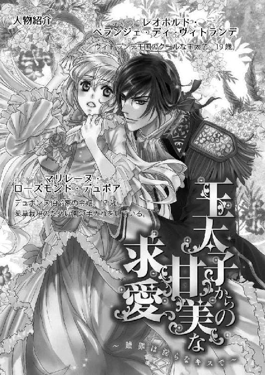
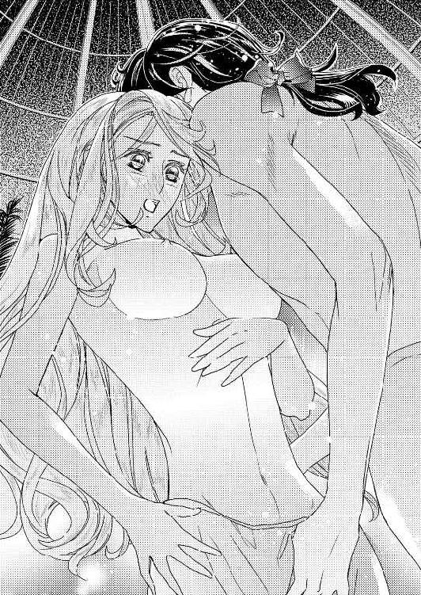

| 王太子からの甘美な求愛 ～贖罪は淫らなキスで～【SS付】【イラスト付】 (ロイヤルキス文庫) | |
| 芹名りせ | |
| (2015) | |
この物語はフィクションであり、実在の人物・団体・事件等とは、いっさい関係ありません。

イラスト・御園えりい
─朝一番に月桂樹の葉に下りた露を飲めば、どのような病もたちどころによくなる。
幼い頃に母が聞かせてくれた古い言い伝えをそのまま信じているわけではないが、マリレーヌは薬草の植えられた早朝の庭園に出るとまずは、中央にある巨大な菩提樹の隣に植えられた月桂樹の葉から朝露をもらうことにしている。それは十年来変わらない日課だ。
薬草を集めるための小さな籠を腕に掛け、簡素なドレスの上に白いエプロンを着けて、今朝も月桂樹の葉に手を伸ばした。
「おはようローリー、今日もありがとう」
まるで相手が人間であるかのように、自分のつけた名前で呼びかけ笑顔を向ける樹は、マリレーヌにとって一番の友人であり、一日の中でもっとも長い時間を共に過ごす相手でもある。
病弱だった母のために父が庭園の隅で始めた薬草栽培。それは月日と共に規模を増し、現在ではデュボンヌ伯爵家の前庭をほぼ覆い尽くすまでとなった。貴族の邸宅が並ぶリッセル通りから眺めれば、他邸に比べてあまり手入れが行き届いていないことも災いし、古い石造りの家が雑草に覆われているように見えるらしい。誰も住んでいない廃屋と間違われることもしばしばだ。
だがそれらは決して雑草ではない。一つ一つ違った効能を持つ薬草なのである。
残念なことに母は八年前にこの世を去ったが、母のために集められた薬草たちは残った。その薬草を管理し世話することに、デュボンヌ伯爵家のひとり娘であるマリレーヌは日々の大半を費やしている。
邸にはれっきとした園丁がおり、薬草の手入れを専門にする侍女もいる。伯爵令嬢であるマリレーヌが自ら作業する必要はないのだが、幼い頃からの習慣とそれをどのような遊びよりも楽しいと思う気持ちは、十七歳となった今も変わらない。誰よりも早く起き、朝日と共に庭に出る生活をもう十年以上も続けている。
「アーティチョークが咲いてるわ。フェンネルも......もう摘んでおいたほうがいいわね」
ドレスの裾をふわりと広げて目当ての草花の前で身を屈めると、背中で緩く束ねていた亜麻色の髪が前へと滑り落ちる。それを再び肩のうしろへはらう手も、微笑みをたたえた横顔も、毎日のように庭に出ているにしては透きとおるように白い。つばの広い日除け帽子の下でゆっくりとあたりを見回す群青色の瞳が、大きく繁った草木を見つけて喜びに輝く。
「あ、ルバーブも......！」
屈んだ体勢のままマリレーヌが次の植物の前へと移動しようとした時、背後で物音がした。
「え......？」
このような時間に、彼女以外の人間が庭園にいることはまずない。園丁も侍女も、早朝の作業をマリレーヌにすっかり任せているので、庭に出てくるのは朝食のあとだ。時刻を考えれば訪問客のはずもなく、訝しげに首を傾げた。
「動物でも迷いこんだのかしら？」
しかし下草を踏みしめてこちらへ近づいてくるのはどうやら人間のようで、ぼそぼそと話し声が聞こえ始める。
「............勝手に入っていいのですか？」
「いい。貰い受けることは伯爵に話してある。それにこんな早い時間に来て、こちらの都合でわざわざ起こすのは迷惑というものだろう」
「それはそうですが......」
（............！）
声からすると若い男が数人いるようだと察し、マリレーヌは急いで月桂樹の樹の陰に身を隠した。
庭には実にさまざまな種類の薬草が植えられているが、中にはなかなか手に入らないような貴重なものもある。特に、母のために父が遠くの大陸からわざわざ取り寄せたものは、このヴィトランデ王国はおろか、セルシティア大陸中を捜しても簡単には見つからないだろう。
それら入手困難の薬草を求めて邸を訪れる者は珍しくないが、父か園丁のガーラントの案内も待たず、勝手に庭園へ入ったとなれば話は別だ。何かうしろ暗いところがある者、あるいは身元をごまかしている者かもしれない。
（どうしよう......）
マリレーヌがここに潜んでいると知られたら、どうなるのだろうか。気づかれないうちにこの場を去り、父かガーラントを呼んでくるべきだと判断した。
（そうしよう！）
ドレスの裾を持ち上げ、足音をたてないように気をつけて、月桂樹の陰から移動しようとする。ところが男たちがほど近い場所で足を止めてしまう。
「おい。これじゃないのか？」
「橙色の六枚の花弁。褐色の斑点。茎は長く、披針形の葉。特徴は揃っていますね」
「よし」
前傾姿勢になり、今にも逃げだそうとしていたマリレーヌは、男たちが話している内容を耳にし、慌ててそちらをふり返った。
（ちょっと待って！ それって......？）
男たちの語る植物の特徴が、マリレーヌがもっとも大切に育てている『ミルガ』という花のそれと絶妙に一致する。急いで樹の陰から盗み見ると、黒い外套を着た二人の男のうちの一人が、網で囲われているミルガに手を伸ばし、その茎を今にも掴もうとしていた。
（............！）
ミルガは繊細で取り扱いが難しい花だ。花は肺病に、茎は血行促進に、葉は滋養強壮に良いとされるが、育てるのは手間がかかる。一株に一つしか花をつけず、芽すら出ない年もある。伯爵家の庭園にもわずかに二株しかなく、その中の一つが二年ぶりにようやく花をつけたところだった。
摘むとすぐに萎れてしまうため、収穫するならば処理する準備をじゅうぶんに整えてからでなければならない。それなのにまったく躊躇などしない乱暴な手が、細い茎をたぐり寄せ、あっさりと力ずくに千切ってしまう。
「ちょっと、何するのっ！」
大きな声で叫び、月桂樹の陰から飛び出したマリレーヌを、驚いたように男たちがふり返った。
「なんだ？」
並んだ顔は、これまでにまったく見覚えのないものだ。癖のない黒髪の男と、金に近い明るい髪色の男。どちらも背が高く、均整の取れた体つきをした、マリレーヌとそう変わらない年齢の青年に見える。黒い外套のせいで服装まではよくわからないが、案内も待たず他邸に入りこんだにしては妙に堂々としていた。
明るい髪色の男のほうはマリレーヌを見て外套の頭巾部分を取り、いかにも人好きのしそうな柔和な笑顔になる。
「あ、ひょっとして伯爵家のかたですか？ 勝手に入り、申し訳ありません。私たちは......」
しかしミルガを千切った黒髪の男のほうは、射るような視線を一瞬こちらに向けただけで、すぐにまた萎れた花に顔を戻し、苦々しげに呟く。
「なんだ、これは。枯れてしまったじゃないか」
「............！」
ミルガがどのような花でどういう特性を持っているのか、マリレーヌのように薬草に詳しい者でなければ知るはずもない。青年の呆れたようなしゃべり方も、決して悪気があるのではないだろうと察しがつく。しかし頭では理解しても感情がついていかなかった。
一瞬にして色を無くしてしまった花を前に、マリレーヌの心にはこれまで感じたこともないほどの怒りが込みあげ、気がつけば自分に挨拶しようとしていた青年を押し退け、花を握る青年の真正面に立っている。
「なんだ、お前は？」
紫水晶のような瞳が不審げに眇められ、詰問する声も厳しい。実に整った顔立ちの育ちの良さそうな青年なのだが、今は不機嫌さが際立って、見つめられるだけで逃げだしてしまいたくなるほど剣呑な表情をしている。普段のマリレーヌならば及び腰になったかもしれないが、今ばかりはさらに詰め寄った。
「誰だ？」
高潔ささえ感じる精悍な頬に、夢中で手をふり上げる。マリレーヌの手が見事に青年の頬を打ち、パーンという大きな音と共に彼は体勢を崩した。
「な......」
その格好のまま、信じられないといったふうに呆然と地面を見つめている。いかにもか弱そうな少女という見かけのマリレーヌが、まさかいきなり平手打ちをくらわすとは思ってもいなかったのだろう。しかしすぐに我に返り、怒りに燃えた瞳を向けてくる。
「いきなり何をする！ おい！」
震えあがりそうな怒鳴り声にも、マリレーヌはこぶしを握りしめ、じっと耐えた。眼差しに力を込め、必死で青年と向きあう。
「それはこっちのセリフよ！ なんてことをするの！ ミルガは茎を折ったらすぐに花が萎れてしまうの。だから花弁を集めて、葉を集めて、そのあとで茎を切らなくちゃいけないのに......たった一本でも、それはいくつもの薬の材料になるのよ。二年ぶりにようやく咲いた花だったのに！」
「え......？」
驚きの声と共に開かれた青年の大きなてのひらから、マリレーヌは気の毒な花を取り戻した。鮮やかな橙色の花弁は萎れ、葉も茎もすっかり瑞々しさを失ってしまっている。こうなってからではもうどうしようもない。悔しさと悲しさから唇を噛みしめる。眦にはうっすらと涙まで浮かんできそうだった。
「ひどいわ......」
俯いたマリレーヌの頭上では、青年が言葉に困っているようだ。いくら知らないこととはいえ、断りもなく入った他邸の庭園で、そこに生えていた貴重な薬草をだめにしてしまったのだから当然だ。マリレーヌとしても、次に彼が口にするのは謝罪の言葉だとばかり思っていた。
ところが─。
いつまで待っても青年はまったく口を開かない。長い沈黙が重い。待ちきれずに顔を上げたマリレーヌは、そこで思ってもみなかった彼の形相を目の当たりにし、今度こそその場から後退りした。
「お前......自分が今何をしたのか、わかっているのか？」
低く凄みのある声でマリレーヌにそう語りかけた青年は、苛立たしげに眉をひそめ、鋭い眼差しできつくこちらを睨みつけてくる。自分が犯した過ちを申し訳ないと思っているようには見えない。それどころか逆に、マリレーヌを責めているとしか思えない。
「何を......って？」
どうして自分のほうが詰問されるのかわけがわからず、マリレーヌは瞳を瞬かせた。青年は心持ち胸を張り、尊大な態度でゆっくりと両腕を組む。
「俺が誰だかわかっているのかと聞いてるんだ」
威圧感たっぷりの真顔で訊ねられても、マリレーヌはなんとも答えることができなかった。
彼とはこれまでに会ったことがないし、見覚えもない。まだ名乗ってもらっていないのだから、当然名前も知らない。
「わからないわ」
正直に答えると、青年が一瞬呆気にとられた顔をした。その表情はいかにも素の表情といったふうで、年齢に相応しく可愛くさえ感じる。ずっとそういう顔をしているのならば、マリレーヌとしてもこのあと会話を続ける気にもなるのだが、彼はすぐにまた不機嫌を絵に描いたような苦々しげな表情に戻る。そのためわざわざ素性を訊ねる気にもなれない。
「特に知りたくもないし」
「お前！」
まるで腰に剣でも佩いているかのように、青年が長い外套を翻して構えの格好を取ろうとした。
「............！」
まさか剣を向けられるのかと、マリレーヌは驚いてさらに後退る。その時、もう一人の青年が二人の間に割って入った。
「レオ......約束の時間より早く着いたからと、案内も待たずに勝手に入ったのは我々ですから......それに、どうやら取り返しのつかないことをしてしまったようです」
青年に視線で促され、レオと呼ばれた黒髪の青年もマリレーヌが手にしたミルガに視線を移す。怒りに上がっていた肩がわずかに下りたように見えた。
「......それは、なんとかならないのか？」
彼がよく理由のわからない憤りをひとまず鎮め、ミルガについて訊ねてきたので、マリレーヌも正直に首を横に振る。
「無理よ。枯れてしまったものはもとには戻らないわ」
「だが、俺はそれ目当てでここへ来たんだ」
「そう言われても......」
ならばもう一人の青年が言っていた約束の時間とやらを守り、父かガーラントに案内してもらえばよかったのだ。そうすればミルガについての詳しい説明もあっただろうし、むやみに手を出して枯らしてしまうこともなかっただろう。
そもそも他邸のものを勝手に摘もうとすることがおかしい。憤りが収まらずに悶々とするマリレーヌに、レオという青年が問いかけた。
「なんだ、その顔は？」
不機嫌そうに呟かれ、何かおかしいところがあっただろうかと、マリレーヌは自分の頬を撫でる。
「......？」
「言いたいことがあるのならはっきりと言え」
「......あ！」
彼はどうやらマリレーヌが不満を抱いていると表情から判断し、わざわざそれを口に出させようとしているらしかった。奇妙な気分だった。
（変な人......）
責めるような言葉をもっと聞きたいのだろうか。確かに彼には言いたいことが多々あるが、今さらそれを言ったところでどうしようもない。先ほどマリレーヌが自分で説明したように、枯れてしまったミルガはもうもとには戻らない。
ここでいくらレオを責めても、今日にでも収穫するつもりだったわくわくするような気持ちは戻ってこないのだ。お互いに嫌な思いが残るだけだ。
「もう......いいわ」
マリレーヌがため息を吐きつつ首を横に振ると、またすぐにレオの言葉が続いた。
「なんだ？ 煮えきらないな......さっき、その花のことで俺に飛びかかって来た時は、すごい剣幕だったじゃないか」
「あれは......つい夢中で！」
ミルガを千切られたことに我を忘れ、初対面の相手に食ってかかってしまった。しかし冷静になってみれば、伯爵家の令嬢としては慎みのない行為だったとも思う。
二人がどういう身分の人物なのかはわからないが、ここでさらに失礼を重ねて、父を笑いものにするわけにはいかない。マリレーヌは姿勢を正し、彼らと向きあった。
「いくら動転したとはいえ、失礼をしたことはお詫びします、ごめんなさい。でもそちらにも非があったということは忘れないで。植物にはそれぞれ特性があって、取り扱いにも注意が必要なの。よく知ろうともせずむやみに手を出さないでほしい......そう覚えていてくださればいいです。私が言いたいのはそれだけです」
「それは......申し訳ありませんでした」
マリレーヌの真剣な願いに、明るい髪色の男のほうは殊勝な顏で頭を下げてくれた。しかしレオは、聞いていたのだかいなかったのだか、微動だにせずマリレーヌを見ている。
（な、何......）
あまりに強い視線にマリレーヌが焦りを感じ始める頃になって、ようやく口を開いた。
「変な女だ」
「............え？」
思いもかけない言葉にマリレーヌが怯んだ隙に、黒い外套の裾を翻して背中を向けてしまう。
（ちょっと！）
もう一人の男のように謝ってほしいとまでは言わないが、マリレーヌの言葉はどちらかといえばレオに向けてのものだった。それなのにそれにはなんの返答もなく、「変な女」と称されただけでは拍子抜けだ。
「帰るぞ、セヴラン」
「は......いえ。しかし......」
セヴランと呼ばれた明るい髪色の青年が躊躇しているふうなのは、ミルガを枯らしてしまったことに対し、レオがまだ謝罪していないことを少なからず気にしてくれているのだろう。しかしとうの本人は、まったく気にした様子もなくさっさと帰ろうとしている。
「花が枯れてしまったのなら、もうここに用はない。次を捜す」
「ですが......」
セヴランにちらちらと視線を向けられ、マリレーヌはこぶしを握りしめた。
「ちょっと、あなたねえ！」
しかし口を開いた瞬間に、レオにこちらをふり返られ、言葉に詰まる。眼差しの強さと全身から漂う威圧感は、やはりただ者ではない。
「............！」
出そうとしていた言葉を呑みこんでしまったマリレーヌに向かい、レオが小さく呟いた。
「悪かった」
「え？」
艶やかな黒髪を揺らしてかすかに首を傾げながら、彼の告げた言葉が思いがけなく、マリレーヌは思わず聞き返してしまった。なんとなく、彼は謝罪の言葉など決して口にしないだろうと思っていたのだ。それなのに思ったよりもあっさりと謝られてしまい、かえって虚を突かれる。
その表情を声が聞こえなかったのかとかん違いしたらしく、レオは忌々しげに眉をひそめながら、声を大にして同じ言葉をもう一度くり返した。
「だから......勝手に触って花をだめにしてしまって悪かった。お前が言ったように、次からは気をつける。それと、他に宛てはないからいつになるかはわからないが、同じ花を手に入れたらここにも届けさせる。必ずそうするから待っていろ。じゃあな」
まるで喧嘩でもふっかけるかのような勢いで、耳まで真っ赤に染めながらひと息に言いきった姿を見て、どうやら彼は根っから傍若無人というわけではないのだとマリレーヌは理解した。
むしろ極端に照れ屋なことを隠そうと、必要以上に威圧的にふるまっているのかもしれない。その証拠に、言いたいことを言ったらこちらの返答も待たず、さっさと背を向けて足早に歩き始めてしまう。最後にちらりと見えたその頬は、かすかに赤く染まっていたようだった。
「あ......待って！」
初めからそういう態度で接してくれれば、マリレーヌとしても強固な態度に出たりせずちゃんと話をしたのだ。ミルガを捜すことにも、もう少し助言ができるかもしれない─。
今にも庭園から出ていこうとする背中を、慌てて追いかけようとしたマリレーヌの足元に、その時、長い紐のようなものがしゅるしゅると巻きついた。
「え？ ......きゃああああ」
いきなり駆けだしたマリレーヌに刺激されて、草叢から飛び出してきた蛇だった。庭園に蛇が現れることはそう珍しいことではなく、こちらが何もしなければ特に害もないので、マリレーヌも普段は騒いだりしない。しかしこれまでに見たことのない派手な模様だったことと、どうやらマリレーヌが尻尾の先でも踏んでしまったらしくいきなり敵意むき出しで襲いかかってきたので、思わず叫んでしまった。
驚いた蛇が高く跳ね上がり、鋭い歯がのぞく大きな口をマリレーヌに向けて開く。
（噛まれるっ！）
観念してぎゅっと両目を瞑った瞬間、腕を大きくうしろに引かれた。
「ぼけっとするな！ さっさと避けろ！」
叱咤する声に驚いて目を開けてみると、紫色の瞳を怒りに燃やしたレオの顔がすぐ目の前にある。
「あ......」
庭園から去りかけていたのに、マリレーヌの悲鳴を聞いて戻ってきてくれたのだろうか。その素早さには目を瞠るものがあるが、腕を引いてマリレーヌを移動させながら、反対の手では剣を抜き、即座に蛇を切り落とした剣さばきの見事さにも感心するばかりだった。
「あ、ありがとう......」
驚きで胸を突き破ってしまいそうな心臓を手で押さえながら、マリレーヌがぺたんと地面に座りこむと、レオは掴んでいた彼女の腕を放す。
「ああ」
声はしっかりとしていたが、彼がマリレーヌの隣に立っていられたのはそう答えたところまでだった。次の瞬間にはまるで身体の芯から力が抜けたかのように、どさっと両膝から地面に崩れ落ちてしまう。
「え？」
驚くマリレーヌの目の前で、ついにはどっと横倒しになった。
「レオ！」
慌てて駆け寄ったセヴランが呼びかけても、意志の強さを感じさせる瞳からはどんどん力が失われていくばかりだ。
「大......丈夫だ......」
「しかし！」
レオはセヴランに心配をかけまいとしているのか気丈に答えるが、みるみる具合が悪くなっているふうなのはマリレーヌの目から見ても明らかだった。
「どこか噛まれたのじゃない？」
横たわる彼の隣に座りこみ、全身にくまなく目を走らせたマリレーヌは、右手の手首あたりに二つ並んだ特徴的な傷跡を見つける。
「やっぱり！」
マリレーヌを庇って、レオは蛇に噛まれたのだ。しかも運の悪いことに、どうやら毒性のある蛇だったらしい。傷口から毒が体内に入り、身体の自由が利かなくなっている。
（どうしよう！）
考えるよりも先に、マリレーヌの身体は動いた。レオの右手を掴んで傷口に唇を押し当て、そこから血液をきつく吸いだしては、自分が嚥下しないようにして吐き捨てる。
「お前......何を......？」
意識が混濁しかけながらもレオは驚き、マリレーヌから腕を引こうとしたが、彼女はそれを放さなかった。
「じっとしていて！ とにかく毒を身体から出さなくちゃ......動かないで！」
有無を言わせず命じると、それを数回くり返す。
「これできっと大丈夫。あとは毒消しの薬草と傷を化膿させない薬草を傷口に当てて、しっかりと縛っておけば......」
自分に言い聞かせるかのように呟きながら、着けていたエプロンを裂いて作った布でひとまず傷口のすぐ上を縛る。
「薬草を処方しますから、邸の中に運んでもらえますか？」
「はい」
セヴランにレオの運搬を頼み、マリレーヌは部屋の準備をするため彼らより一足先に邸内へ戻ろうとした。しかし─。
「............え？」
その場で立ち上がることができない。見れば、緩く束ねた長い髪の先をレオが握っている。
「あ......」
指を開こうとしたが、思っていた以上にしっかりと握りこまれていた。しかも彼はとうに意識を手放してしまっている。
「申し訳ありません......こういう状態なので、このまま我々といっしょに移動していただけますか？」
「はい」
マリレーヌはセヴランの申し出に頷き、彼に抱えられたレオに寄り添うようにして邸に帰ることとなった。
傍を離れられないので、客間ではなく薬草が置いてある自分の部屋へレオを運んでもらい、普段自分が使っているベッドの上に寝かせてもらう。彼女自身も傍にいるしかなく、ベッド脇に置かれた椅子に座った。
（............）
なんとも不思議な気分だった。蛇に噛まれた直後の顔色の悪さや呼吸の乱れはなくなり、今はレオも単に眠っているように見える。だからこそ自分のベッドで素性も知らない男が横になっている様子に落ち着かない。
焦る気持ちをごまかすように、マリレーヌはレオの額に浮かんだ汗を布で拭きながら、薬草の入ったキャビネットの前に立つセヴランに指示を出した。
「右側の三番目の抽斗から一番小さな包みを出してください。その隣の抽斗の小瓶も」
「これと......これかな？」
言いつけどおりに薬を出してくれたセヴランが、それらをマリレーヌの前にある丸テーブルの上に並べながら、感心したかのように呟く。
「ひょっとして、薬草の調合も自分でされるのですか？ まだお若いのにすごいですね」
マリレーヌは照れ臭さに頬を赤くし、そっと頷いた。
「はい。書物を参考にしたり、以前薬草園に勤めていた侍女に教えてもらったり、ほとんど見よう見まねですけど......伯爵家の娘が、おかしいでしょう？」
「ご令嬢でしたか！ それはなおさら失礼を......」
セヴランは焦っているが、簡素な服を着て庭仕事に励んでいる時のマリレーヌが侍女と間違われるのはいつものことだ。
「いえ、それに関してはどうぞ気になさらないでください......私も全然気にしていませんから......それよりこれは好きが高じて作ったものですが、何度も使用していますから心配いりません。効き目も確かです」
粉状にしていた化膿止めを小鉢に入れ、水を数滴垂らし、患部に塗りやすいように練りあげる作業を続けながら説明すると、セヴランが嬉しげに頷いた。
「それは心強い！ 助かります。それではレオのことはお任せして、私は伯爵にご挨拶してまいります。お伺いするにはまだ早い時間かもしれませんが、勝手に入って庭園を荒らしてしまったお詫びもしなければ......」
「はい」
「失礼します」とセヴランが出ていく音を背中で聞きながら、マリレーヌはほっと息を吐いた。
彼は紳士的で優しい印象だが、令嬢らしくふるまおうと気を張っていると疲れる。それよりは、今は気を失っているレオと二人きりで部屋にとり残されるほうがまだましだ。
（二人きり！）
意識すると薬を塗るのに緊張してしまうので、なるべく考えないことにした。準備した薬を二種類、蛇の噛み痕が残る腕に塗布し、上から清潔な布を巻く。
「これでよし......あ」
それまで仮に巻いていた布を取り除いた時、それを作るために先ほど自らのエプロンを切り裂いたことを思い出した。着替えようと何気なく椅子から立ち上がりかけたマリレーヌは、それができずにレオに髪を引っ張られた格好になる。
「そうだわ......」
彼に髪を握られているため、傍を離れられないのだった。
「仕方ないわね」
ベッド脇の椅子に座り直し、他にすることもないのでしばらく眠るレオを見守った。
長い睫毛を伏せた寝顔は、庭園で向きあった時に感じた以上に端正に見える。眉も目も鼻も口も品よく綺麗に整っており、麗しくさえあるのだが、彼が実際にマリレーヌに向けた顔は不機嫌そうで、胡乱な表情ばかりだ。
ミルガを勝手に摘んでしまったこともあり、初めの印象は最悪だったが、新しく手に入れたらマリレーヌにも必ず分けると言い渡されたことは意外だった。実は言動ほど悪い人ではないのかもしれないと見直しかけていた矢先、マリレーヌを庇って蛇に噛まれてしまった。
（そう、私を助けてくれたんだわ......）
あの時レオが腕を引っ張ってくれなければ、蛇に噛まれて倒れていたのはマリレーヌのほうだっただろう。彼が目覚めたならば真っ先にお礼を言わなければと思う。
それでミルガを摘んでしまった無作法が帳消しになるわけではないが、少なくとも彼にはこちらの話を聞く耳はあるようだ。マリレーヌの助言を聞き入れ、これからは気をつけると言っていた。
（『これから』があるのかはわからないけどね......）
静かに眠るレオの様子に、どうやら容体は安定したようだと判断し、マリレーヌは南側の窓に目を向ける。薄いカーテン越しに柔らかな光が射しこみ、もはや早朝とは呼べない時刻になりつつあるようだ。
（朝ごはん、食べそこねちゃったわ）
庭の手入れに夢中になった時にはよくあることなので、侍女たちも特に呼びに来ることもない。しかし今日は朝早くからさまざまなことがあり、それなりにお腹が空いていた。
（そうだわ！）
確か昨日のお茶の時間に食べきれなかったお菓子がある。しかもこういう時に淹れるのにちょうどいいお茶も、マリレーヌは自作してキャビネットに保管している。砂糖がなくてもほんのりと甘い薬草茶だ。
（よし！ お茶にしましょう）
勢いこんで椅子から立ち上がったマリレーヌは、自分が今はベッドの傍を離れられないことをまたもや忘れていた。
「あ！」
長い髪をうしろに引っ張られ、転びそうになった身体を慌てて立て直した結果、勢い余ってベッドで眠るレオの上に倒れこんでしまう。
「きゃあっ、ごめんなさい！」
上から圧し掛かる体勢になってしまったことに焦っているのはマリレーヌばかりで、レオはいまだに規則正しい寝息をたてて眠っている。
（よかった。目が覚めなかったみたい）
今のうちに彼の上から退かなければと、起き上がろうとする亜麻色の髪の頭を、ところが何者かの手が阻止する。
「え？ ふえっ」
その手がマリレーヌの頭をレオのほうに引き寄せたせいで、頬を彼の胸のあたりに強く押しつける格好となり、おかしな声が出た。
「な、何？」
手はどうやらレオの手だ。眠っているとばかり思っていたのに、まさか目覚めていたのだろうか。しかしもしそうだとしても、どうして自分の頭を抱き寄せるのだろう、理由がわからない。
わけのわからないことばかりで焦るマリレーヌの後頭部を鷲掴みにしたレオの手は、離れようともがく彼女を放さんとするかのように、ますます強く胸に押しつける。
「やっ、どうして？ 何？」
混乱するマリレーヌだったが、長い攻防を続けているうちにその理由に気づいた。確かにレオは自分の上に乗りかかってきたマリレーヌを胸に抱いて放さまいとしているが、おそらく意識的にそうしているわけではない。むしろ無意識で反射的にしてしまっているだけだ。
（あ......）
自分の頭のすぐ上方で相変わらず続いている規則正しい寝息を耳にし、マリレーヌは彼の腕から逃れようとがむしゃらに暴れることをやめた。
（なんだ。寝惚けているだけなのね）
その証拠に、彼は起きている時とは口調まで変わってしまったとろんとした声で、先ほどから誰かの名前を呼んでいる。
「......どうした......ダ......怖い夢でも見たのか？」
宥めるようにマリレーヌの髪を撫でていることから察すると、おそらく寝惚けてその人物とマリレーヌを間違えているのだろう。
庭園で聞いたのとはまるで違う優しい声にどきりとしながら、マリレーヌはレオの眠りが再び深くなるまで、その体勢のままじっと我慢した。
頭を撫でる手つきから、かけられる言葉の柔らかさまで、彼がどれほどその人物を大切に思っているのかがよくわかる。同じ年頃の青年にそういった接し方をされた経験がまったくないマリレーヌは、緊張と恥ずかしさとよくわからない動悸で顔から火が出るような思いだが、次第にその気持ちは和らいでいった。
（............）
頭を撫でるレオの手があまりに優しく、思いがけず懐かしい記憶を呼び起こされた。それはかつてマリレーヌの頭を撫でてくれていた人物が、今の彼のように、ベッドで横になっている時間が長かったせいかもしれない。
（お母さま......）
病床の母の傍で、幼いマリレーヌは長い時間を過ごした。それは母が亡くなったのちにはそのまま、庭園で薬草の世話をすることに費やされるようになった時間だ。部屋で自由に遊ぶマリレーヌをベッドの上から見守っていた母は、時折彼女を呼び寄せ、今のレオのように優しく頭を撫でてくれた。
普段はすっかり記憶の彼方になってしまっている温かくも切ない記憶を、偶然の一致によってふいに呼び覚まされ、マリレーヌは喉の奥が熱くなるのをこらえきれない。
（お母さま）
ベッドの上のレオと母とでは、年齢も性別も体格もまったく異なる。しかしただ一つだけ─頭を撫でる手の優しさがよく似ていた。
（お母さま）
マリレーヌはいつの間にか自分のほうからもレオの胸にすがり、髪を撫でられる心地良さに目を閉じた。
「大丈夫......大丈夫だ......」
元気づけるように囁かれるレオの言葉は、やはり庭園で聞いた声とはまるで別人のように優しく、心に染みた。
どれほどの時間そうしていたのかはわからない。ただ早朝からいろいろなことがあった疲労からか、ベッドで眠るレオにすがったままいつの間にかうたた寝してしまっていたマリレーヌは、そのレオの厳しい声で微睡から叩き起こされた。
「おい。いったいなんの真似だ？ どうして俺とお前がいっしょに寝ている？」
「う、ん......え......？」
厳しい声で詰問され、はっきりしない頭を振りながら瞼を開くと、すぐ目の前に不機嫌そうに眉をしかめたレオの顔がある。
「きゃあああ」
反射的にその場所から飛び退いてから、マリレーヌは慌てて周囲を見回した。南向きに大きな窓がある自分の部屋。その東端に置かれたベッド横の椅子にかけていたはずが、いつの間にかベッドで眠るレオの胸に頬を埋め、いっしょに眠ってしまっていた。
部屋の中央でソファーにかけているセヴランに訝るような目を向けると、にっこりと笑顔を返される。
「私が部屋に帰ってきた時には、すでにその状態でしたよ。二人とも気持ちよさそうに眠っていたので起こさなかったのですが、お起こししたほうがよかったですか？」
ベッドの上で半身を起こしながら、レオが乱れた黒髪を不機嫌そうにかき上げた。
「どうりで石でも乗せたみたいに胸のあたりが重かったわけだ。おかげで夢見が最悪だ」
「ご、ごめんなさい！」
すっかり体重を預けきっていたマリレーヌが慄きながら頭を下げると、射るような視線を向けられる。
「お前のせいだと言ってるわけじゃない。この場合は起こさなかったセヴランが悪い」
「でも二人とも幸せそうな寝顔だったので」
「そんなはずあるか」
絹の掛け布を勢いよく払い除け、ベッドから下り立ったレオは、そのまま歩きだそうとし、かすかによろめいた。
「うっ......」
「あ！」
慌ててその身体を支えたマリレーヌは、間近から怪訝な視線を注がれ、反射的に飛び退く。
「きゃっ！ あ、これはっ......その......」
すでに毒は抜けただろうとはいえ、彼は毒蛇に噛まれたのだ。まだ動くことは避けたほうがいいと伝えたいのに、おかしな動悸がしてうまく話せない。
しばらくマリレーヌが落ち着くのを待っているふうだったレオは、埒が明かないと見ると、諦めたようにセヴランに向き直った。
「で？ 俺はどうしてこんなところで寝ていたんだ？ ここは例の花をもらいに来たデュボンヌ伯爵の邸宅か？ 見たところもう昼になりそうな時刻のようだが......」
「実は庭園で蛇が出まして......」
ことの成り行きを確かめるレオの姿を見ているだけで、どうにも気持ちが落ち着かなくなることがマリレーヌには不可解だった。
「そういうわけで、ここで少し休ませてもらっていたのです」
「そうだったのか」
どうやら説明が終わったらしいので、うっかり添い寝してしまったことを詫びようと、マリレーヌも声を上げる。
「あの！」
しかし想定よりも早くレオにふり返られ、出そうとしていた言葉が喉の奥に引っこんでしまった。しかもどうやら彼は、マリレーヌの呼びかけに応えてふり向いたのではないようだ。
「おい、お前」
まだ何も伝えないうちに逆に話しかけられ、その場で小さく飛び上がる。
「は、はい！」
「名前はなんだ？」
「あ......」
そういったごく普通のやり取りさえまだまったくおこなっていなかったのだと思い出し、マリレーヌは姿勢を正す。
「マリレーヌ・ローズモンド・デュボアです。あなたは？」
自分が名乗るとすぐにレオにも問い返したのだが、どうやら彼には聞こえなかったようだ。名乗り返す気配はまったくなく、腕組みをしたまま何かを考えこんでいる。
「あの......」
問いかけてもいいのだろうかと迷いながらも、やはり名前ぐらいは訊こうと思った。しかしマリレーヌが再び声をかけた瞬間、レオがふいに視線を上げる。その眼差しの強さばかりは、やはり何度受け止めても真正面からでは焦る。
「蛇の毒を除いてくれたのはお前だろう、マリレーヌ。なんとなく覚えている......そのあとの手当も的確だったようだ、おかげで命拾いした。薬草にも詳しいし、それを自分で薬にもするのか......伯爵令嬢なのに？」
彼の言葉に呆れた感じはなく、むしろ感心したふうだった。それはかなり珍しいことで、マリレーヌの頬は自然と綻ぶ。
「一口に伯爵令嬢と言ってもいろんな人がいます。私は今の暮らしが気に入っているの。一生懸命育てた薬草が、誰かの役にたったら本当に嬉しいもの......」
「そうか......」
静かにマリレーヌの話を聞いたレオは、それが終わるとまたすぐに背中を向けた。
「実際俺もお前のおかげで助かった。お前の名前は覚えておく、マリレーヌ」
そのままセヴランに支えられ、今度こそ本当に扉を開けて部屋を出ていってしまう。
「あ......！」
ついに彼の名前を教えてもらえなかったとマリレーヌは息を吐いたが、もともと訪問の約束をしていたようだし、あとで父に教えてもらえばいいと思った。ところが─。
「そうか。もうお帰りになられたか......」
彼らと入れ替わるようにして部屋に入ってきたデュボンヌ伯爵は、マリレーヌから彼らの帰宅を聞くと、仕方がないといったふうに頭を振る。
「忙しい合間を縫ってしか来れないとおっしゃっていたからな」
「あのお父様？ あの方たちはいったい？」
父は困ったように再び頭を振った。
「自分からお前に名乗られたのでなければ、私にそれを教えることはできないんだ、マリレーヌ」
「え？」
意外な答えに瞳を瞬かせた。彼らのことを語る父の口調はとても丁寧だ。それだけでもかなり高い身分なのだろうと想像はつく。どうしても名乗れない事情でもあるのだろうか。
彼らが何者なのかはわからないままだが、マリレーヌにも一つだけわかっていることがある。
「あの方たち、ミルガがだめになってしまったから新しいものを捜すって言ってたけど......それって難しいですよね、お父様」
「そうだね。あれは私が南の大陸からわざわざ取り寄せたものだから、他に捜すといっても、かなり難しいだろう」
「そうよね......」
なぜ欲しいのかはわからないが、彼らはそれをとても必要としていたと思い出し、マリレーヌは考えこむ。
「だからマリレーヌ、もしよかったら......」
父が持ちかけようとした提案の先手を打ち、マリレーヌは自分の胸に浮かんだ考えを言葉にした。
「ええ。庭にあるもう一株がなんとか芽を出さないか手入れしてみます、お父様。そのほうが早いかもしれないもの......それに私、あの人のおかげで蛇に噛まれずにすんだの。助けてもらったお礼も兼ねてやってみます」
「そうだね。そうしてくれると私としても嬉しいよ」
「はい」
そうと決まればすぐに、マリレーヌはクローゼットから新しいエプロンを出し、それをドレスの上に着けて、亜麻色の髪を背中で緩く結び直し、庭仕事用のつばの広い帽子を被った。
私室を出て広い廊下を抜け、父と別れて光溢れる真昼の庭園に出る。すると彼女と同じような格好をした侍女たちと、よく日に焼けた顔の青年に笑顔で迎えられた。
「おはようございます、お嬢様。今日は遅かったですね」
「それよりもお嬢様、見てくださいよ、これ！ いったい誰が......」
侍女が困ったように指差すミルガに目を向け、マリレーヌはにっこりと微笑む。
「それにも関係することなんだけど、実はみんなに手伝ってほしいことがあるの......」
早朝の庭園に現れ、嵐のように去っていった不思議な青年─レオ。彼があれほど欲していたミルガを、どうにかもう一株発芽させてみようとマリレーヌははりきっていた。
「お嬢様！ やりました。ミルガが芽を出しました！」
マリレーヌが待ちに待ったその朗報を園丁のガーラントから聞いたのは、それから半月ほどが経った日のことだった。
うららかな昼下がり。居間の南側から庭園に張りだした、そこから直接外に出ることもできる石床のテラスで、父と共にお茶を飲んでいたマリレーヌは慌てて椅子から立ち上がる。
「本当に？」
今にも駆けだして行きたそうに輝く愛娘の表情を見て、デュボンヌ伯爵はそっとそれをあと押しした。
「行っておいで。その目で確かめてくるといい」
「はい！」
普段着のドレス姿のまま庭に下り立ったマリレーヌは、裾が芝に擦れるのも構わず先を急いだ。嬉しくてならなかった。
あの日─早朝の庭園にレオとセヴランという二人の若者が現れた日以来、マリレーヌは懸命にミルガの世話を続けてきた。独自に配合した肥料を試したり、温度調節のため地面を布で覆ったり。何が正解で何が必要かもわからず、ただ夢中で世話を続けた結果、そのどれかが報われたようで嬉しい。手入れの詳細をまとめれば、きっとこれからの薬草栽培の役にもたつだろう。
こんもりと盛り上がった土の中央から、緑色の小さな芽が顔をのぞかせている様子を自分の目で確認すると、感極まって喉の奥が熱くなる。
「よかった......」
地面に座りこんだマリレーヌに、せめて作業用のエプロンを着けてはと侍女が進言してくれたが、それを断った。
「いいの。今日はもうこのままでいいわ。ドレスはちゃんとあとで、自分で洗濯するから」
「お嬢様ったら、そんなことまで気にしなくていいんですよ」
「だってみんなの余計な仕事を増やしたら申し訳ないもの」
自分の我が儘で使用人たちに迷惑をかけてはならないと、マリレーヌはできることはなるべく自分でしようとする。その姿勢を見守る使用人たちの目は温かいが、それは貴族社会においてはかなり珍しいことだ。
身分ということに関してまるで無頓着なマリレーヌの考え方は、彼女自身のことに限ってであるならば好ましいと言えるかもしれない。現に邸の使用人たちからマリレーヌは深く愛されている。しかし一歩邸から出れば、身分差の激しい貴族社会において、彼女を窮地に立たせるもとにもなりかねない。
ミルガ発芽の喜びに酔いしれたその日。マリレーヌは身を持って己の無頓着さを呪うこととなった。
「お嬢様！ お嬢様、どこにいらっしゃるのですか？」
いつも落ち着いた態度の老執事のマルクが、声を裏返らせながらマリレーヌを捜している。それは彼女がドレス姿のまま庭園に出てからしばらく経ったあとのことだった。そのため白い指先どころか頬にまで泥がつき、美しい長い髪もすっかり乱れてしまっている。その格好のまま繁みの向こうからひょっこり顔を出したマリレーヌを見て、老執事が仰天したのも無理はない。
「どうしたの、マルク？」
気心の知れた使用人たちと共に、大好きな庭いじりに勤しんでいたマリレーヌは、輝くような笑顔を老執事に向けた。しかしそこに立っていたのは小柄な老爺だけではなく、他にも客人らしき人物の姿がある。そうと気がついた瞬間、心臓が止まりそうになった。
（あ......どうしよう！）
格好もさることながら、伯爵令嬢が庭で泥にまみれている状況というのは、デュボンヌ伯爵家の内情に詳しい者でなければ驚くべき事態だ。それがわかっているからこそ、マリレーヌもせめて客人を迎える時には、伯爵家の令嬢らしく身なりを整え、おとなしく邸の中で待機するように心がけてきた。
それなのに今日に限って最高に汚れてしまっているところを見られてしまい、動揺が止まらない。しかも太陽を背にしたシルエットをちらりと見た限りでは、相手はどうやらかなり身分の高い人物のようだ。
「あの......これは、その......」
ドレスのスカート部分についた泥を払い、汚れた手を必死に背中のうしろに隠そうとするマリレーヌに、その人物は穏やかに声をかけてきた。
「お久しぶりです、マリレーヌ嬢。今日も庭に出て薬草の世話をされていたところでしたか？」
「え？」
自分が庭にいることを当たり前と受け止めているどころか、薬草の世話をしていることまで知っているらしい声に、マリレーヌは首を傾げた。声はどこかで聞いたことがある気もするが、どこだったか思い出せない。ゆっくりと顔を上げて確認した人物は、確かにマリレーヌがこれまでに会ったことのある男だった。
「......セヴラン？」
「はい。またお目にかかれて光栄です」
「いえ。こちらこそ」
優雅に胸に手を当てて会釈されたので、マリレーヌも慌てて腰を屈めたが、彼の動作があまりにも堂に入っている様子が気になった。
もともと彼もレオも身分の高い人物には違いないと思っていたが、それにしても今日のセヴランの格好には目を瞠るものがある。白が基調の金釦の上着。肩章も肩から下がる飾緒も金色で、まるで宮殿に仕える騎士のような出で立ちだ。
（まさかね......？）
訝るような目を向けるマリレーヌに、セヴランは蝋封された一通の手紙をさし出した。
「レオから手紙を預かってきました。これです。どうぞ」
そこに押された紋章がヴィトランデ王国王室のそれであるように見え、マリレーヌは何度も目を擦った。しかし見れば見るほどそう見え、受け取る手は自然と震える。
「私は客間でお待ちしていますので、準備ができたら声をかけてください。それでは」
艶やかな微笑を残してくるりと踵を返したセヴランのうしろ姿が、繁みの向こうに見えなくなってから、マリレーヌはようやくその手紙を開いた。
「いったいどなたです？」
「どうしたんです、お嬢様？」
心配して集まってきてくれた使用人たちに囲まれながら、マリレーヌはその紙面に急いで視線を走らせる。豪快だがよく整った美しい文字は、いかにもあのレオらしい。しかしそこに書かれた内容が、マリレーヌにはまったく信じられない。
─マリレーヌ・ローズモンド・デュボア伯爵令嬢。貴殿を宮殿に招待する。至急『例の花』の株と共に来城されたし。─レオポルド・ベランジェ・ディ・ヴィトランデ─
「─！」
そこにはこの国の第一王子であり、次期王位継承者である王太子の名前が記されていた。
「レオ......レオポルドって......！」
わなわなと震えるマリレーヌの手から落ちた手紙を、園丁のガーラントが慌てて受け止めてくれる。
「お嬢様、王太子殿下とお知りあいだったんですか？」
「し......知らない......」
もし本当にあのレオがレオポルド王太子殿下だとするならば、知りあいには違いないが、マリレーヌはあまりに驚きすぎてまったく頭が働かない。
「だったらもしかして、どこかでお嬢様を見初めてくださったとか？ ......きゃあっ」
ロマンス好きの侍女たちは夢のような想像を語り、手に手を取ってはしゃいでいるが、そんなはずはないとマリレーヌは首を振る。
「ううん、違う......」
「ええー？ じゃあどうしてですか？」
不満そうな侍女たちには話していないが、もしあのレオがレオポルド王子だとするならば、王宮に呼ばれ、罪を問われても仕方がないような失態をマリレーヌは犯している。
（私......どうしよう！）
怒りに任せて彼の頬を叩いてしまったことばかりが気にかかり、頭の中にはもう悪い想像しか浮かんでこない。
（投獄？ 拷問？ まさか......死刑？ 私だけならまだしも、もしお父様まで罰を受けることになったら！）
堅実に実直に宮廷に勤め、決して派手ではない暮らしでこれまでようやく維持してきた先祖代々の伯爵位を、父が自分のせいで返上しなければならないことにでもなったら、申し訳なさすぎる。
呆然と手紙を見つめていたマリレーヌは、決意してそれを握り直し、邸へと戻り始めた。
「お嬢様、頑張ってくださいね！」
「狙うは玉の輿！」
侍女たちは勝手な応援をしてくれるが、そういうことを望むような立場でないことはマリレーヌが自分で一番よくわかっている。とにかく宮殿へ行き、失礼の無いようにあの時のお詫びをするのだ。それで今さらマリレーヌの処分が変わることはないかもしれないが、せめて父を巻き沿いにせずに済むかもしれない。
（私はいいの......でもお父様だけは！）
壮大な決意を秘めて自室に戻ったマリレーヌは、持っているドレスや宝飾品の中でも最高のものを身につけ、宮殿へ向かうのになるべく相応しいように着飾った。
長い髪を結い上げ、いつもはしない化粧もし、レオが持参しろと言ってきたミルガの株も根が傷つかないようにガーラントに準備してもらい、客間で待つと言ったセヴランのもとへと向かう。
「おや、これは......見違えました」
改めて、自分は王太子付きの騎士でありレオとは遠縁でもあると自己紹介してくれたセヴランは、これほど美しい令嬢はこれまで見たことがないとマリレーヌを褒めた。
しかしマリレーヌにはそれはお世辞としか聞こえない。華やかな王宮で日々を過ごしている彼ならば、もっと美しい令嬢を毎日のように見ているに違いない。気を遣ってもらっているのだと思い、申し訳ない気持ちで頭を下げる。
「なんだか、すみません」
「どうして謝るのですか？」
レオが準備してくれたという六頭立ての馬車へマリレーヌを誘導しながら、セヴランは笑いを噛み殺したような声で問いかける。
「だって......ありがとうございます」
答えになっていない答えに、セヴランはますます面白そうに彼女を見つめたが、今のマリレーヌにそれに気づくだけの心の余裕はなかった。
（ミルガを持って来いってことは、やっぱり花が欲しいってことよね。芽が出るように世話していてよかった！ でもこれからどう世話したら花がつくのかは、お城の園丁に教えようにも、私もよくわからないんだけど......）
不安を感じながら、膝の上に置いた手を握りこぶしにする。
（それよりもまずは、あの平手打ちを謝らなくちゃ......どう言ったらいいの？）
あまりに真剣に考えこんでいたため、馬車の四角い窓の外を飛ぶように過ぎていく街の景色も、初めて乗る王室専用馬車の乗り心地の良さと豪華さも、マリレーヌの記憶にはまったく残らなかった。
薔薇色の美しいドレスに身を包みながら、俯いてぶつぶつと何かを呟き続けている挙動不審な令嬢と、そんな彼女を面白そうに見つめる騎士を乗せた黒塗りの馬車は、夕焼けに染まり始めた白亜の宮殿に、滑りこむように入っていった。
「遅い......いったい何をやってるんだ？」
鳥が羽を広げた形に聳え立つ荘厳なロナンシュ宮殿の左翼で、自室の中を行ったり来たり落ち着きなく歩きまわっていたレオポルド・ベランジェ・ディ・ヴィトランデは、何度目か声に出して毒づいた。
「も、申し訳ございません！」
部屋の端に控えていた女官の一人が頬をひきつらせて叫び、それにつられるようにして周囲の女官たちも口々にお詫びを始める。
「申し訳ございません！」
「申し訳ございません！」
「いや......」
彼女たちのことを言っているのではないとレオは弁明しかけたが、目があった瞬間、再び「ひいっ」と悲鳴を上げられ、それで全てがもうどうでもよくなった。
「......いい。全員下がれ」
「はいっ！」
あたふたと支度室を出ていく女官たちのうしろ姿を見送り、大きなため息を吐きながら中央に置かれた肘掛け椅子に身体を投げだす。
「いったい、なんなんだ」
確かに彼は柔和とは言いがたい顔の造りで、あまり笑うこともなく、どちらかといえば怒った顔をしていることが多いかもしれない。そうだとしても、身の周りの世話をしてくれる女官たちにまで露骨に恐れられている現状には、正直辟易する。
つきまとわれてあれこれ詮索されることが好きではないので、自由な環境は喜ばしくもあるが、逆に根も葉もない噂をたてられることも多く、それには憤りを感じてもいた。
「まったくどいつもこいつも......」
その中にあって、物怖じすることなく彼に近づき、頬を叩いたマリレーヌの行動は実に新鮮だった。どうやら無我夢中だったらしく、レオが誰なのかもわかっていない様子だったが、薬草栽培に没頭しているあたり、他の貴族の令嬢がたとはかなり毛色が違うように感じる。
もう一度ゆっくりと話をしてみたいと思ったが、彼女は王室主催の晩餐会にも舞踏会にも姿を見せない。聞けば一度も出席したことのない変わり者だという。
あのあと国中を捜してもミルガが見つからず、かくなる上はデュボンヌ伯爵家のもう一株を育てるしかないと思っていたこともあり、レオはそれを世話してもらうという名目で、マリレーヌを宮殿に呼び寄せるという妙案を思いついた。
「まあどうしてもというわけではないんだが......」
会って話をする以外にどうしたいわけでもない。彼女のための部屋の準備を命じた女官たちに「ついに王太子殿下に意中の令嬢が!?」と騒がれたような事態では断じてない。
しかしマリレーヌを迎えにセヴランが城を出てからというもの時間の流れがあまりに遅く、レオは時計を確かめてばかりいる。
「まだか？」
それがどういった感情に由来するものなのか、彼自身まだ気がついてはいなかった。
「それでは、こちらで少しお待ちください」
マリレーヌがセヴランに案内されたのは、宮殿の左翼に並んだ客人用の部屋の中の一つで、上品な調度品が置かれた最高級の部屋だった。
「はい」
一見、良い待遇のようにも思われるが、そんなはずはないとマリレーヌは自分を戒める。レオと再会したならば失礼のないように真っ先に謝らなければと、全身に緊張が走った。
部屋の中央に置かれた豪奢な革張りのソファーにかけていたほうがいいのか、それとも立ったまま待っていたほうがいいのか、マリレーヌは散々悩んだ末に、レオが来るまで座っていることにする。
そのため次にその部屋の扉が開いた時、相手を確かめもせずにすぐに立ち上がり、扉に向かって深々と頭を下げた。
「王太子殿下！ どなたかも存じあげず、その節は本当に失礼いたしました。申し訳ありませんでした。罪はすぐにでも償います。ですからどうか、私の父まで罰するのはお許しください。お命じくだされば私自身はどんな罰でも......！」
息もつかずそこまで一気に言いきり、部屋に入って来たと思われるレオに勇気を持って近づこうとした時、聞き覚えのある声に口上を遮られる。
「いや。ちょっとお待ちくださいマリレーヌ嬢。私は......」
声がレオのものでないことはすぐにわかり、マリレーヌは深く下げていた頭を跳ね上げた。「あ......」
そこには困ったような表情のセヴランが立っていた。
「私......！」
人違いをしてしまった恥ずかしさで、穴があったら入ってしまいたい心境のマリレーヌを、セヴランは元気づける。
「気になさらなくて大丈夫です。今のは聞かなかったことにします。それにレオも......そんな理由であなたを宮殿に招待したのではないと思いますよ」
優しい笑顔を向けてくれるが、彼の言葉は自分を励ましてくれているとしかマリレーヌには受け取れなかった。
「でも私、本当に......！」
罪を償うためならば、自分はどうなってもいい覚悟なのだとこぶしを握りしめるマリレーヌは、セヴランのうしろに、白を基調とした服を着た彼とは対照的な、黒の大礼服を着た人物の姿を見る。
「あ！」
さらさらと音をたてそうな癖のない黒髪が、精悍な頬に美しい陰影を落とす。紫の瞳は自邸の庭や私室で見た時よりさらに神秘的で、凄みと威圧感が増しているように思えた。作り物のように完璧なまでの美貌。派手さはないが優美な出で立ち。向きあうだけで気持ちが萎縮する。
何より、公の場に出る時に王族が身に着ける大礼服が異常に似合っていて、彼の正体を訝しむ気持ちは一瞬にして霧散した。そこには紛れもなく、この国で最高の地位にもっとも近い青年─王太子であるレオが、身体じゅうから威厳を滲ませて立っている。
「いったい何をしてるんだ、お前は」
彼と再会したならばまず真っ先にあの日の無礼を謝ろう。そう心に決め、何度も練習をくり返したはずなのに、その全てがマリレーヌの頭から吹き飛ぶ。
「あ、あの......」
言葉がまったく浮かんで来ず、そのくせ目だけは彼の姿から離せない。
「セヴランも。遅いと思って見に来てみれば、とっくに着いているじゃないか」
いつまでも二の句が継げないマリレーヌから視線を逸らし、レオがセヴランに咎めるような目を向ける。セヴランは悪びれもせず笑ってみせた。
「今お呼びして、あなたのところに連れて行くところでした」
「嘘をつけ」
「いえ、本当です」
二人のやり取りを呆けて見ているマリレーヌに、レオがふいに視線を戻す。
「まあいい。それよりもマリレーヌ......お前今、何かおかしなことを口走ってなかったか？」
「あ......！」
まず真っ先に謝らなければと思いつめていたことを思い出し、マリレーヌは大きく息を吸いこみ、考えてきた口上を一気にまくしたてた。
「王太子殿下！ どなたかも存じあげず、その節は本当に失礼いたしました。申し訳ありませんでした。罪はすぐにでも償います。ですからどうか、私の父まで罰するのはお許しください。お命じくだされば私自身はどんな罰でも受けます。だからどうか父だけは！」
今度こそレオの前でひと息に言いきり、深々と頭を下げたのに、それに対する返答がいつまで待っても彼から返って来ない。
（ええと......）
外出用にと珍しく髪を高く結い上げていることが災いし、下を向き続けるのがいよいよ苦しくなり、マリレーヌはついに顔を上げた。
瞬間、すぐ目の前でレオが燃えるような視線をまっすぐに自分に注いでいて、飛び上がりそうにびっくりする。
「............！」
言葉はないながら、マリレーヌが謝る前よりも、彼が態度を硬化させていることは確かだった。庭園で彼が誰かわからないとマリレーヌが答えてしまった時のように、高圧的に両腕を組み、遥か高い位置からこちらを見下ろすような姿勢で、低い声で問いかけてくる。
「で？ じゃあお前は具体的に、俺に何をして罪を償ってくれるんだ？」
百戦錬磨の騎士であっても震えあがりそうな目つきと声音に、マリレーヌは射すくめられたかのようにまったく身動きが取れなくなった。
「それは......！」
「レオ」
セヴランが助け船を出してくれようとしたのだろうが、レオはそれさえ鋭い一瞥で制止してしまう。
「黙れ、セヴラン。俺はこいつに訊いているんだ」
「私......」
さすがにそこまでは考えておらず、言いよどむマリレーヌの手をレオが掴む。
「決めていないのなら、俺が決めてやる。来い」
「あ......」
強く腕を引かれて共に歩かされながら、マリレーヌは大股で歩くレオに遅れを取らないように必死でついて行った。
これから何をさせられるのかの不安は大きかったが、彼にしっかりと掴まれた腕も、それと同じくらい気になって仕方がなかった。
マリレーヌがレオに連れて行かれたのは、宮殿内部にある小さな中庭のような場所だった。四方を部屋に囲まれているらしく、廊下や庭園から直接入ることはできない。そのため、廊下からとある部屋に入り、そこを突っ切って中庭へと出たのだが、豪華な調度品やいかにも高級そうな部屋の設えに目が眩んでしまいそうだった。
（いったいここはどこ？ 私なんかが入っていいの？）
中庭自体は、大きな樹木が植えられ、中央には噴水も設けられ、憩いの場としては素晴らしい場所だ。なかでもマリレーヌの興味を引いたのは、小部屋ほどもある硝子張りの建物だった。
「あれって......温室？」
思わず呟くと、レオがさらに先まで進んで足を止める。
「そうだ。さすがに詳しいな」
「だって夢だったの！」
今すぐ駆け寄りたい衝動をこらえ、マリレーヌは熱く語った。
「硝子張りの温室があれば、もっと南方の薬草も育てられるのにってお父様とずっと話してたの！ いくら手をかけても育たない他大陸の薬草は、きっとこの国の気候とあってないんだと思う。だからミルガだって......温室があればと何度も思ったんだけど、硝子張りの建物なんて高価なもの、そう簡単には作れないし......って、あっ！」
夢中になって語り続けていたマリレーヌは、そこまで話してはっとレオの顔をふり仰いだ。
「も、申し訳ありません、私......」
真っ赤になって黙りこむ。
マリレーヌが薬草栽培に没頭していることは、デュボンヌ伯爵家の使用人ならば誰でも知っていることだ。しかしそれでも、熱中するあまりおしゃべりが過ぎると呆れられてしまう。彼らはマリレーヌほどは薬草に興味がないのだ。
気心の知れた使用人たちでさえそうであるのに、いかにも薬草とは無縁そうなレオを相手に熱弁をふるってしまい恥ずかしい。さぞや呆れているだろうと表情をうかがうと、彼はこれまでと変わらない顔をしていた。
「見てみろ」
特に気にしたふうもなく、先に立って温室の扉を開き、マリレーヌに中を見るように促す。
隣に並んでのぞきこんでみると、温室の中央には両手を広げたほどもある大きな鉢が置かれ、見覚えのある緑の小さな芽が植えられていた。
「あ......ミルガ？」
「そうだ。お前が持ってきたのをさっそく植えた」
頷いたレオが温室の中に入るのでマリレーヌもそれに続く。外とは空気の暖かさがまるで違った。
「あれからあの花について俺なりにもっと詳しく調べた。その結果、芽が出るのにも花が咲くのにも、ようは温度管理が重要なんじゃないかと思い、これを作った」
「え......この温室新しく作ったの？ ......あっ！」
驚きのあまり声を上げてしまってから、王太子殿下に対し、先ほどからあまりにも気安い言葉遣いだったとマリレーヌは両手で自分の口を塞ぐ。
その様子をレオがちらりと横目で見る。
「今さら変に取り繕おうとしなくていい。どうせお前は、初対面から俺に飛びかかって来たんじゃないか」
「あれは！」
ミルガを摘まれて完全に気が動転してしまったのだし、レオの態度に腹が立ったのだ。ましてや彼がこの国の王子だなど思いもしなかった。
「でも悪かったと思ってます。だから私、犯した罪はちゃんと償います」
その覚悟を決めて城に来た。自分はいったい何をすればいいのかと問おうとしたマリレーヌに、レオがびしっと指を突きつける。
「よし。ならばお前には今日からこの花の世話をしてもらう。期間は花が咲くまでの間だ。もし咲かなかった場合でも、三か月を目途に家に帰すと伯爵とは約束した。必要なものがあればその都度セヴランに言え。すぐに準備させる。花が咲くまでは最初に案内された部屋を自由に使い、今通ってきた部屋をいつでも通り抜けていい。他にもお前にさせたいことができた時は、随時それに従ってもらう。罪の償いとして、俺がお前に求めるのは以上だ」
次から次に早口で語られ、呆気に取られたままのマリレーヌを置きざりに、レオはもう温室から出ていこうとしている。出入り口のところでふと足を止め、黒髪を揺らしてふり返った。
「おい、返事は？」
険のこもった表情で問いかけられ、マリレーヌははっと我に返り、急いで彼のあとを追いながら叫ぶ。
「はい！ わかりました！」
怒りにいつも上がり気味のレオの肩が、通常よりさらに上がったようにも見えたが、マリレーヌにはその理由がわかるはずもなかった。
温室を出て中庭を抜け、通常の宮殿内部に戻るにはやはりどこかの部屋を通り抜けるしかない。これからいつでも通り抜けていいと説明された、来た時と同じ部屋を通ったが、マリレーヌは気後れせずにはいられなかった。ここはおそらく宮殿左翼のもっとも奥に位置する。
（つまり王族の方々の部屋が並んでいるところよね？）
宮殿についてあまり詳しくないマリレーヌでも、少ない知識の中でかろうじてそう記憶していた。
「何をしている？ さっさと入れ」
威圧的に命じられるので中庭に面した硝子の扉から恐る恐る入ったが、どうしても緊張する。マリレーヌの私室よりも三倍は広く、壁にも扉にも家具にも豪華な金装飾が施されたその部屋は、内装にも調度品にも贅の限りが尽くされていた。色鮮やかな絨毯を踏むのにも躊躇してしまう。
（だめだわ。絶対何にも触れられない）
それなのにレオは、部屋のもっと奥に入るようにと指示する。周囲に気を配りながら進んだマリレーヌは、楕円形の大きな姿見の前で、色鮮やかな若草色のドレスをレオに押しつけられた。
「花の世話は明日からとして、今宵はまず俺につきあえ。これに着替えろ」
「え？」
持っている中では一番上等なドレスを着てきたつもりだったが、それでもやはり王宮内を歩きまわるにはまだ貧相だったのだろうかと、マリレーヌは自分のドレスに視線を落とす。するとその意図がわかったのか、レオが説明を加えてくれる。
「今宵の晩餐会にはドレスコードがあるんだ。男性は黒い礼服。女性は緑のドレス。だから着替えろと言っている。他に理由はない」
「あ......」
マリレーヌの気持ちは少し浮上したが、彼の言葉の中には聞き捨てならないものが含まれていた。
「ば、晩餐会？」
「そうだ。お前はこれから俺といっしょに王室主催の晩餐会に出席する。わかってるとは思うが、何か失敗すれば面目を失うのはお前を連れている俺だ。いいな？」
「そんな......！」
マリレーヌは悲痛な思いで胸の前で両手を握りあわせたが、レオはすでに廊下側の出口に向かい歩き始めている。
「着替えが終わったら隣の部屋に来い。ここも含め左右三部屋が俺の私室だ。用意ができるまで左隣の部屋で待っている。じゃあな」
今にも扉を開けて出ていってしまいそうな背中を、マリレーヌは急いで呼び止めた。
「ちょっと待って！」
確かに彼がいる前で着替えるわけにはいかないが、だからといって一人で着替えるのは難しい。ここまで来てきたドレスはともかく、今受け取ったドレスは背中に釦がいくつも並んでいる形だ。誰かの手伝いがなければとても着られない。
「一人では無理です。せめて誰かに背中の釦だけでも留めてもらえないと......そうだ！ あなた付きの女官を呼んでもらえませんか？」
レオの顔があからさまに不機嫌になった。
「女官はいない」
「いない？」
仮にもこの国の王子に、身の回りの世話をする女官がいないことなどあるのだろうか。呆けたような顔になるマリレーヌを見つめ、レオはますます眉間の皺を深くする。
「煩わしかったので追い払った。交替の女官が来る明日の朝までは、誰も俺の部屋には近づかない」
「そんな......！」
それでは背中に釦のあるドレスなど着れるはずもない。しかしマリレーヌは罪を償うために、ミルガの世話と並行して随時彼の言いつけに従うことと言い渡された直後だ。いったいどうすればいいのだろうかと困り果てるマリレーヌに、レオが近づいてきた。
「仕方がない。俺が手伝う」
「え？ ─！」
信じられない言葉と共に、腰で結んでいたリボンをしゅるりと解かれ、マリレーヌは悲鳴を上げる。
「な、何をするの！」
「だから着替えだと言っているだろう。早くしないと晩餐会が始まってしまう。ぐずぐずせずに脱げ」
「ぬ、脱げって......！」
マリレーヌとレオはそう変わらない年齢のように思うのだが、彼は恥ずかしくないのだろうか。顔を真っ赤にして後退るマリレーヌの耳に、再び信じられない言葉が飛びこんでくる。
「安心しろ。俺は女の下着姿など見慣れている」
「─！」
どれほど酒池肉林の生活を送っているのかと、罵りたい気持ちをようやくこらえた。しかしとんでもない王子だと、レオを見る目が変わる。
「いいわ。自分でやるから」
なおさら彼には着替えなど手伝ってもらいたくないと背中を向け、間仕切りとして置かれている衝立の奥へ逃げこんだ。着ていたドレスを脱ぎ、レオから渡されたドレスに袖を通したが、やはり背中の釦かけだけは一人ではうまくいかない。四苦八苦しているところに、レオが背後から近づいてくる気配がした。
「やはり無理なようだな。俺が手伝う。この向きならばいいだろう？ その調子では夜が明ける」
背後に立たれどきりとしたが、確かにその位置からならば背中しか見えないだろうとマリレーヌも妥協する。
「ええ......いいわ」
それでもシュミーズとコルセットが丸見えの背中を見られることは恥ずかしかった。細い首まで真っ赤に染めて俯いてしまっているマリレーヌに対し、レオは冷静だ。本当に見慣れているらしく、躊躇した様子もなくマリレーヌの背中に手を伸ばし、彼が準備したドレスの釦を順番にかけていく。
手際はいいがあまり慎重ではないので、結い上げた髪に手が当たった時は髪型が崩れてしまうと焦ったが、それ以上に驚いたのは、胸の膨らみに彼の手が触れてしまった時だった。
「─！」
特別豊かというわけではないが、コルセットによって押し上げられていた柔らかな膨らみが偶然レオの手の上に乗り、マリレーヌは声にならない悲鳴を上げる。しかし今度ばかりは彼も驚いたようで、慌ててマリレーヌの背後から飛び退いた。
「なっ！ ......な！」
何を言おうとしているのか、意味のわからない声を発しているので、恥ずかしい謝罪を口走られる前にマリレーヌは必死に叫ぶ。
「気にしないでちょうだい！ 私も気にしません！」
「あ、ああ......」
戸惑いながらも背後に帰ってきて、レオは残りの釦を留めてくれた。
「悪かった。俺としたことが年齢のことをすっかり忘れていた」
「............？」
語られる意味がよくわからず、マリレーヌが首を傾げると、レオが問いかけてくる。
「お前、年はいくつだ？」
「十七歳です」
「そうか、俺と二歳差か。ということは......そうだよな」
「はい......？」
それでも彼が何をしみじみと語っているのかはよくわからない。
「次から気をつける」
「あ......はい」
いったい何の『次』なのか疑問に思いながらも、マリレーヌはひとまず頷いた。
着替えが終わると広い廊下に出て、さらに王宮の奥深くへと進む。長い回廊を抜けていくつか階段を上下して、レオがようやく足を止めたのは、一際大きく立派な両開きの扉の前だった。
「ここは......？」
恐る恐る訊ねてみると、予想どおりの答えが返ってくる。
「今宵の晩餐会がおこなわれる『水晶の間』だ。扉が開けば王族・貴族が一斉にこちらを見るぞ。もっと胸を張れ。顔を上げろ。顎を引け。行くぞ」
「え？ え？ ......え！」
マリレーヌがレオに言われたことを半分も実行できないでいるうちに、揃いのお仕着せに身を包んだ侍従たちの手によって、荘厳な扉は恭しく押し開かれた。
「............！」
瞬間、高い天井から吊り下げられたいくつもの水晶のシャンデリアと、それらが光を照り返す数えきれないほどの燭台の灯りのあまりの眩さに、マリレーヌは室内の様子がまったくわからないほどに目が眩んだ。
「うっ」
でもそれがかえって良かったのかもしれない。一斉に自分へと注がれた驚きの視線を気にする間もなく、レオに手を引かれて歩きだす。
「行くぞ」
「は、はいっ！」
しかしとても夜とは思えない室内の明るさに次第に目が慣れてくれば、多くの人々が身体ごとこちらに向き直り、頭のてっぺんから足の先まで自分を検分しているらしいことはマリレーヌにもわかる。
「殿下が女性連れなんて珍しい......いったいどちらのご令嬢？」
「まあ、デュボンヌ伯爵家の？」
「年頃のお嬢様がいらっしゃるなんてまったく存じあげませんでしたわ」
「本当に......」
見目麗しく着飾った貴族の令嬢やご婦人がたが、羽根の付いた扇の向こうで小声で交わしているはずの会話が、とうのマリレーヌにまで筒抜けなのはなぜなのだろう。まさかわざわざこちらに聞こえるように話しているわけでもないだろうにと、心の中で首を傾げるマリレーヌの前を歩いていたレオが、とある席の前で足を止める。
「ここだ。ここに座れ」
「ええ」
言われるままマリレーヌは高い背もたれの座り心地の良い椅子に腰を下ろしたが、レオがその隣の席に腰かけるので驚愕した。
「えっ、どうして？」
見ればそのレオの向こうには、宮殿のエントランスに掲げられた巨大な肖像画の中に描かれた姿を、先ほど畏敬の念で見上げたばかりの国王陛下と王妃殿下が並んでいる。
「そんな！」
縦長の部屋いっぱいに伸びる長テーブルの中でも、もっとも上座と思われる席に案内されたと知り、マリレーヌは冷や汗が出そうなくらいに焦った。このような席に、自分が座っていいはずがない。慌てて立ち上がろうとすると、隣に座るレオに強く腕を引かれる。彼は胡乱な目を向けてきた。
「なんだ？ 騒々しい奴だな......もう料理が運ばれてくるから静かに席に着け」
「だって......どうして私がこんな上座の席なの？」
驚きと焦りのあまり、マリレーヌは公の場であるにもかかわらず言葉遣いの配慮を忘れてしまっている。その様子にレオがほんの少し口もとを綻ばせているのだが、すっかり動転している時に、彼のそんな些細な表情の変化になど気づくはずもない。
「きっと何かの間違いよ。どうかもっと末席に......」
今すぐにでも駆けだしそうなマリレーヌの腕をレオがさらに強く引き、強引に自分の隣に座らせた。
「いいか？ 間違いでも変でもない。ここがお前の席だ。俺の連れなのだから当たり前だろう。みなに注目されて恥ずかしいのなら、なるべく恥ずかしくないふるまいをしろ。そのうち席などどこでも同じだと気にならなくなる」
「............」
顔面蒼白になりそうな思いでレオの説明を聞くうちに、マリレーヌはようやく理解した。
（そう、そうなのね......）
これこそが、彼が自分に与えようとしている罰なのだ。
失敗など決して許されない上座の席で、誰にも恥ずかしくない食事をしろとは、これまで晩餐会に出席したことすらないマリレーヌにとってはひどく困難だ。その辱めと苦難を以って、罰とするということなのだろう。
（そうに違いないわ！）
一度そうだと思ってしまったら、隣で何か注釈をつけてくれるレオの声ももうマリレーヌの耳には入らなかった。
「そんなに堅苦しく構えることはない。晩餐会といってもしょせんは食事だ。運ばれてくるものを食べればいい。それだけだ」
「ええ、わかったわ！」
ほぼ勢いだけで返事すると、次々と並ぶ料理と格闘するような思いで向きあう。
肥えた若鶏の揚げ物入りスープ、鶏挽肉のパイ料理、牛肉の芽キャベツとカブ蒸し煮添え、牛肉ロール巻きベシャメル・ソース、去勢雄鶏の裏ごしムース、子牛の腎臓つきフィレ肉のロースト、鹿の背肉のベーコン巻き、若鶏のソテー、ホウレンソウのソースあえ、スモモのコンポート、焼き菓子。
とても食べきれない量の豪華な料理が、銀や硝子製の器に載せて運ばれてきてはマリレーヌの前に置かれる。気後れしそうになりながらもそれ以外の作法は知りようもなく、普段の食事と同じように母の教えに則って静かに食事を進めた。
それが植物であるにしろ動物であるにしろ、自分が食べるための食材となってくれたものに対する感謝の気持ちを忘れてはならない─それが幼い頃に、母がマリレーヌに教えてくれた食事のマナーだ。
日頃、友人のように植物と接していることもあり、マリレーヌの中にその教えはすっかり定着している。感謝の気持ちを忘れなければ、料理をいたずらにつついて終わるということもないし、一つ一つをちゃんと味わい、大切に食べる。
自然と丁寧で美しい食べ方となり、気がつけばマリレーヌには多くの視線が集まっていた。しかしとうのマリレーヌには、その視線の正しい意味がまったく伝わっていない。
（ああ......やっぱり私、どこかおかしいのね）
笑いものになることが罰だとわかっていても、ともすれば俯きがちになる。
「下を向くな。もっと胸を張れ」
「っ......はいっ！」
隣の席から時折レオがかけてくれる声も、そもそも彼の隣に座らされたことが罰だと思ってしまっているマリレーヌには、叱咤の声にしか聞こえなかった。
古くからのしきたりで、晩餐会中は私的な話を慎むことになっている。おかげで興味津々に見つめられながらも、マリレーヌがレオ以外の人物から話しかけられることはなかったが、緊張の食事をようやくの思いで終えた途端、実に多くの声がかかった。
「初めてお目にかかります、デュボンヌ嬢」
「晩餐会は初めてですか？ 可憐で初々しくて......お姿から目が離せませんでした」
「完璧なテーブルマナーですね。ひょっとして他国に留学でもされていたのですか？」
貴公子たちから一斉に声をかけられ、誰にどう答えたら失礼にならないのだかわからず慌てる。
「えっと......あの......」
そもそも邸からほとんど出たことのないマリレーヌは、同世代の男性たちと会話をすることに慣れていない。逃げだしてしまいたい思いで手を伸ばした先にレオの上着の裾があり、思わず掴んでしまった。
（あ......！）
慌てて手を引こうとするのに、逆にその手をがっしりと大きな手に掴まれる。
「え？」
瞬きする間に腕を引かれ、その場に立ち上がらされていた。
「行くぞ」
短く告げたレオが長テーブルを離れ、縦長の広間を一直線に突っ切り、出入り口に向かって歩き始めるので、手を引かれるままマリレーヌも歩く。
「ち、ちょっと......？」
「おや、他の男とは話もさせたくないご様子だ」
「よほどご執心のようですね」
レオと自分の関係を完全に誤解して邪推する声が、部屋のそこかしこから聞こえる。マリレーヌはうしろ姿のレオに必死で問いかけた。
「あのっ......いいの？」
「何が？ 食事ならばもう終わっただろう」
「いえ、そうじゃなくて......」
みなが噂していることなど、たとえ伝えたとしても、人が自分をどう思っているのかに興味がなさそうなレオには「だからどうした」とあっさり片づけられてしまいそうだ。そう考えたマリレーヌは、問い質すことをやめた。
「別にいいわ......」
「変な奴だ」
それなのに今まさに扉を通り抜け、部屋を出ようという時になって、レオがふと足を止める。
「だがまあ......もしお前に、俺との仲を誤解されては困る、または誤解されたくないと思う相手がいるのなら、今のうちに訂正しておけ」
「............！」
やはりレオは自分の行動が周囲にどのように受け取られたのかも、マリレーヌが何に困っていたのかも気づいていたのだ。それなのにあえて何の訂正もしなかったのだと思うと、マリレーヌの気持ちはなぜだか落ち着かなくなった。
「えっと......」
レオに言われたように誰かに誤解されては困るのかを思案し、おそらくこういった場に出ることも今だけで、償いが終わったのちはまた邸に引きこもるだろうと考え、特に困ることはないと判断する。
「いえ。特に訂正しなくても大丈夫です」
「そうか」
マリレーヌの答えを聞いた瞬間、レオの頬がほんの少し緩んだように見えたが、それはおそらく見間違いだろう。
（そんなはずはない......だってこれは私への罰なんだもの）
強く掴まれた腕の理由さえそう片づけてしまうマリレーヌは、それでもこうしてレオに強引に連れ去ってもらえることをそれほど嫌だとは思っていなかった。
しかしだからといって、「晩餐会のあとは舞踏会だ」と宣言されたことにはさすがに閉口する。「それも私に対する罰？」
恐る恐る確認すると、不愉快そうに眉をしかめながらも頷かれる。
「もちろんそうだ」
「できればもっと普通に、勤労とか奉仕で償いたいのですが......」
マリレーヌが正直に願い出ると、舞踏会が始まるまでの間、会場の端に置かれた椅子でゆったり寛いでいたレオは、手にしたシャンパンのグラスを取り落としそうに慌てた。
「わかった......検討する」
急に酔いがまわったのか首まで真っ赤になり、完全に顔を背けてしまった理由はマリレーヌにはよくわからない。しかしただ一人の会話の相手にそっぽを向かれてしまったため、仕方なく壁に寄りかかったまま舞踏会会場を見渡した。
会場となった『翡翠の間』は宮殿でももっとも広い部屋で、外に面した壁に多くの硝子が嵌めこまれた瀟洒な造りだった。その窓から外の風景を眺める。
夜も更ける時刻。家紋を提げた豪華な箱馬車が宮殿前の広場に延々と連なり、角灯の光がずらりと並んだ光景は、まるで宮殿に向かって長い光の道ができたかのように見える。
二階にある『翡翠の間』に向かい、石造りの壮麗な階段を上ってくる招待客の貴婦人たちの絹のドレスや宝石が、シャンデリアの下で輝くさまは実に美しく、見ているだけでため息が漏れた。
「綺麗......」
耳ざとくそれを聞きつけたレオが、一人用の肘掛け椅子に深くもたれたまま、鼻白んだような声を出す。
「くだらん......」
どうやら彼は、舞踏会をあまり好ましいとは思っていないようだ。
（だったら出席しなければいいのに......どうしてそのくだらない『舞踏会』に参加するの？）
それは王子としての彼の立場上仕方がないことなのかもしれないし、他に理由があるのかもしれない。そう考え、マリレーヌははっと瞳を瞬かせる。
（もしかして！）
これもマリレーヌに対する罰だと彼が明言した以上、その目的のためにわざわざ出席したのではないだろうか。
実はマリレーヌは晩餐会同様、舞踏会にもこれまで一度も出席したことがなかった。
夜を徹しておこなわれる舞踏会は、朝日と共に起きて庭に出る生活を続けてきたマリレーヌにとっては縁遠い催しだ。出席してみたいと思ったことがないわけではないが、翌日の薬草園の手入れを考えれば心から楽しむことはできないだろうと思い、いつも諦めていた。
そのようなマリレーヌの事情をレオが知っているとは思えないが、もし知っていて慣れない場所にひっぱり出したのならば、これは確かに立派な罰だ。無作法をして恥をかく前に、やはり参加したくないと訴えたほうがいいのではないだろうか。
（そんなことできるのかしら？）
罰をもっと普通の労働に変えてもらうことは、先ほどのやり取りから考えれば不可能というわけでもないようだ。意を決して話しかけようかとした時、ふいにレオのほうから問いかけてきた。
「なんだ？」
「え？ ......え？」
彼の声かけはいつも絶妙すぎて、今まさに口を開こうとしていたマリレーヌは大いに戸惑う。おかげで、言おうと思っていたことが全て頭から吹き飛んでしまった。慌てて彼のほうに身体ごと向き直った瞬間、目と目の間にすっと長い指を突きつけられる。
「さっきから何かに迷うような顔をしている。なんだ？ さっさと言え」
「あ......」
多くの人が行き交い、楽団の奏でる舞踊曲と人々のさんざめく声がかなりの賑わいをみせている広間で、背中を向けている自分の表情にレオはよく気がついたものだとマリレーヌは驚いた。しかし目の前にある硝子窓を見てすぐに納得する。外が暗いためそれが鏡のようになり、窓に向かうマリレーヌの顔はレオに丸見えだったのだ。
見られていたのならば今さら取り繕う必要もないと、マリレーヌは重い口を開いた。
「実は私、これまでに舞踏会に出席したことがなくて、これが初めてなの」
「だろうな」
「え？」
たったそれだけを告げるのにかなりの葛藤があったマリレーヌとは対照的に、レオの返答はあまりにも早く、軽い。しかも、やはり彼はそのことを知っていたのかと、マリレーヌは軽く失望する。
（じゃあやっぱり、私に無様な姿を晒させようってこと？ それが罰？）
真意を探るように彼の顔を見つめると、すっと視線を外された。感情の読めない横顔はほんのりと赤く染まっているようにも見えるのだが、それはマリレーヌの見間違いだろうか。しばらく見続けてもよくわからない。
「少なくとも宮殿でおこなわれる舞踏会で、姿を見かけたことはないからな」
彼が語る理由はもっともだ。マリレーヌは肯定の意味で頷き、自分の気持ちを訴え始めた。
「だから決まりごともわからないし、今度こそきっと失敗すると思います」
晩餐会の前にレオが言っていたように、そうなった場合迷惑をかける相手は同行者である彼だ。そうして罪を重ねるわけにはいかない。
「だから、できれば私......」
何か失敗する前に会場を出たいと願おうとした瞬間、レオに言葉を遮られた。
「じゃあ、この雰囲気やダンスが嫌いってわけじゃないんだな？」
「え？」
思ってもいなかった問いかけをされ、マリレーヌは驚いてレオの横顔を見つめ直した。その視線から逃げるように、レオは首が曲がってしまいそうにさらに顔を逸らす。
「だから、舞踏会の雰囲気やダンスを踊ることは好きなのかと訊いている」
「あ......」
それはもちろん好きだ。だからこそ光り煌めく『翡翠の間』を、端からうっとりと眺めていたのだし、美しく着飾った貴婦人たちを見ているだけで心華やいだ。
それにダンスに関しては、人前で踊ったことこそないが幼い頃は母の美しい歌声にあわせ、時間も忘れ毎日のように踊っていた。
「好き。それは好き」
「じゃあ、何も問題ないだろう」
「え？」
いったいどうしてそのようなことを問われたのか。マリレーヌが理解できないでいるうちにレオは椅子から立ち上がり、彼女の手を引いて部屋の中央まで進んでしまう。
「ちょっと、あれ見て！」
「え？ 王太子殿下が踊るの？ ダンスを？」
「私だって初めて見た！ 相手のご令嬢はどなただ？ 特別なご関係なのか？」
「それは......そうでしょう」
思っていた以上にさまざまな思惑を含んだ視線が、レオに手を引かれたマリレーヌには注がれる。
「............！」
下世話な噂話や根も葉もない憶測が耳に入り、マリレーヌは周囲が気になってならない。すると、人の少ないあたりで足を止めマリレーヌと向きあう体勢になったレオに、いきなり顎を掴まれ、力ずくで彼のほうを向かされた。
「ふ、えっ？」
おかしな声を上げて驚いた顔をしているマリレーヌに、強い眼差しが問いかける。
「よそ見するな。周りの声など騒音だと思っていればいい。ダンスは好きなんだろう？」
確認するように訊ねられたので、マリレーヌは即座に叫んだ。
「ええ。大好き！」
「............！」
瞳を輝かせた返答に、レオが一瞬言葉に詰まり、苦しそうに顔を歪めたがいったいどうしたのだろうか。
「あの......？」
マリレーヌが訊ねる間もなく腰に腕を廻され、ぐいっと身体を彼のほうに引き寄せられた。
「そうか。それはよかった。だがあいにく俺は嫌いだ。だからステップがどうのと文句を言われてもどうしようもない。そっちが適当にあわせろ」
「え......ええ」
マリレーヌが頷くとすぐに、まるでふり回すかのように大きく身体を回転される。
（きゃあっ）
悲鳴を心の中だけで留めることができたのは正解だった。息もできない速さで人々の間を縫うように進むレオは、まるで騎士が敵と対峙している時のように真剣な顔をしている。そのためすれ違う人々が恐れをなして離れ、自然と二人の周りには広い空間ができた。
（すごい！）
速さはもちろんだが力強さにおいても、先ほど見学していた他の男性たちのダンスに比べ、レオの踊りは群を抜いているとマリレーヌは感じた。片手と腰を支えられているだけだが、マリレーヌのつま先は軽く床から浮き、小柄な身体がまるで体重を感じさせずに宙を舞う。
「ほお......」
「なかなかダンスのお上手なご令嬢だな」
自分に与えられる称賛の言葉も感嘆のため息も、実はレオが受けるべきものなのだとマリレーヌは実感していた。
（嫌いでも苦手ではないのね......）
先ほどのレオの話からすると、さぞやひどいダンスなのかもしれないと覚悟を決めていたが、実際はその真逆だった。彼がエスコートすれば、たとえどれほどダンスが苦手な令嬢でも、背中に羽根があるように見えるかもしれない。
夢中で一曲を踊り終え、大きく息を弾ませながら、マリレーヌはその気持ちをレオに伝えた。
「すごいわ！ とっても上手なダンスだった！ どうして嫌いなんて言うの？ すごく活き活きと踊ってたのに」
きらきらと瞳を輝かせるマリレーヌから、レオはやはりふいっと視線を背け、半ば背を向ける格好になりながら問いかける。
「で......楽しかったか？」
「え？」
思いもかけない問いかけにマリレーヌは首を傾げたが、これまでの例からすると、このままではまた彼に同じ質問をくり返させることになる。何度も同じことを言わせるのも申し訳なく、レオが再び口を開く前に急いで自分の気持ちを言葉にした。
「ええ。とても楽しかったわ！」
一瞬、レオが眩しげに目を細めたように感じたが、マリレーヌが見直した時にはすでにいつもの、どちらかといえば不機嫌に見える表情に戻っている。
「そうか」
返事は短く、彼のほうはどうだったのかを知ることはできなかったが、マリレーヌにとっては素晴らしい経験だったことには変わりない。
（すごく楽しかった......って、え？ 待って......？）
これは確か、マリレーヌが犯した罪に対する罰ではなかっただろうか。しかし楽しいばかりで、罰だとはとうてい思えない。
（それじゃあ、なに？）
純粋にレオに楽しませてもらったと思えばしっくりくるが、マリレーヌが彼にそうしてもらう理由はない。むしろ罰を受けるほうが正しいのだから─。
（これでよかったの？）
今宵彼に連れて行かれた晩餐会も舞踏会も、初めての経験に緊張こそすれ、出席してみればよい経験になり楽しいばかりだった。これでは罰にはならないのではないかと、マリレーヌは舞踏会の間の休憩時間に、レオに訊ねてみることにした。
王室主催の舞踏会は間に数回の軽食を挟み、夜更けまでゆったりと続けられる。平和な国家の富と繁栄を誇るような催しだ。
夜更かしに慣れていないマリレーヌは日付が変わるあたりから強烈な眠気に襲われたが、レオに『罰』について訊ねるまでは眠ってはならないと、必死に我慢した。三度目の休憩でようやく彼がいったん支度部屋に帰ると言いだしたので、マリレーヌもそれに従う。
足早に広間を出ていく背中において行かれないように、懸命に小走りで追いかけていたのに、廊下の途中で現れた数人の男たちに行く手を阻まれた。
「デュボンヌ伯爵令嬢ですよね？ 先ほど晩餐会でお見かけした時からお話させていただきたいと思っていました。お会いできて光栄です」
「あ、ありがとうございます......」
「今宵はレオポルド殿下としか踊られないのですか？ もしそういうお約束があるのでなければ、次はぜひ私と！」
「私とも！」
「私も！」
どうやら彼らはマリレーヌがレオと離れる瞬間を待っていたようで、足止めされているうちに男たちの数はますます増えていく。
「あの......私......」
レオと特別な約束をしているわけではないが、これは普通の舞踏会参加ではないと承知している。彼からの『罰』だと宣言されている以上、勝手に他の相手と踊っていいとは思えない。それでは本当にただの楽しみになってしまう。
「ええと......」
どう説明したらいいのかと考えるうちに、輪は幾重にもなり、次第にマリレーヌは息苦しくなってきた。身長差があることもあり、このままでは男たちに押し潰されてしまいそうだ。
「あのっ......！」
意を決して大きな声を出すと、くらりと眩暈がする。
「大丈夫ですか？」
一斉にさし伸べられたどの手にも、実を言えば掴まりたくなかった。
（助けて......）
先に広間を出てしまったので無理だと思いながらも、ついレオのうしろ姿を捜してしまう。迫る男たちはますます増え、気分も悪く、マリレーヌが顔を覆ってその場に座りこんでしまおうとした時、聞こえるはずのない声が聞こえた。
「おい、何をしてるんだ？」
不機嫌そうな声がかかると同時に、マリレーヌを取り囲んでいた男たちは蜘蛛の子を散らすように逃げていく。顔を覆っていた手を除けてみると周りには誰の姿もなく、いったいどこに消えてしまったのか気配すら感じなかった。
「あ......」
わざわざ引き返してきてくれたのだろうか。レオが眉をしかめて目の前に立っている。せっかく綺麗な顔立ちをしているのに、どうしてそういう表情しかできないのだろうと残念に思う不機嫌な顔も、今だけはマリレーヌをほっと安堵させた。
「少し目を離した隙に......まったくとんでもないな」
忌々しげに呟きながらレオが腕を引いてその場に立たせてくれ、マリレーヌは嬉しく思ったものの、それと同時に不安にもなる。
（ひょっとしたらこれでまた一つ......王太子の手を煩わせたという罪を重ねてしまったことになるのかしら？）
まだ罰らしい罰を一度も受けていないのに、罪ばかりが重なってはたいへんと青くなった。
「どうした？」
レオに訊ねられたので、なるべく率直に自分の気持ちをありのままに言葉にする。
「どうか私に、早く罰を与えて！」
表情を強張らせたレオが凍りついたように硬直してしまったが、それがいったいどうしてなのかと考えている余裕さえ、今のマリレーヌにはなかった。
縦長の窓に寄りかかり、重厚なカーテンの隙間から暗闇に沈む真夜中の庭園を見下ろしながら、レオは長い時間、答えの出ることのない思案に耽っていた。
（俺にいったいどうしろっていうんだ？）
鏡代わりのような窓硝子には、部屋の中央に置かれた椅子に座り、神妙な面持ちのマリレーヌの姿が映る。
舞踏会会場で踊っていた時はあれほど晴れやかな笑顔だったのに、それはすっかりどこかへ消し飛んでしまった。その原因が彼女を取り囲んだあの男たちにあるのならば、二度とそういうことができないように制裁を下すくらい簡単なことだが、どうやらそうではないらしい。
そもそもレオが宮殿に呼び寄せたことを、先日の失礼に対して自分に何か罰を与えるためだと彼女は信じこんでいるのだ。
（そんなはずあるか！）
あの日のマリレーヌには、感謝こそすれ怒りの気持ちなどない。レオは彼女に命を救われたのだ。だからこそお礼をしたいと、「花の世話をしてもらうためだ」と理由までこじつけて宮殿に招いたというのに、その気持ちはまったく届いていない。
（まあ、言ってないから当然なんだが......）
何か適当に罰を考え、それで彼女を納得させればいいのだろうが、あいにくレオには女性をひどい目に遭わせる趣味などなかった。
（どうしたものか......）
散々迷って答えが出ないでいるうちに、マリレーヌが口を開く。
「あの......さっきはありがとうございます」
「............？」
何の話をされているのだかわからず、ふり返って訝しげな表情をしたつもりだが、どうやら眉間の皺が深すぎたようだ。マリレーヌがびくりと肩を震わせ、ひきつったような顔になる。
「あの......男の人たちに囲まれたところを助けてもらったから......」
「ああ」
それは彼女にお礼を言われるようなことではなく、単にマリレーヌが男に囲まれた光景を、レオが気に入らなかっただけだ。だから目についた途端、蹴散らしに走った。しかしその理由を正直に語るわけにもいかず、ただ短く頷く。
「次から気をつけろ」
他に言いようもなくそう告げたが、マリレーヌが気をつけてどうにかなる問題ではないとわかっていた。
「はい」
申し訳なさそうに返事したマリレーヌを見ていると、どうしてこうなるのだと苛々が募る。
デュボンヌ伯爵家でマリレーヌに命を救われてから、なんとかお礼ができないかとレオは彼女について調べたが、れっきとした伯爵令嬢であるにもかかわらず、ほぼ邸から出ない生活をしていることには驚いた。何かの間違いではないかとも思ったが、実際にマリレーヌと再会して確信した。─確かに彼女は華やかな場にまったく慣れていない。
飾り気のない性格と裏表のない優しさは、宮殿でよく見かける貴族の令嬢たちからは感じないものだ。だからこそこれまで極度の女嫌いで通ってきたレオが、マリレーヌに対しては嫌悪感を抱かなかったばかりか、もう一度会って話がしてみたいとさえ思った。しかしいったいどこで間違ってしまったのだろう。このままでは罰を受ける者とそれを下す者という関係でしかなく、それを実行しないことを本人に責められさえする。
（どうしたらいいんだ？）
それにもう一つ、自分がマリレーヌを宮殿に呼び寄せたせいで、彼女をたいへんな事態に巻きこんでしまったとレオは感じていた。それは彼女が生涯自邸から出ることなく、薬草の世話をして暮らしていたならば決して巻きこまれることはなかった事態だ。しかもレオ自身、まさかこれほどまでとは思っていなかった。
ちらりと、椅子に座るマリレーヌの姿を盗み見る。雪のように白い肌、流れるような亜麻色の髪、知的に煌めく群青色の瞳は女性らしい優しさを滲ませ、薔薇色の唇が可憐な彩りを添える。
簡素な服を着てつばの広い帽子を被っている時には気がつかなかったが、マリレーヌは実はかなりの美少女だった。それもまだ何にも染まっていない純粋さが際立つ愛らしさだ。
レオは決してそれを意図したわけではなかったのだが、今宵の晩餐会と舞踏会で彼女は数多くの人々の記憶に鮮やかに刻まれただろう。これから多くの男性からの求愛に悩むことになるかもしれない。しかしそれをうまく処理できるとはとても思えない。
（仕方がない......）
自分が原因を作ったようなものなのだからと、レオは覚悟を決めた。せめてマリレーヌを、自分で自分の身は守れる程度に教育しなければならない。その結果自分が嫌われることになったとしても、狼の中に投げ入れられた仔羊のような彼女を、せめて一糸報いることができる仔犬ぐらいに育てるのは自分の義務だ。憎まれ役をひき受けよう。
「おい、決めたぞ」
凄みのある声で呼びかけると、マリレーヌが不安そうな顔をする。それがいけない。実はレオを平手打ちできるほどの思いきりと勇気を持っているのだから、それを正しく使ったほうがいい。そんな頼りなげな顔を見せては、力ずくでどうにでもできるのではないかと、男は野蛮な暴挙にも出かねない。
「いいか。今から俺がお前に世間の厳しさを教えてやる。これが罰だ。だがうまく避けることができたら、特にそれを咎めはしない。それでお前の償いは終わったとし、先日のことも全て無かったことにしてやる。だからなるべくうまく抵抗して避けるようにしろ。いいな」
「はいっ！」
これから罰を与えるという宣言に、これまでで一番大きな声ではっきりと返事をされ、活き活きとした瞳で見つめられ、レオは複雑な心境だった。
（いったいどんなことをさせられるのかしら？）
レオの宣言にどきどきと胸の音を大きくしながら、マリレーヌはその時を待った。長く窓から外を眺めていた彼が重厚なカーテンから手を放し、こちらへと近づいてくる。途中で黒の上着を脱ぎ、首に結んだクラヴァットを緩めたのはなぜだろう。考えるうちにすぐ目の前に立っていた。
マリレーヌがかけている椅子の背もたれに手をつき、上半身を曲げてさらに顔が近づく。レオのよく整った端正な顔が、今にも鼻と鼻が当たりそうなほど近くに迫り、マリレーヌの心臓は口から飛び出してしまいそうだった。息を吐くのでさえ、それが彼にかかりそうで恥ずかしい。
（ど、どうしたら......？）
顔を真っ赤にして焦るしかないマリレーヌに、レオがごく至近距離から胡乱な目を向けた。
「おい」
「は、はい！」
返事と共に思わず身体が跳ね、その弾みで、マリレーヌの唇とレオの唇がかすかに触れた。
「え？」
信じられないとばかりにレオが紫色の瞳を大きく見開いたが、それはマリレーヌも同じだ。
「─！」
声にならない叫びを上げ、慌ててレオから離れようと後退る。しかしすぐに椅子の背もたれが背中に当たり、それ以上は下がれない。
（なんっ......なんで？ どうして？）
そもそもレオがあれほど近くに顔を寄せていたから悪いのだ。偶然唇が触れてしまったことで怒りに燃えた顔を向けられても、マリレーヌにはどうすることもできない。熱くなりすぎて沸騰してしまいそうな頬を、必死にてのひらで隠した。
「何をやってるんだ、お前は......」
その仕草を見てレオが少し表情を緩めてくれ、どうやら彼は自分を怒っているのではないのだとマリレーヌは確認する。
「抵抗して避けろと言っただろう。自分から近づいてどうする」
「あ......はい」
そういえばレオがそのような話をしていたと思い出し、マリレーヌは納得して頷いた。
「いいか？ さっき大勢に囲まれてお前も少しはわかったと思うが、嫌なら嫌とはっきり突っぱねなければ、男はますます図に乗る。俺が自らその練習をさせてやろうと言ってるんだ。わかったらきっぱりと拒否してみろ」
「はいっ！」
鼓舞するような言い方をされ、マリレーヌは反射的に勢いのある返事をした。しかし実際には、自分は具体的に何をするべきなのかまだよくわかっていない。先ほど偶然唇が触れてしまった時のようにレオにぐっと顔を近づけられ、思わず目を瞑ってしまった。
「─！」
「おい......なんのつもりだ？」
沈黙ののち、レオが苛立ちを懸命に抑えたような声で問いかけてくる。マリレーヌは固く閉じていた瞳を開いた。今にも唇が重なってしまいそうな位置に彼の顔があり、また身体が飛び上がりそうになる。同じ過ちを犯してはならないと、必死でそれをこらえた。
睫毛が触れそうな位置から退くことなく、瞳をのぞきこむようにしてレオが語る。
「俺は、嫌だと思ったら抵抗して避けろと言わなかったか？ このままではまた唇が重なるぞ」
「あ......」
先ほど一瞬唇が触れた時の感触を思い出し、それがまたすぐ傍にある気配に、マリレーヌの胸の鼓動は速くなる。
「押し退けてもいい。お前の邸でやったように叩いてもいい。とにかく自分で自分の身を守ってみろ」
手首を掴んでさらにレオのほうに引き寄せられ、頬に頬を押しつけられた。確かにあとわずか彼が顔を傾ければまた唇が重なる。そう意識すると、マリレーヌの心臓は今にも胸を突き破らんばかりに高鳴った。しかしレオを押し退けようとか、この場から逃れたいという気持ちがまったく起こらず、そのことに焦る。
（どうしよう......どうし......）
確かにこれが、見も知らない男相手だったならば想像するだけで嫌だ。ぐるりと囲まれた時にはあの場から逃げだしたいと心から願った。だが今はまるで状況が違う。レオはマリレーヌにとって知らない人ではなく、むしろ同じ年頃の男性の中ではもっとも多く会話を交わした部類に入る。
そのため腕を掴まれても顔を近づけられても、押し退けて逃げたいほどの不快を感じないのかもしれない─しばらく考えた末、マリレーヌはその結論にたどり着いた。
「あの......」
おずおずと口を開くと、頬に頬を寄せたままレオが答える。
「なんだ？」
耳のすぐ近くで囁かれる声は優しく、とくりとマリレーヌの心臓はこれまでと違う跳ねかたをした。
（あれ......？）
胸の奥が苦しい。今までに感じたことのない身体の変化に不安を覚えたが、今はまず自分の状況をレオに正直に語ることが先だ。
「私......嫌じゃないみたいです」
「は？」
呆気にとられたようなレオの声が耳のすぐ傍で響いた。彼が怒った以外の表情をしていることは珍しいので、いったい今どういう顔をしているのか見てみたいと思う。しかし頬を寄せあっている格好なので、それが見られないことが残念だ。
いきなり叱咤されなかったことに勇気を得て、マリレーヌはさらに詳しい説明を試みた。
「押し退けてでも逃げたいと思うほど、こうしていることが嫌じゃない。たぶん......さっきのようになっても......」
マリレーヌは言葉を濁したが、それはレオと口づけてもいいと言ってしまったのと同意だ。おそらく予想していなかっただろう展開に、レオは「うっ」と唸ったまま何も言わない。
よく考えればはしたないことを言ってしまったようにも感じ、マリレーヌは急いで言葉を足した。
「だからこれもやっぱり罰にはならないわ。もっと他の償いにしてもらえないかし......」
言い終わらないうちに顔の横にあったはずのレオの顔が目の前に現れ、唇に柔らかな何かが重なった。
（............！）
驚きに目を瞠ったマリレーヌは慌ててそれを閉じる。まさか本当に口づけられるとは思っていなかった。不意をつかれて大きく跳ねた心臓が、そのままどきどきとこれまでにない速さで脈打つ。
「............っ」
それは明らかに、偶然唇が触れただけの先ほどとはまるで異なる口づけだった。強く押しつけられた唇が、よりいっそうぴたりと重なる角度を捜して、マリレーヌの唇の上を滑る。
「ん......っ、う......」
柔らかく温かい唇に、呼吸も奪うように唇を塞がれ、胸の動悸は収まらないし身体中の血液が逆流したかのように顔が熱くなる。頭がぼうっとして考えがまとまらず、身体を支えていることが辛くなり、すがるようにレオに腕を伸ばした。
「んっ......」
逞しい腕で背中を支えられ、そこからまた口づけが深くなったように感じる。口角から漏れる唾液にも唇を寄せられ、重なる唇が滑らかさを増す。強く吸われ、啄むように挟まれ、頭の芯が痺れた。
（私......）
このままではいったいどうなってしまうのだろう。初めての口づけに意識を飛ばしてしまいそうになりながら、マリレーヌは必死でレオの胸にすがる。背中を支えてくれていたレオの手が上方に上がり、先ほど彼が留めてくれたマリレーヌの背中に並んだドレスの釦にかかった。
（え？）
躊躇なくそれを外した指は、さらにその下の釦へと進む。
「んっ？ ......ん......っ」
いったい彼は何をするつもりなのか、マリレーヌは驚いて身を捩るが、唇は重ねられたままだ。声を出したくてもできない。
「んう......っん」
レオのシャツの胸もとを掴んでいた手をこぶしに変え、抗議のつもりで数回胸を叩いた。それでも口づけは終わらないし、背中の釦はどんどん外されていく。
（いやあっ！）
渾身の力を込めてレオの胸を押し、長すぎる口づけの束縛からマリレーヌはようやく逃れた。
ほぼ全て釦を外されてしまったドレスが肩から落ちそうになるので、慌てて胸元で押さえる。長く口づけていたせいと、これまで揮ったこともない力をふりしぼったせいで、すっかり呼吸が乱れてしまい、大きく肩を上下させなければ息ができない。
「......っ......はあ」
胸を突かれた勢いでマリレーヌから数歩離れたレオもそれは同じようで、大きく息を乱しながらこちらを見ている。精悍な頬の上部がうっすらと赤く染まり、紫色の瞳は熱く潤み、薄い唇が濡れている様子を見つめ、マリレーヌは頭が沸騰してしまいそうだった。
「どうし......？ ど......」
憤りのあまり涙が溢れそうになるのを必死にこらえ、問いかけるマリレーヌからふっと視線を外し、レオが気まずそうに前髪をかき上げる。
「遅い。遅すぎる」
「あ......」
彼は自分に、嫌なことは嫌だとはっきり突っぱねる練習をさせてくれていたのだと思い出し、動揺しきっていたマリレーヌの身体から力が抜けた。それを察してくれたようで、レオが再び二人の間の距離を縮める。びくりとマリレーヌの身体は震えた。
「だがまあ、よくやった。いざという時にそれぐらいの力が出せるのなら最悪なことにはならないはずだ。例の平手打ちもあるしな」
突然の口づけに翻弄され、マリレーヌは心臓が壊れそうな思いをし、今もまだ胸の動悸が収まらないというのに、レオはかなり冷静に見える。
「あとはもっと早くにそれを発揮するようにしろ。そこまでやられてしまってからでは、実際遅すぎる」
「............」
ドレスを脱がされかけ、白い肩を出してしまった姿を咎めるように指摘され、マリレーヌは恥ずかしさに顔を伏せた。
「とにかくこれで練習は終わりだ。今後そういう場面に遭遇した時は、今の練習の成果を存分に発揮しろ、いいな」
「......はい」
俯いたまま顔も上げないマリレーヌをさすがに心配になったのか、レオが少し声を和らげる。
「お前も嫌な思いをしただろうから、それを俺からの罰とする。先日のことももう気にする必要はない。それでいいか？」
どうやら先に彼が宣言したように、これで償いは終わりになるようだ。
─しかしマリレーヌは納得がいかなかった。
「あの......」
勇気を出して顔を上げると、目の前にレオの姿がある。彼の前で乱れた服装でいるのは恥ずかしく、胸もとを押さえる手を少し上に上げたが、言葉はそのまま続けた。
「でも私、本当に嫌じゃなかったの」
「え？」
大きく瞳を見開いて、驚愕したようなレオの表情が珍しい。それを目にしてマリレーヌの心はこれまでより軽くなり、言葉も自然と出やすくなる。
「このままじゃドレスが脱げてしまうと思って、だから恥ずかしくて力が出たけれど、それはあなたとキ......キスしたのが嫌だったからじゃない......」
マリレーヌはどんな時でも自分に嘘を吐かず、正直でありたいと思っている。だから話す言葉もできるだけ自分の本心そのままを告げたいが、さすがに今ばかりは恥ずかしい。
「だから......これは罰にはならないかも......」
それでも懸命に語り終わると、レオが見るからにがっくりと肩を落とした。
「お前......」
深々とため息を吐いたレオの様子は途方に暮れているようにも見えた。彼に迷惑をかけているという自覚はあるが、それでもそれがマリレーヌの本心なのだから仕方がない。
「すみません......」
率直に頭を下げると、レオが顔を上げた。
「俺にいったいどうしろっていうんだ？」
「できればもっと別の罰を......」
これまでにも口にしたことのある願いをくり返しただけであるのに、レオが軽く息を呑む。
「それは......俺を誘ってるのか？」
「え？」
意味がわからず首を傾げたマリレーヌを見つめ、レオは苦々しげに唇を歪めた。
「だよな。言葉どおりの意味だよな」
「......？ はい」
それでは言葉どおりでない意味もあるのだろうかと、疑問に思うマリレーヌの頬に、レオが手を伸ばす。
「俺だって男だからな。そんなふうに言われたら歯止めが利かなくなるぞ......」
「え？」
上向けられた顔にレオの顔が近づいてきたので、マリレーヌは反射的に瞳を閉じた。
「だから、それじゃ何度やっても罰にならないだろう」
呆れたようなレオの声に、かすかに甘さが滲み、近づく気配がいっそう濃くなる。
（あ......）
このまままた口づけられるのだと思い、マリレーヌの胸がとくりと跳ねた時、背後の扉がノックされた。
「失礼します。お取り込み中のところ申し訳ございません」
瞬時にマリレーヌから飛び退いたレオが、憮然とした声で答える。
「別に取り込んでなどいない。なんだ？ セヴラン」
扉越しに聞こえてきたのは確かにセヴランの声で、マリレーヌは慌てて乱れたドレスを直そうとした。しかし背中の釦にまでは手が届かない。レオが背後に廻りこみ、釦をかけてくれる。
「いつもの『あれ』です......今行かれますか？」
指が背中をたどっていく気配に、マリレーヌはどきどきと胸の音を大きくしているのに、レオは釦をかけながら扉越しにセヴランと平然と会話を続ける。
「ああ大丈夫だ。すぐに行く」
その落ち着きが、マリレーヌの胸を鈍く痛めた。
釦をかけ終わったレオは、背後からマリレーヌの耳に唇を寄せる。
「俺は用があるからちょっと席を外すが......ここにいるか、お前に用意した部屋に帰るか、さもなければ俺の部屋に行け」
「え？」
舞踏会はまだ途中であるのに、そこに戻らなくていいのかと瞳を瞬かせるマリレーヌの肩を、レオがてのひらで包みこむように握る。
「俺が見張っていられないのに、狼どもの中に一人で戻せるか。いいな、もう『翡翠の間』にだけは戻るなよ」
「............はい」
それはレオが監督責任の立場から言ってくれた言葉なのかもしれなかったが、まるで彼の独占欲のようにも聞こえた。
もしそうならばいいのにと、ちらりと考えてしまう自分の本音を、扉を開けて部屋から出ていくレオのうしろ姿を見送りながら、マリレーヌは初めて自覚した。
翌日、太陽の光がロナンシュ城の白い城壁を曙色に染める頃、マリレーヌは柔らかなベッドの上で目を覚ました。
「う......ん......」
寝返りをうつたびに頬に触れるシーツが、いつもより柔らかい気がする。頭を乗せた枕も顔の中ほどまで沈みこんでしまうほどにふかふかで、そのまま顔を埋めてもうしばらく微睡みたい気持ちを必死で制した。
（いけない、いけない。ミルガが芽を出したばっかりなんだからここで気を抜くわけにはいかないわ。せめて何も変わりはないかくらい、朝食前に確かめておかなくちゃ......）
夢うつつにそこまで考えて、はっと我に返る。
「そうじゃない！」
弾みをつけて起き上がった勢いで、ベッドの天蓋を支える柱に頭をぶつけ、頭を抱えた。
「いたたたた」
マリレーヌの自室のベッドには天蓋などない。もちろんそれを支える柱もない。頭上の天幕に刺繍された金糸の花模様を見上げながら、ここはリッセル通りに面したデュボンヌ伯爵邸ではないことを再確認した。
「そうだわ......」
畏れ多くも王太子殿下からの招待状で、マリレーヌは昨日宮殿に招かれたのだった。そして王太子─レオから、宮殿に留まりミルガの世話をすることを命じられた。やっていることは昨日までと同じでも、王太子直々の命令である以上、そこに課せられる責任の重さが違う。
「たいへん！」
カーテンの隙間から朝日が射しこみつつあることを確認し、マリレーヌはベッドから滑り下りた。着慣れた庭仕事用のドレスに着替えようとしたが、さすがに持参しておらず、中の物を勝手に着ればいいとレオが語っていたクローゼットを開けてみる。
「ええっ、これ？」
そこに並んでいたのは絹の布地にフリルをあしらった色とりどりのドレスで、いつものように土が付いても構わないような服は一着もなかった。
「こんなの無理よ......どうしよう」
迷っている時間はない。仕方なくその中でももっとも飾りが少なく、形もシンプルなものを選ぶ。しかし動きやすい代わりに身体のラインがはっきりとわかり、胸もとが強調されるようなデザインだった。
「これ......」
鏡に映った自分を見ながら、マリレーヌは戸惑う。早朝のことで宮殿内もあまり人が歩きまわっているとは思えないが、それでも誰かに遭遇したとしたら、よほど体型に自信がある女性なのだと思われかねない。
「そんなことないのに......」
昨夜、晩餐会や舞踏会に出席してみてよくわかった。マリレーヌが想像していた以上に、宮殿には多くの美しい女性がひしめきあっている。その中に入ってみれば、自分がいかに場馴れしておらず、洗練されていないかということをますます実感する。やはり自宅の庭園で草花に囲まれているほうがしっくりした。
しかしあの穏やかな日々に戻るには、ミルガを咲かせてレオに献上すると共に、彼に無礼を働いた罪を償わなければならない。出会いが出会いであったためつい気安い態度で接してしまうし、彼が与える罰もまったく罰になっているようには思えないが、だからこそせめてミルガだけはなんとか咲かせたい。
マリレーヌは決意を胸に自分用の客間を出て、誰にも会わないようにと祈りながら廊下を急ぎ、ミルガが植えられた温室のある中庭へと抜けるための部屋の扉を開けた。
レオの私室だというその部屋は、いつでも通り抜けていいと言い渡されている。そのため躊躇なく扉を開き、逃げこむように滑りこんだのだが、ふり返ってすぐのところに人影があり声にならない悲鳴を上げた。
「............！」
それは昨日の舞踏会の衣装を上着だけ脱いで、長椅子で眠っているレオだった。
（び、びっくりした......）
ここは彼の部屋なのでレオがいてもおかしくはないのだが、長い脚が椅子の肘掛けからはみ出した窮屈そうな格好で、着替えもせずに寝ていることが気になる。
「あ......」
確か昨日、女官を全員追い払ったと言っていたので、ベッドの支度をする者も着替えを準備する者もいなかったのではないだろうか。寝苦しそうな様子が気になりながらも、起こしてしまわないように気をつけ、彼の隣を通りすぎようとした時ふいに話しかけられた。
「どうした......ん？」
まさか起きていたのかとマリレーヌは焦ってふり返ったが、どうやらそうではないらしい。レオは固く目を閉じ、寝入っている。
「寝言？」
確か自邸で看病をした時も、彼は寝惚けて何かを話していたことを思い出し、マリレーヌの頬が綻んだ。
（眠っていると、もの静かで穏やかな人のように見えるのよね）
端正な顔立ちばかりが際立ち、起きている時の高圧的な雰囲気は微塵もない。それは彼があの強い眼差しの瞳を閉じているからだろう。長い睫毛に縁どられた切れ長のその目で睨まれると、身も竦むような思いがするのだと思い出しながら、マリレーヌはレオの顔をのぞき込む。
すると胸の上に載っていた彼の腕がいきなり持ち上がり、マリレーヌの頭を彼のほうへと引き寄せた。
「え？ ちょっ......」
何が起こったのかと驚くまでもなかった。胸に抱き寄せたマリレーヌの頭を撫でながら、レオが優しく語りかける。
「どうした......メ.........俺ならここにいる」
（あ......）
自邸で寝惚けたレオに抱きすくめられた時と同じように、彼はまたマリレーヌを誰かと間違えているのだ。焦る必要はないとわかっていても、マリレーヌの胸は大きく脈打ち始める。それは昨夜彼と唇を重ねたことまで思い出してしまったからで、甦りそうになる唇の感触や囁き声や吐息を忘れようと、必死に首を振った。
（だめ......だめっ）
しかもその焦りに混じり、以前は気にすることのなかった事実が、妙に心に引っかかる。
（いったい誰と間違えているんだろう。その人のことを、レオはこういうふうに抱きしめて眠るのが当たり前ってことよね......あっ！ だから女性の下着姿なんて見慣れているとか？）
どくどくと高鳴る心臓以上に、胸の奥のほうが痛み、マリレーヌは彼を起こしてしまわないように気をつけながらその腕の中から逃れた。
レオはまだぐっすりと寝入っているようなので、目が覚めないうちにと中庭に面した硝子の扉へ向かう。本当に眠っているのか、扉を抜ける際にもう一度ふり返って確認してみたが、起きる気配はなさそうなので静かに部屋を出た。
中庭に出て靴裏に土の柔らかさを感じ、息が止まるような緊張感からようやく解放される。
「ふうっ」
ドレスの長い裾を引きずってしまわないように持ち上げながら、ミルガが植えられた温室へと急いだ。
全面硝子張りになった建物の中はその外よりもかなり暖かで、マリレーヌは手首までぴったりと肌に密着するようなデザインのドレスを選んだことを後悔する。汗ばんでしまいそうだ。しかし今さらどうしようもない。長すぎる裾だけは地面につけないように気を配りながら、ミルガの前で屈みこんだ。
「おはよう」
植物に話しかけると、その成長を増進させることができるというのは母の自論だったが、マリレーヌはそれを事実だと思っている。そのため早朝の庭園に出るといつもさまざまな植物に声をかけてまわっていた。真っ先に話しかけていたあの月桂樹にもしばらく会えないのだと思うと寂しさを感じる。
温室の中にはミルガしか植えられておらず、これから増やしたいものがあるのなら勝手にそうしていいとレオに言い渡されていたが、月桂樹を植えてはどうかと考える。
（そうしたら朝一番の月桂樹の露、レオにも教えてあげられるかも......）
迷信めいたことをあまり信じそうにはない彼が、どういう反応を示すかと思うとマリレーヌの頬は緩んだ。
ふと、自分がいつの間にか彼のことを考えてしまっていると思い当たり、焦って首を振る。
（ち、違うわ......昨日から行動を共にすることが多いから......）
だから自然と彼のことを思い浮かべてしまうのだと結論しかけ、また昨夜の出来事を思い出してしまいそうになる。
（違う......あれは私に対する罰で......！）
しかし初めての経験であったにもかかわらず、マリレーヌにとって彼との口づけは罰にはならなかった。抱きしめられた感触や唇を重ねた感触がまだ身体に生々しく、それらをうち払おうと、自分を抱きしめる格好でミルガの鉢の前にしゃがみこむ。
（もうやだっ）
「何をやってるんだ、お前は？」
マリレーヌを惑わせている張本人の声が背後で響き、温室の扉が開くと共に、こちらへ歩み寄ってくる気配がした。
（えっ？）
まさか目が覚めてしまったのかと、驚くマリレーヌのすぐうしろに声が迫る。
「お前が部屋を通る時には目が覚めるようにと、わざわざ長椅子で寝たんだがどうやら無駄だったようだ。全然気がつかなかった。いったいいつ通った？ 煙みたいなやつだな......で、何をしている？」
「あ......」
少ししゃがみこんでいただけだと、なるべく普通に答えようとマリレーヌはその格好のままレオをふり返った。しかしマリレーヌに視線を落としたレオが表情を強張らせ、硬直する。
「お前、それ......」
「え？」
彼の視線をたどって自らの身体に目を向けたマリレーヌは、次の瞬間、硝子の温室に響き渡るような悲鳴を上げた。
「きゃあああっ」
大きく胸元の開いたドレスを着ていたのに、自分の両腕を抱きしめるような格好になったため、胸の膨らみがほぼ服からのぞいてしまっている。立ったままのレオの目の高さからだと、しゃがみこんだマリレーヌの二つの胸の膨らみとその間の谷間までがはっきり見えたに違いない。
「いやあっ」
急いで胸元を両手で隠し顔を伏せると、レオが憤慨したような声を発した。
「俺が無理やり見たかのように言うな！ お前が見せたんだ」
「見せてなんかないわっ！ 庭に出るのにちょうどいいような服がクローゼットになくって、だから......」
このドレスを選んだのだと説明する前に、レオの声が落ちてくる。
「そうか。それは悪かった......ならばこれからすぐに準備する」
レオは傲慢だが、己に非があると思えばすぐにそれを認める。そのためマリレーヌもそれ以上は責める言葉が出ない。上目づかいに彼を見上げると、ため息まじりに片手をさし出された。
「ひとまず俺の部屋へ戻れ。お前に必要なものも、その花に必要なものもまだまだ準備が足りていないようだ。何が必要か教えろ」
「......ええ」
その手に掴まり立ち上がらせてもらうと、レオが喉の奥でうっと呻いた。
「............？」
首を傾げるマリレーヌの胸もとをちらちらと気にしながら、レオの頬がほんのりと赤く染まる。
「お前、その格好で自分の部屋から俺の部屋まで来たのか？」
客室にはケープやローブのようなものも準備されていなかったため、マリレーヌが着てきたのは確かにこのドレスだけだ。
「ええ」
正直に頷くと、レオがかっと瞳を見開いた。
「ばかか！ それは寝る時に着るナイトドレスじゃないのか？ 最近貴婦人たちの間で流行しているやつだろう。そんな格好でふらふら歩いていたら、誤解した男にそのへんの部屋に連れこまれて押し倒されるぞ」
「え？ ......え？」
確かに他のドレスとは形がまったく異なるとは思ったのだが、寝る時に着るドレスだとは知らなかった。マリレーヌはいまだに、寝る時には昔ながらのシュミーズ姿で眠る。貴族女性の間で最近どのようなことが流行しているのかなど、邸から出ることもないマリレーヌには知りようもない。
「そんな......！」
真っ赤になって言葉に詰まりながらも、わざとではないことを懸命に主張した。
「私、知らなかったの......次からは気をつけるわ。それに今朝だって、誰とも会わなかったから大丈夫！」
レオ以外にこの格好を見られてはいないのだと説明する。
「もし誰かに見られたとしても......あ、あなたが言ったようになるとは限らないし......そうよ、私なんて誰も......」
美しく魅力に溢れた貴婦人ならともかく、まだ子供っぽくあか抜けていない自分など、レオの言うような艶めいた欲望の対象になるはずもないとマリレーヌは言いかけた。しかし途中でそれを遮られる。
「本当にわかってないな」
いつの間にかレオが、初めて会った時のようなひどく不機嫌な表情になっていた。
「お前は何もわかってない」
腕を掴んで彼のほうに引き寄せられ、なぜだかそれが怖い。
「ナイトドレスだと言っただろう？ その気がない相手もその気になるように作られているんだ。たとえばこの光沢」
「あ......」
腕に密着したドレスの袖を上下に撫でられ、思わず声が漏れた。
「女性の肌が美しく映えるようになっている。お前はもともと色が白いから、目を釘づけにされる」
「そんなこと......」
レオがどこまで真実を語っているのかわからないが、間近から見つめられることは恥ずかしい。
「形だって、思わず抱き寄せてしまいたくなるように、身体のラインがくっきりと出るように考えられている」
説明しながら実際に腰を抱き寄せられ、マリレーヌは焦った。
「レ、レオ？」
「胸元が大きく開いているのも、それを男に見せつけて、触るまで容易にしてあるんだ。誰とも出くわさなくて幸運だったな」
胸の膨らみにレオの視線が向けられているように感じ、マリレーヌはそれを両手で隠しながら頷いた。
「ええ......でも私なんて本当に......」
宮殿の廊下で身も知らぬ男性の理性を失わせるような魅力など、自分にはないと言いかけるマリレーヌの言葉を、またもやレオが遮る。
「まだ言うか？ 白くて柔らかそうなその膨らみに、俺は触れてみたいと思ったぞ？」
「えっ？ な......嘘......！」
突然何を言いだしたのかと、思わず身を引くマリレーヌを追い、レオが身体を寄せてくる。
「嘘じゃない。触ってみたいと思った......触ってみようか？」
「え？ ええっ？」
驚くばかりのマリレーヌはレオに抱きしめられ、顔の横に彼が顔を伏せてきた。
「嫌なら昨日教えたみたいに抵抗すればいい。朝早くてまだ頭がはっきりしない時に、そんな格好で俺の前に現れたお前が悪い。いいな、触るぞ」
「そんな！」
抗議の声を上げた瞬間、ドレスの胸もとに本当にレオの手が滑りこんできた。大きなてのひらで片方の胸の膨らみを包みこむように触られ、マリレーヌは瞳を見開く。
「う、嘘......やっ！」
「だから嘘じゃない」
感触を確かめるかのように撫でられ、弾力を楽しむように軽く握られた。
「思ったとおり。いや、思った以上の柔らかさだ。肌が手に吸いついてくるようだ」
握ったまま軽く上下に揺すられ、てのひらを開いたり閉じたりくり返して揉まれる。
「やっ......いやぁ」
マリレーヌが身を捩って逃れようとしても、レオの手はどこまでもついてくる。
「言っただろう。嫌なら昨日のように俺を押し退ければいい。叩いても構わない。むしろ早く突っぱねてくれないと止まらなくなる」
「あっ......でも......っ」
レオの手が胸に触れ始めてから、マリレーヌの身体にはまるで力が入らないのだ。ともすればその場に座りこんでしまいそうになるのを必死にこらえているような状態で、昨日のような力は出ない。
「どうした？ 嫌じゃないのだと受け取るぞ」
レオの手がこれまで触っていたのとは逆の膨らみに移り、マリレーヌの喉からはしどけない吐息が漏れた。
「あんっ......いや......」
言葉ばかりでマリレーヌが実際に押し退けようとはしないのをいいことに、レオの手は膨らみをそのままドレスの外に出してしまう。
「あ、だめ......いやぁ」
早朝の温室の中で、自分たちの他には誰もいないとはいえ、これまで誰にも見せたこともなかった素肌をレオに撫でられ、その上朝日の中に晒されようとしている。マリレーヌはさすがに彼の腕の拘束から逃れようとした。しかしその動きを利用して、反対の胸の膨らみまでドレスの外に出されてしまう。
「やっ、見ないで、だめぇ」
抵抗するマリレーヌの腕を背中に回させ、レオは二本まとめてがっちりと握ってしまった。おかげでマリレーヌは剥き出しの胸を彼に突き出した格好で、身動きが取れなくなる。呼吸を乱すマリレーヌが肩で大きく息をするたび、二つの胸の膨らみがふるりと揺れる。その様子をレオがじっと凝視していた。
「やっ......あぁ......」
見られていると思っただけで、腰のあたりにぞくぞくとした感触が走り、マリレーヌは下肢から力が抜けそうになる。恥ずかしさに熱くなる顔にも負けないほど、身体じゅうが熱くてたまらない。
「見ないで......やぁ......っ」
その瞳に見つめられるだけで、身体じゅうが蕩けてしまいそうだった。涙声で懇願するマリレーヌの腕を拘束していた手から、レオがようやく力を抜いてくれる。
「どうだ？ こんなに簡単に触られて脱がされてしまう。お前が着ていたのはそうされるためのドレスだ。誰にも会わなくてよかっただろう？」
「はい......」
震える手で胸元を直しながら、マリレーヌはもう反駁の言葉もなく、ただ頷くしかなかった。
レオのあとをついて彼の部屋に帰り、自分のためとミルガのため、どういったものが必要なのかを語りながらも、マリレーヌはどこかうわの空だった。先ほどレオに触られた感触が、はっきりとまだ両胸に残っている。ともすればレオとの会話ではなく、そちらのほうに意識を持っていかれそうになる。
「わかった。まずは作業用の服と帽子、それから肥料だな。お前の邸から運んでくればいいのか？」
服はともかくミルガの肥料は、マリレーヌが特別に配合したもののほうがいい。わざわざ申し訳ないと思いながらも頷くと、「どうせ行くのはセヴランだから」とあっさり片づけられた。
「それよりも......」
声を落としたレオが、それからなぜか向かいの一人掛けの椅子から、長椅子に座るマリレーヌの隣に移動してくる。
「そのまま帰すのはやっぱり無理そうだな」
「あ、それじゃ上着か外套を貸してもらえれば、それを着て部屋に帰るから......着替えたらまたすぐに返しに来るし」
「そうじゃなくて」
「え？ ......や、ああっ」
耳元で囁いたレオが服の上から胸の膨らみを指で押し、マリレーヌは思いがけなく大きな声を上げてしまった。それはぴりりとするような鋭い刺激が、その場所から身体全体に走ったからだ。先ほど胸を触られた時も恥ずかしくて動悸がして全身が熱くなったが、これはその比ではない。鋭い針で刺された感覚にも似ていて、いったい何が起きたのかとマリレーヌは自分の胸もとに視線を落とした。
「え......？」
そこは布越しでもはっきりとわかるくらい、膨らみの頂点で何か硬いものが隆起していた。
「何？」
胸の膨らみの頂点が他の場所と異なることはマリレーヌも知っている。かすかに隆起し薄桃色に色づいているのだ。しかし服の上からもはっきりとわかるほど、これほど硬く尖っているところはこれまで見たことがない。
レオがこのまま帰すわけにはいかないと言っていた理由も、どうやらマリレーヌの胸がそういう状態で、しかもそれがドレス越しにもわかるからなのだと悟った。
「いつからこうなっていた？」
もっとも隆起した部分の周りを服の上から指でくるくるとなぞり、レオが責めるように問いかけてくる。それは腰が痺れるような刺激となり、マリレーヌは何かを考えることもできない。「い、つから......わかんな......ひゃあっ、あ」
「俺に触られた感触を思い出したのか？ それともずっと忘れられなかったか？ 思ったよりも淫猥な女だったんだな、マリレーヌ」
「いん......わい？ ......っんん」
聞き慣れない言葉の正しい意味はわからなくとも、彼の口調から身体の反応をはしたないと戒められたのだろうとは想像がついた。
「違うの......私こんなんじゃ......ぁ」
レオが服の上から胸を弄り、先端の突起を指で弾いたり摘まんだりするので胸のしこりがますます固くなるのだ。自分でそうなりたくてなっているわけでもないのに、責めるような言い方をされ、マリレーヌは悔しい気持ちになる。
「もうやめ......やめて......」
これ以上触られたらどうなってしまうのか。自分の身体の反応が怖く、マリレーヌは懇願するのに、レオは放してくれない。
「いや、これは中途半端に煽った俺の責任だ。ちゃんと熱を解放してやる」
マリレーヌは長椅子の座面に背中から倒され、仰向けで寝かされた。レオは両手を使って、マリレーヌの胸を同時に弄ってくる。
「あ、あ......それ、やあっ」
しこりを強く押しこまれ、指先でひっかけるように弾かれるたび、喉から甘えたような声が漏れた。腰が座面から浮くほどにびくびくと跳ね、なぜだか脚のつけ根の奥が熱い。
（なに？）
そこが先ほどから熱く湿っているとマリレーヌは感じていた。それがどういうことかはわからないが、レオに知られてしまったならば、胸の変化と同じように責められるのだろうか。想像するだけでその場所はますます熱くなる。
「いやっ......ん......」
本気で抵抗したならば、逃れられるか。何度もそう言い渡されていたこともあり、マリレーヌはすがるように彼の肩を掴んでいた腕に力を込め、強く押そうとした。しかしそれを制止するように、レオが熱っぽい声を発する。
「動くな、そのままじっとしていろ。これは罰と思え」
「罰......？」
信じられない気持ちで視線を上げたマリレーヌの顔をしっかりと見つめ、レオは艶めいた表情で頷く。
「そうだ。お前が庭園で俺をひっぱたいた罰、淫らな身体で俺を惑わした罰だ。だから今は抵抗することは許さない」
「そんな！ だって......っ、はんっ？」
細い首から胸もとへと唇を滑らせたレオが、執拗にいたぶった胸の先端の突起をドレスの布地の上から唇で挟みこむ。軽く歯をたてられ、ぱくりと咥えられ、マリレーヌは信じられない気持ちで大きく背中をしならせた。
「待って！ 待っ......や、あっ」
口に含まれたのでないほうの胸が、ドレスから出されたことが肌でわかった。中庭で触られた時より激しく、レオの手がその膨らみを掴んでくる。強く握られ、捏ねるように揉まれ、どうしていいのかわからない。
「あっ、ああっ......はぁ」
どうしてこうなってしまったのか、マリレーヌの思考はまったく追いつかなかった。しかしこれが『罰』だと言い渡された以上、もう抵抗はできない。身体の奥深くに生まれた不思議な感覚に、ただ身を委ねるしかない。
「マリレーヌ......」
ドレスの上から胸の突起を口に含んでいたレオが、熱っぽく名前を呼んだ。思わずそちらに視線を向けた瞬間、ドレスの布地がレオの手によって引き下ろされ、ぷるんとまろび出た薄桃色の突起が、直に彼の口に咥えられる。
「ああ、だめぇ......！」
手で触られた以上に、それは淫らな行為だとわかっているのに、本気で抵抗することができない。それはレオに「罰だと思え」と言い渡されたからであるし、次々と与えられるこれまで知らなかったような身体の感覚に、すっかりマリレーヌが呑みこまれてしまっていたからでもある。
レオが薄い唇の間から赤い舌をのぞかせて、まるで仔猫がミルクを飲む時のようにぴちゃぴちゃと音をたてて胸の突起を舐めしゃぶる。その光景を見ているだけで全身が熱くなり、身体の奥深くでは、よくわからないどくどくという脈動が大きくなる。
「やめて......あっ、あんっ......や」
二つの胸の膨らみに交互に唇を寄せられ、白い肌も先端の突起も彼の唾液で濡れてしまうほどに舐めまわされた。いつの間にかレオの首のうしろに廻した両腕で、マリレーヌはすがるようにその頭を抱きしめてしまっている。
「も、もうしないで......やっ、ああっ」
長いドレスの裾を太腿のあたりまでたくし上げられ、上から圧し掛かってくるレオの身体を挟むように脚を開かされた。胸に刺激を受けるたび自然と浮き上がる腰が、彼の身体ともっと密着することを求めているかのようで恥ずかしい。
「いや、まだする。抵抗するな」
胸に唇を這わせたまま告げられる言葉がマリレーヌの身体も感情も昂ぶらせ、長い髪を揺すって懇願する。
「お願......もう、なんだか変なの......」
「変になればいい」
冷たいひと言で願いを退けたレオは、胸の突起に舌を絡め、きつく吸い上げる。
「お願......お願い......っ、あ、ああっ」
これまでで一番腰がせり上がり、目の前が白く弾けたとマリレーヌが思った瞬間、身体の奥深くでぎゅうっと何かが窄まった。
「あ？ あああっ」
不思議な感覚が足の先から頭のてっぺんまでを突き抜け、戦慄く肌が止められない。
「あっ、あんっ」
レオにきつく抱きしめられ、その腕の中で身体を突っ張らせたマリレーヌは、次の瞬間には今度はどっと全身から力が抜けた。最初に窄まったと思った身体の奥のどこかがどくどくと脈打っているだけで、他はまったく力が入らない。ひどくだるかった。
「なに？ 私......」
これまで経験したことのない感覚に、何がどうなっているのかまるでわからない。不安に瞳を潤ませるマリレーヌに、レオがそっと唇を重ねてきた。
「よし、これで終わりだ」
「あ......」
優しく労わられたように感じ、マリレーヌは夢中で自分のほうからも彼に唇を寄せた。
「終わった......の？」
「ああ。これで胸の疼きも治まるだろう。俺がたっぷりと可愛がってやったからな」
「可愛がって......！」
手で弄られたばかりか、口に含まれたりもした行為をそう表現され、マリレーヌは恥ずかしさで顔から火が出そうな思いになる。
「まさかこれも『罰』にはならないなんて言わないだろうな？」
「え？」
意地の悪い表情の中にも本気が見え隠れするような顔でレオにそう確認され、マリレーヌは言葉を失う。
「嫌じゃなかった。逆に気持ちよかった......とか？」
上目づかいに顔を見上げながら、真意を探ろうとするレオの表情に心臓を鷲掴みにされたような気持ちになる。マリレーヌは必死に首を横に振った。
「だ、大丈夫よ！ ちゃんと『罰』だと思っているわ」
「そうか。それはそれで残念だ」
「もうっ！」
どうして残念だなどと言うのか、彼の本音こそ教えてもらいたいと思いながらも、マリレーヌはそれ以上レオに問いつめられなかったことに安堵していた。もし重ねて訊かれていたなら、本心を隠せずに答えていたに違いない。
─自分の身体がどうなってしまうのかの不安はあったけれど、やはりレオにされたことはどれも嫌ではなかったと。
それでまたも『罰』にならなかったと彼ががっかりする顔は見たくないし、本当に淫らな性分だったのかと呆れられたくもない。だからレオに翻弄されながら初めて知った感覚を何と呼ぶのか、マリレーヌが自分で納得する前に、彼が質問を終えてくれて助かった。
（そう......そうなんだわ......）
肌がぞくぞくするような、腰が痺れるような、胸がどきどきするような、身体中が熱くて頭が沸騰してしまうような、あの感覚が─「気持ちいい」ということなのだ。
レオに触れられ、質問されて、マリレーヌは初めて知った。それはいくら嘘を吐くのが苦手な彼女であっても、そう簡単には誰にも打ち明けられないうしろめたさを含んだ、なんとも甘美な感覚だった。
その日以後、マリレーヌは王宮内を移動するのにどれほど短い距離であっても、きっちりと首下まで覆うようなドレスを身に着け、極力肌の露出が多くならないように気をつけるようになった。
「暑くはないですか？」
ドレスを始めとした身の回りのものを全て準備してくれるセヴランは、これから夏に向かおうかという季節ということもあり、心配げに訊ねるのだがマリレーヌは笑顔で頷く。
「大丈夫です。生地が薄手だから、そのぶんかえって涼しいかもしれません」
マリレーヌがその場で回ると、淡い水色のドレスのスカート部分がふわりと広がり、見た目にも軽やかだった。
「確かに、涼しげですね」
穏やかに笑いながらも、セヴランはマリレーヌから一歩引く。それは彼女が移動したため縮まったぶんの距離きっちりだ。セヴランは常にマリレーヌから二歩ほど離れた位置にいる。それは頑ななまでに堅守されている距離だった。
王太子としての公務が忙しいレオは、常にマリレーヌの相手をしているわけにはいかない。そういう時傍にいてくれるのがセヴランなのだが、中庭に新しい草花を植えるのを手伝ってくれる時も、休憩のお茶とお菓子を挟んで楽しく話をしている時も、常にマリレーヌとは二歩離れている。理由を訊いても「気にしないでください」と微笑まれるばかりで、なんとも奇妙だった。
「今日はどのような作業をされるのですか？」
ミルガが大きく育ってきたこともあり、そろそろ茎を支える添え木をしようと思っていたマリレーヌは、それをセヴランに伝える。
「そうですか......」
空を見上げながら何かを考えているふうだったセヴランは、しばらくしてマリレーヌに視線を向け直した。
「それでは、午後からはレオが来るそうなので作業はそれからにされたらどうですか？ 今はちょうどよい添え木を捜しに行きましょう」
「はい」
マリレーヌとしてもそれがいいと思ったので素直に彼の提案に従ったが、どうしてセヴランが空を見上げていたのかは疑問だった。まねして顔を上げてみても、初夏のよく晴れた青空と、早い速度で通りすぎていく雲しか見えない。
「どうかされましたか？」
マリレーヌが歩きだすのを黙って待っていたセヴランが、笑い含みに問いかけてくるので、慌てて中庭への出入りに使っているレオの部屋へと戻り始める。
「いいえ。なんでもありません」
その時のマリレーヌには、彼が何を意図して動いているのかまったくわかっていなかった。
添え木にほどよい枝を求めて、宮殿の前に広がる広大な庭園に出たマリレーヌは、日除けと顔を隠すことを兼ねて大きなボンネットを被った。
彼女がレオの客人として宮殿に滞在していることは周知の事実だが、実際に二人の関係がどういうものなのかについてはレオがまったく説明しないため、宮殿に出入りする貴族たちの間ではさまざまな憶測が飛んでいる。それを直接確かめようと近づいてくる者も多いため、マリレーヌは極力目立たないように、人前に出ないように努力していた。
セヴランが常に傍に控えているので男たちは遠巻きに見ているだけだが、女性は思いがけなく近づいてくることもある。マリレーヌに直接話しかけるのではなく、近くで噂話をし、それで反応を見ようとする。
今日も、木立の中を歩くマリレーヌに、そういう意図で近づく令嬢たちがいた。
「あら、珍しいかたがいらっしゃるみたい」
「本当。いつも客間と、レオポルド殿下のお部屋しか往復してらっしゃらないのにね」
くすくすという笑い声が耳障りではあったが、マリレーヌはそういうひやかしは取りあわないことにしている。
宮殿の奥にあるあの中庭は、どうやら誰もが知っている場所ではないらしい。レオの部屋を通り抜けなければ行けない場所なので、当然なのかもしれない。そのためマリレーヌも特に口止めされたわけではないが、その存在を他の者には言わないようにしていた。
だから毎日中庭に通ってミルガの世話をしているマリレーヌが、熱心にレオの部屋を訪ねているように見えるのは仕方のないことだ。
「マリレーヌ」
「大丈夫です」
セヴランが気を遣って他の場所に移動することを促してくれたが、それでは令嬢たちから逃げることになるような気がして、マリレーヌはその場に踏み止まった。
その反応が気に入らなかったらしく、令嬢たちは話の内容を変える。
「本当のお目当ては近衛騎士だから場所なんてどこでもいいのかもしれないわよ」
「いつもいっしょですものね」
レオに関してばかりではなく、セヴランに関しても噂があることは知っていたが、それをわざわざ本人たちの前で語る気持ちはマリレーヌにはわからない。しかしセヴランが一貫して護衛としての立ち位置を貫いているため、その噂にはそれ以上会話の広がりようがない。
令嬢たちの会話をまったく無視で、マリレーヌが淡々と足元に落ちた枝を拾ってはその強度と長さと形を確かめていることが、彼女たちはよほど気に入らないようだ。意地になり、マリレーヌとセヴランのあとをどこまでもついてくる。
「でもレオポルド殿下には、ずっと前から心に決めたかたがいらっしゃるのよね？」
「ああ。だからどんな令嬢にも見向きもされないっていうあの話？」
どのような話が耳に入っても、気にしないでおこうと思っていたマリレーヌの胸がどきりと跳ねた。
「本当に愛してらっしゃるのはそのかただけだから、どれだけ色目を使っても無駄なのに」
「遊びだと割り切ってるのかしら？ それともかん違い？ どちらにしても虚しいことね」
「本当お気の毒」
ほほほと笑い声を残して令嬢たちが去っていくまで、動揺したそぶりを見せずに枝を検分し続けた自分を、マリレーヌは褒めてやりたい気分だった。
実際は手の震えが止まらない。自分が何か言われることはまったく気にならないが、彼女たちが今話していたことが真実なのかどうか、気になって仕方がない。
（レオに......ずっと前から心に決めた女性が？）
マリレーヌとレオの関係は、もちろん貴族たちの間で噂されているようなものではない。ミルガの世話をするために宮殿に招かれただけであるし、それが済んだら何事もなかったかのように自邸に帰るのだ。そのあとマリレーヌが以前のように邸から出ない生活に戻ったら、もう二度と会うことはないかもしれない。
（私......）
それは始めからわかっていたことであるのに、どうして今さら胸が痛むのだろう。レオに意中の女性がいるという話題に、どうしてこれほど心乱されるのだろう。
「マリレーヌ？」
動きの止まってしまったマリレーヌに、セヴランが訝るような声をかけてきた。レオのことが気になって仕方がない気持ちなど、彼にも知られるわけにはいかない。
「これでどうでしょうか？」
マリレーヌはちょうど手にしていた枝を、あたかも目当てのものを見つけたかのように掲げ、笑顔でセヴランをふり返った。セヴランが「いいですね」と笑顔で同意してくれ、動揺が知られることはなかったと安心する。
自分でもまだはっきりとは自覚していない気持ちがこれ以上大きく育ってしまう前に、なんとか封じこめてしまおうとマリレーヌは必死で心に蓋をしていた。
午後から中庭に姿を現したレオを見て、マリレーヌの胸がどきりと跳ねてしまったのは仕方のないことだ。彼とは毎日会うと約束しているわけではない。レオは忙しい公務の合間を縫って、時間ができた時に中庭に顔を出すだけで、その時にマリレーヌが来ていなければ顔を会わせることはない。
「今日はいたな」
マリレーヌを見るなりレオがそう言ったということは、前回彼が中庭を訪れた時には彼女はいなかったということだ。それを残念に思ってしまう気持ちを、マリレーヌは無視しようと努力した。
「ええ。ミルガに添え木をするのを、あなたに手伝ってもらおうと思って」
それはセヴランからの提案だったが、自分で思いついたかのようにマリレーヌは語った。そういうふうに言ってほしいとセヴランに頼まれたのだ。そのセヴランは、今は傍にいない。
初めはレオと偶然いっしょになった時でも傍に控えているものだったが、最近では席を外すようになった。その理由はマリレーヌにもなんとなくわかる。
「いいだろう。俺が手伝ってやる」
マリレーヌの手から午前中に彼女が捜してきた枝を取り上げたレオは、不遜な態度ながらどこか楽しげに隣に立つ。それはよほど親しい者同士でなければ戸惑うような近さだ。
しかし彼がためらいもなくそうするので、マリレーヌもどきどきと跳ねる胸を必死に落ち着かせて平気な顏を作ろうとする。ところが他の者には通用するその無表情が、レオにはまったく通じない。
「なんだ、変な顔をして」
憮然とした声で訊ねられるので、それほどおかしい顔をしているのだろうかとマリレーヌは自分の頬を撫でた。
「そんなつもりはないけど......」
「無理に唇を閉じようとするな。ずっと奥歯を噛みしめているだろう？ その力を抜いてみろ」
「......こう？」
レオに言われるままに力を抜くと、自然と口もとが綻び、嬉しげな表情になってしまう。彼に隣に立たれてそのような顔になってしまうことを知られたくなく、どうにか隠そうとしていたのに、これでは隠しきれない。
「そうだ。それでいい。ずっとそうしていろ」
軽く頬をひっぱられ、彼自身わずかに表情を崩した笑顔を目にした途端、とくりと胸が跳ねた。温室に向かって歩き始めるレオに腕を掴まれるので、マリレーヌも彼のあとを追って歩き始める。
こうして半ば強引に、レオに腕を引かれて歩くことは好きだ。初めはその傲慢さに驚いたり反発を覚えたりしたが、さも当然のように自分を連れて行ってくれることをいつしか嬉しく思うようになった。
ミルガの世話のために宮殿に呼ばれたのだとはわかっているが、これまで邸から出ることもなかったマリレーヌに、華やかな世界を体験させてくれたのはレオだ。そこで知った楽しさと、折に触れて彼からもたらされた教訓は、この先また邸に閉じこもる日々に戻ったとしても決して忘れられそうにはない。
（............！）
世間知らずを戒め、それがどれほど危険なことかを教えるために、レオが自分に下した罰を思い出すとマリレーヌの気持ちは落ち着かなくなる。罰だと言われたため抵抗しなかったが、それはとても恥ずかしく淫らな行為だった。本来であれば、愛しあう者同士でなければおこなわないような─。
それともレオが言っていたように、隙あらばどんな女性にでもそういう行為をしようとするのが、男性にとっては普通のことなのだろうか。
（あんなことを？ そんな......！）
男女間のことにも最近の風潮にも疎いマリレーヌには、正しい判断がつかない。ましてやそういうことを相談するような親しい相手も、宮殿にはいない。
「おい、何を考えている？」
思わず足を止めてしまったマリレーヌに、レオが訝しげな顔を向けた。
「何も......！」
慌てて歩きだしながらも、レオの顔は見られなかった。今正面から向きあえば、あの時のことを思い出して顔が赤くなっていることを彼に知られてしまう。そのためマリレーヌは少し俯きながらレオのあとを歩き続けた。
温室の中のミルガはかなり大きく育っていた。マリレーヌが宮殿に持参した頃は芽が出たばかりだったが、今では茎が伸び大きな葉も繁っている。ここまで見事に成長した姿はマリレーヌもこれまで見たことがなく、やはり温室が効果的だったと思われる。
午前中に集めた枝の中でももっとも丈夫そうなものを茎に添えると、レオがそれを麻紐で縛って固定してくれた。
「ありがとう」
「ああ」
肩が当たるほど近くに彼がいることが、マリレーヌには嬉しいと同時に緊張だ。
「余った枝はどうするんだ？」
マリレーヌが午前中に集めた枝はその一本ではなく、他にまだ十五、六本もあった。残りの枝を示しながらレオが問いかけてくるので、マリレーヌはこのあとの予定を簡単に説明する。
「中庭に植えたルティアという花にも添え木をしたいの。茎は細いけど、こんなに大きな花を咲かせるから、それを支える手伝いをしてあげなくちゃ」
花の大きさを示そうと自分の顔の前に両手で大きな円を作ると、レオが正面からそれをのぞきこんだ。
「本当にずいぶん大きいな」
「え、ええ......東の大陸の花だから」
「そうか」
レオは一足先に温室の出入り口へと向かいながら、「お前は相変わらず珍しい植物に詳しい」とか「それも邸の庭園から移植したのか」などと話しているが、マリレーヌは思いがけず至近距離からレオに見つめられ、胸の動悸が収まらない。向けられた眼差しの強さにすっかり身体の自由を奪われ、なかなか歩きだすことさえできない。どうしてこれほどレオを意識してしまうのか、自分でも戸惑うばかりだった。
「おい、早く来い。俺にはそのルティアとかいう花がどれなのかわからない」
「あっ、はい！」
ふり返って叫ぶレオの声に急かされ、慌てて温室から出たが、頭上いっぱいに青空が広がっていた先ほどまでと違い、空に雲が多くなっていることが気になる。
（ひょっとしたら雨が降りだすかもしれない）
そう思いながら中庭を巡り、数か所に分けて植えたルティアに添え木をして回った。最後の五本ほどになった頃、ついにぽつぽつと雨粒が空から落ち始め、そこから作業を急いだが、全てを終えた時には結局本降りになってしまう。
「くそっ、急いで部屋へ戻るぞ」
「ええ」
濡れる前にレオの私室へ戻ろうと、最後の一本を縛り終えるとすぐに二人で走ったが、なぜか部屋へと通じる扉が開かない。
「は？ ......どうしてだ？」
レオが何度かがちゃがちゃとドアノブを廻してみたが無理だった。
「くそっ！」
このままでは二人ともずぶ濡れになってしまう。ぐるりと巡らした視線の先、マリレーヌは温室を見つけ、それを指差した。
「ねえ、いったん温室に戻りましょう。そこで雨がやむのを待ったほうがよくないかしら」
「ああ、そうだな。そうしよう」
扉が開かないことに怪訝な顔をしながらも、レオはそれを諦め、そこから温室に向かって走りだそうとした。しかし何かに気がついたかのように足を止め、それからおもむろにマリレーヌに向き直る。
「え......どうかしたの？」
瞳を瞬かせるマリレーヌの前で屈みこむと、その身体を軽々と腕に抱き上げた。
「ええっ？ きゃあっ」
突然のことに悲鳴を上げるマリレーヌを見て満足気に笑い、レオは庭の奥の温室に向かい今度こそ走り始める。
「このほうが早い。しっかり掴まっていろよ！」
「は、はい！」
命じられるまま彼の首に腕を廻したマリレーヌの心臓は、爆発してしまいそうだった。
「ひどい目に遭ったな、まったく......どうして扉が開かなかったんだ？」
温室に着くとレオはマリレーヌを腕から下ろし、すっかり濡れてしまった上着を脱ぎ、クラヴァットを解いて、シャツの袖をめくり始める。
しかしドレス姿のマリレーヌのほうは、それを脱ぐことはできない。温室の中は外よりは暖かいとはいえ、濡れてしまった服に体温を奪われ、身体が震え始めていた。それでも懸命に平気なふりをする。
「さあ......どうしてでしょうね......」
しかしレオにはマリレーヌの無理は通用せず、すぐに様子がおかしいことを見破られてしまう。
「どうした？」
訊ねられ、改めて自分の格好を見直したマリレーヌは、濡れたドレスがぴたりと身体にはりついている様子を目の当たりにし、悲鳴を上げてその場にしゃがみこんだ。
「きゃああっ」
薄い水色の生地が身体にはりつき、ほぼ中が透けて見えてしまっている。作業の時には邪魔になるからとコルセットやパニエを着けていなかったため、薄手のドレスとシュミーズしか着ていなかったのが災いした。胸の膨らみも腰の括れも、その下の二本の脚まで服の上からでもはっきりとわかる。
「見ないで！ レオ、見なっ......で！」
マリレーヌが涙声で叫ぶまで、レオは瞬きもせずにその姿を凝視していた。マリレーヌの叫びではっと我に返ったようで、慌ててそっぽを向く。
「悪い......」
耳の先が真っ赤に染まっている様子を見ているとますます恥ずかしく、マリレーヌは両腕で自分の身体を抱きしめた。
（どうしよう！）
温室には着替えやタオルのようなものはない。早く部屋に戻るしかないが、硝子の屋根や壁に打ちつける雨音はますます激しくなるばかりだ。
外はうす暗く、晴れていた時よりも気温が下がり始める。固く唇を引き結んでいても歯がかたかたと鳴り、マリレーヌは身体が震えるのを我慢できなかった。
（どうしよう......）
俯く横で、レオが身じろぎする気配を感じる。上目づかいに見上げてみると、彼は濡れたシャツを脱ぎ捨てているところで、マリレーヌは再び悲鳴を上げた。
「きゃあっ」
「仕方がないだろう。濡れたものを着ていたら風邪をひく」
憮然とこちらに向き直ったレオの逞しい胸とひきしまった腹筋を目にし、マリレーヌは目のやり場に困る。
「見るな」
鋭く命じられるので「見てないもの！」とすかさず顔を伏せながら叫んだが、「嘘を吐け」と責められた。悔しさに再び顔を上げると、レオはいつもの不機嫌そうな表情ながら、頬の上部をうっすらと赤くしている。
「お前も脱げ。この雨、しばらくはやみそうにないぞ」
激しい雨の音を聞きながら、それはマリレーヌも予感していたことだった。どうやら簡単にはこの温室から出られそうにない。しかしレオとは違い、マリレーヌは彼が見ている目の前でドレスを脱ぐことなどできない。
「俺はうしろを向いているから」
迷いをわかってくれたのか、レオが背を向けたので、マリレーヌも決心して自分のドレスに手をかけた。それでも水を吸った布地は重く冷たく、手が震えてなかなかうまく脱げない。
「どうした？ 手伝いが必要か？」
それを察したらしいレオが問いかけてくる。さすがにそこまでは頼めないと、マリレーヌは懸命に手を動かした。
「ううん。大丈夫よ」
どうにかドレスとシュミーズを脱いだが、さすがにドロワーズだけは下ろせなかった。これを脱いでしまえば、本当に丸裸になってしまう。
見ればレオも上半身は裸になったものの、下半身は濡れたブリーチズを穿いたままだ。広い背中にはほどよく筋肉がついており、肩甲骨がくっきりとした骨格も服を着ている時より逞しく見えた。
（私を抱えてここまで走れるのだもの、当然だわ）
思わずしげしげと見続けてしまう視線を引き剥がし、マリレーヌは自分も彼に背中を向ける。裸になった身体を両腕で抱きしめた。
「脱いだわ」
「ああ」
なんでもないようにレオは返事をしたが、彼と半裸で背中を向けあっていると思っただけでマリレーヌは顔から火が出そうな気持ちになる。しかもそんな思いをしてまで濡れたドレスを脱いだというのに、裸になってしまった身体は想像していた以上に寒い。これでは雨がやむ前に凍えてしまうのではと考えかけた時、レオが口を開いた。
「おい、寒いから背中と背中をあわせるぞ。こうしているとどんどん体温を奪われる。せめてお互いを温めあおう。この向きならいいな？」
「あ......」
彼と素肌を重ねるのかと思うと緊張を覚え、マリレーヌが返事もできずにいるうちに、レオはゆっくりと後退りを始める。ほどなく広い背中の中ほどに、マリレーヌの細い肩が当たる。
「悪い」
「ううん」
確かに肌をあわせた部分は温かくなったが、それ以上に顔が熱かった。どきどきと跳ねる心臓の音がレオにまで聞こえてしまいそうで、マリレーヌは自分を抱きしめる腕に力を込める。
どうやらそれをかん違いしたようで、レオが問いかけてきた。
「まだ寒いか？ そうだろうな。もっと温かくなる方法もあるが......」
そういうわけではなかったが、もし他に良い方法があるのならば彼のためにも自分のためにもそれをやったほうがいいのではとマリレーヌは考えた。いくら背中あわせとはいえ、レオと肌を重ねていることはやはり恥ずかしい。それに代替する方法があるのならと、すぐに同意する。
「じゃあ、それをするわ」
「うっ」
自分から言いだしておきながらレオが軽く息を呑んだふうなのには疑問を感じたが、彼の言う「もっと温かくなる方法」が具体的にどういうことなのか、マリレーヌは深く考えていなかった。
「よし、わかった」
返事と共に、それまでうしろ姿だったレオがこちらに向き直り、マリレーヌの頭は混乱する。
「え？ ......え？」
戸惑う間にくるりと身体を反転させられ、マリレーヌもレオのほうを向かされた。そのまま広げた彼の両腕の中にすっぱりと抱きしめられる。
（きゃああああっ）
思わず上げそうになった悲鳴を、必死に吞みこむだけの分別はマリレーヌにもあった。おそらくレオはまさかマリレーヌが同意するとは思わず、「もっと温かくなる方法」を言いだしたのだろう。それは背中あわせよりももっと恥ずかしい、お互い前を向きあっての抱擁だ。
内容を確かめもせず承諾したマリレーヌがいけないのであって、レオは何も悪くない。そうわかっていても、口から飛び出してきそうに暴れる心臓を落ち着けることができない。
（どうしよう......どうし......）
身体の前面はレオの身体と重なり、背中は彼の両腕で抱きしめられ、確かに背中をあわせていた時より格段に温かい。彼は間違ったことは言っていない。暖を取る方法として、最善のものを提案し、マリレーヌがそれに同意したのですぐに実行しただけだ。
（そう。それだけ......これはお互いを温めあうのに一番効果的な方法なの。だからこれでいいのよ！）
ようやくその結論に納得し、マリレーヌは必死で気持ちを落ち着けようとする。
（大丈夫。大丈夫......）
しかしふと、自分はレオに抱きしめられていて温かいが、彼の背中は冷えてしまうのではないだろうかと気がついた。
（あ......）
それでは申し訳ないと、マリレーヌはこれまで自分の身体を抱きしめていた両腕を解く。レオがしてくれているのと同じように、彼の身体に腕を廻しそっと抱きしめると、なぜだか頭の上から呻き声が聞こえる。
「うっ......」
いったいどうしたのだろうかと、マリレーヌはその格好のまま顔を上げた。こちらを見下ろしていたレオと思っていた以上の近距離で見つめあうこととなり、また心臓の音が大きくなり始める。それを気づかれまいと、彼に抱きつく腕に力を込める。
「っ......」
再びレオが苦しげな声を上げ、マリレーヌは首を傾げた。
（............？）
よく見ればレオの頬はうっすらと上気し、紫水晶のような瞳は熱っぽく潤んでいるようにも思える。
「レオ？」
何か身体に不調でもおきたのだろうかと呼びかけると、背中に廻された腕に力がこもり、いっそう強く身体を抱きしめられた。その密着度は、お互いに裸であることが恥ずかしいとか、肌をあわせることに緊張するなどと気にしていられるような程度ではない。マリレーヌは柔らかな胸の膨らみを硬い腹筋に押し潰され、頬をレオの胸に強く押しつける格好になる。
「............！」
頭に血が昇り、くらくらと眩暈を起こしてしまいそうだった。確かに恥ずかしさで体温は急上昇したが、これでいいのだろうかと困惑する。あまりに近すぎてもはや一体化してしまったかのようだ。彼の香りと温もりに包まれて、思わず錯覚を起こしそうになる。まるでレオと夫婦か恋人同士にでもなったかのようだと─。
そう思うとまた違った緊張が増し、体勢を崩しそうになったマリレーヌを支えるためレオの手が背中を移動した。その感触に熱い吐息が漏れる。
（やっぱり......こんなのだめ......）
いくらお互いを温めるためとはいえ、恋人同士でもない若い男女が裸で抱きあうのはあまりにも刺激が強すぎる。マリレーヌだけではなくさすがにレオも戸惑っているようで、耳をつけた胸から聞こえてくる心音がかなり早い。
（そうよね......）
もう離れたほうがいいと提案しようとした時、レオの手がゆっくりとマリレーヌの背中を上下し始めた。
（............！）
冷えた肌をもっと温めようと擦ってくれているのかもしれないが、その動きにどうしても神経が集中してしまう。心臓の音はますます速くなり、息が乱れ始め、身体から力が抜けそうになる。
「レオ？」
どうしてそういう動きを始めたのかと訊ねる意味で呼びかけると、熱っぽい声で問い返された。
「なんだ？」
その間も大きなてのひらは休まることなく、マリレーヌの背中から脇腹にかけてを撫でている。強く自制していないと、思わず甘い声を上げてしまいそうだった。
「あの......っん」
手の動きは次第に大きくなり、細い腰まわりや首から肩にかけても優しく撫でさすられる。嫌な気持ちこそしないものの、以前胸の膨らみに触れられた時の感覚が甦り、身体の内側からじわじわと湧き上がってくるような熱に、マリレーヌは本気で困っていた。
「ねえ......どうして？ ......ぁ」
これではまるで身体を温めてくれているというより愛撫だ。レオがどうして自分にそうするのか、その意図がわからない。それなのに自分ばかりが身体も息も熱くなり恥ずかしい。戸惑いながら問いかけると、思いもかけない言葉が返ってきた。
「わからない」
「わからないって......！」
ならば特に理由もなく、ただ身体を触られているのだろうか。マリレーヌが急いで身体を引こうとすると、そうさせまいとするかのようにレオがもう一度きつく抱きしめ直す。
「ただ......お前を抱きしめていたら触りたくなった。触っていたら止まらなくなった。お前の身体がどこも滑らかで柔らかなのがいけない。どこまでこの感触が続くのか確かめたくなる」
「そんな！」
横腹を滑り下りた手が腹部に廻り、マリレーヌは抗議の声を上げた。このままでは身体のうしろ側だけではなく前面も撫でられてしまう。あの時のように─。
「んっ......やっ」
思い出しただけで身体の奥が熱くなり、それを知られまいとマリレーヌはレオの腕の中で暴れた。しかし甘く気怠い感覚はすでに全身を支配しつつあり、腕にまるで力が入らない。足からも力が抜けてしまいそうになっている。
「嫌なら押し退けていい。その方法はお前には教えたはずだ......自分で逃げろ」
開き直ったようなレオの手が、胸の膨らみに触れてきた。下からすくい上げるようにして優しく揉まれ、痺れるような感覚がそこから広がる。
「だって、できなっ......い」
レオの手に身体を撫でられると、マリレーヌは全身が蕩けそうになり立っていることさえできなくなるのだ。自力で逃げろと言われても無理に等しい。
「できる。本当に嫌ならできるはずだ」
首を振った反動で晒してしまった首筋に、唇を寄せられた。肌を軽く吸われながらも、それすら甘い刺激になる。
「あんっ......あ」
胸を揉む手がその先端を指先で摘まんでも、鼻にかかったような声を上げることしかできない。
「煽るな」
「あ、煽ってなんか......な......あっ」
「早く逃げろ。本当に止まらなくなるぞ」
「だって......っん、あ......」
素肌を唇がたどり、レオの手の中で胸の膨らみがいやらしく形を変えても、逞しい腕の束縛から逃れたいと思うほどの嫌悪にはならない。恥ずかしく、自分の身体の反応が信じられないという驚きばかりで、彼に触れられることは決して嫌ではない。むしろ─。
「もういい。じゃあいっそこのまま俺のものになってしまえ」
そう命じられることにほっとして身を委ねてしまいそうになる。
「え？ それって......っん」
「何も考えるな。俺のものになれ」
（でも......本当はいけないのに......）
夫婦となった相手としか、こういう行為をおこなってはいけないというマリレーヌの貞操観念は、もはや時代遅れのものなのだろうか。それを先に確認しておかなかったことを深く後悔する。
しかし少なくとも、レオはこうしてマリレーヌに触れることを悪いことだとは思っていないようだ。今はその判断にあわせるしかない。
両胸を揉まれながら、頬をたどって下りてきた唇を唇で受け止めた。それは単に重なるだけではすまない。
「んっ......ふ、うっ」
貪るように求められ、長く深く重ねられる。呼吸が苦しくなり合間に息を継ぐと、その唇の隙間から口の中に舌を入れられた。
「ん、うんっ？ ......ん......んんっ」
いったい何をされるのかと、マリレーヌは閉じていた瞳を見開いたがすぐにまたそれを閉じるはめになる。まるで獲物を捕まえた猛禽類のように、らんらんと光るレオの瞳とすぐ近くで目があい、長く目を開けてはいられない。胸を鷲掴みにされていることもあり、もう彼から逃れられそうにはない切迫感が、マリレーヌの頭も身体もなお熱くした。
口の奥で縮まっていた舌を強引に絡め取られ、彼自身の舌とねっとりと擦りあわされる。その間にも胸の膨らみは揉みしだかれ、先端の突起を指で強く扱かれる。
「んんっ、ん......んぅ」
舌を吸われ口角から溢れる唾液も、こらえきれずに漏らす声さえも、全てがレオの中に呑みこまれていった。頭の芯が痺れるようだった。思考がまったくまとまらない。どくどくと自分の体内を流れる血液の音ばかりが耳障りなほどに頭の中で響く。
「んっ......っあ、ああっ」
絡めていた舌を解放されると同時に、ひときわ大きな声が喉をついて出た。これまで一体化していたことを示すかのごとく、離れた唇と唇の間に細い糸のような唾液がつっと伸び、マリレーヌは恥ずかしさに顔を逸らす。
それを咎めるように、剥き出しになった首筋にレオの唇が這う。
「あんっ......あ、ぁ」
胸を掴んでいた手のうち片方が脇腹に下がり、さらにその先へ下りて行こうとした。
「え？ あ......あぁっ」
いったいどこまで行くつもりなのかとマリレーヌは驚いたが、首筋から下りたレオの唇が胸の先端をねっとりと口に含み、考えることもままならなくなる。
「やんっ、やめ......あっ！」
反対の胸の蕾を指で強く扱かれながら、それに負けないほどの強さでもう片方を甘噛みされ、ぴりりとした刺激が全身を駆け巡った。
「や、やあ......っあ」
胸を弄っていないほうのレオの手が、マリレーヌがたった一枚身に着けているドロワーズの腰紐を引き、今にもそれを解こうとしている。それは確かに認識しているのだが、身体の敏感な部分に同時に与えられる刺激が強すぎて、レオの行動を制止するのに身体の動きが間にあわない。完全に彼に翻弄されてしまっている。
「だめ......そこはっ......ああんっ」
せめてもの抵抗と声を上げると、それを咎めるように胸の蕾をきつく吸い上げられ、指先で弾かれた。
「お願......おね......っんん」
力ない訴えを無視し、レオの手は腰紐を解いてしまう。雨に濡れているため肌にはりついている布地を素肌から剥がすように、大きな手がマリレーヌの腰骨から太腿までを数回行き来した。
「やめ......やっ......」
そのまま、誰にも触れさせてはならない場所にまで触れられてしまいそうで、マリレーヌは両脚を擦りあわせるように固く閉じる。しかしレオの手はなんなくその抵抗を退け、太腿の内側まで簡単に入りこんでしまう。
「だめ。本当にだっ......あ」
両胸を刺激し続けられる快感と戦いながらも、マリレーヌは必死にその場所に触れられることだけは拒絶しようとした。そこは本当に守らなければならない場所だとわかっていたからだ。夫となった男性にしか触れさせてはならない。それなのにてのひらで包みこむようにして、レオがそっと触れてしまう。
「あ......あぁ......」
恥ずかしさと背徳感で、今すぐこの場から逃げだしてしまいたかった。彼にこんなことまで許してしまっていいのだろうか。いったいどういうつもりなのかを告げられてもいないのに、行為ばかりどんどん進んでしまう。気持ちの整理がまったく追いつかない。
それに今は道徳観念からの迷い以上に、どうしてもそこに触られたくなかった。決してレオには知られたくなかった恥ずかしい身体の反応を、ためらいを知らない長い指が全て暴いてしまう。
「あっ......あ、あ......」
薄い茂みをかき分けてぴたりと閉じたままの割れ目に到達したレオの指は、数回それを上下に撫でゆっくりと中に忍びこんでいった。
「濡れてるな、マリレーヌ。雨か？ それとももっと別のものか？」
耳元で熱っぽく囁きかけられ、マリレーヌは彼の身体にしがみついた。
「わかんな......あ、ああっ」
期せずして滑りを帯びたその部分を、いっそうレオの手に押しつける結果となってしまう。
「いつからこうなってた？」
「わかんなっ......んっ」
触れられるほどに増すその液体が、自分の体内から出ていることはマリレーヌにもわかっていた。裸の身体をレオに抱きしめられたあたりから、その場所に違和感を覚えていたからだ。だからこそそこにだけは触れられたくなかったのに、淫らな本性を暴くかのように、すっかり濡れてしまっていたその場所を、ぬちぬちと耳を塞ぎたくなるような音が聞こえるほどに指先でかき混ぜられ、恥ずかしくてたまらない。
「もうや......やめて......っ」
下半身に指を這わせている腕を押し退けようとすると、逆に抱きしめられた。
「どうして？ 俺に触られて気持ちがいいからこうなったのだろう？」

「え？」
何を言われているのだかわからず、マリレーヌは腕の中からレオの顔を見上げた。
「俺にいろいろされて気持ちよくなったから濡れた。女の身体とはそういうものだ」
「あ......」
それではこれは異常なことではなく、自分が特に淫らということでもなく、当たり前のことなのだろうか。ほっとしつつも、そのまま顔を見つめて触り続けられるといたたまれない。マリレーヌは視線を伏せた。
「もう放して、レオ......」
「放すものか。俺のものになれと言っただろう。お前だって嫌ではないはずだ。嫌ならこうはならない。本気で逃げようともしないし、逆に、ほら......まるで誘うように俺の指を咥えこもうとしてくる」
媚肉の間から溢れてくる粘液を、蕩けそうに柔らかなマリレーヌの器官になすりつけているレオの指が、時折肉襞の中に挿入ってしまいそうになっていることはマリレーヌにもわかっていた。
だからこそそれを許してはならないと腰を引こうとするのに、ますます強く押しつけられると、逆にわずかに挿入りこんでしまう。
「だめっ......こんな......ぁ」
「抵抗するな、マリレーヌ。そのまま俺を受け入れろ。絶対大切にする。後悔はさせない」
「あ......？ ああっ」
それは今この時のことを言っているのか、今後の二人のことを言ってくれているのか、それこそが大切であるのに、敏感な部分を指で捏ね回されながら語られ、マリレーヌは確かめることさえできない。
「レオ......あ、あっ......レオっ」
「くそっ......もう我慢できない」
レオが手の角度を変え、マリレーヌの胎内に指を突き入れようとした─その時、大きな音をたてて硝子の壁に何かが当たり、淫らな行為が中断される。
「なんだ？」
その隙にマリレーヌは彼の腕から逃れ、裸の身体を自分で抱きしめてその場にうずくまった。
「はっ...はあ......はあ......」
身体があちこち熱くて、息が乱れて仕方がなかった。レオもさすがにその状態から続きをしようとは思わなかったようだ。マリレーヌに背中を向け直す。
「悪い......」
気にしなくてもいいという意味でマリレーヌは必死に首を横に振ったが、背中を向けているレオには見えるはずもない。
「でもさっき言ったことは本当だ。だから本気で考えてくれ。俺は少し頭を冷やしてくる」
「え......？」
そのままマリレーヌの返事も待たずに、さっさと温室から出ていってしまった。外はまだ激しい雨が降っているというのに、上半身裸のままその中に出ていったレオをマリレーヌは必死に呼び止めようとする。
「レオ！ ねえ、ちょっと待って！」
夕暮れが今日だけ早まったかのような薄暗がりの中に、レオの姿は呑まれてすぐに見えなくなった。ドロワーズ一枚の姿で温室に座りこんだまま、マリレーヌは彼が言い残した言葉を、記憶の中から必死にすくい上げる。
レオはいったい何を言いたかったのだろう。マリレーヌに何の決断を迫ったのだろう。いくら考えても思いつくものは一つしかなく、それがあまりに信じられないものであるため、結局いつまで経っても結論にたどり着けない。
（まさか......？ そんな......そんなはずは......）
この国の王太子であるレオから、彼のものになれと─これからの生涯を共にする伴侶になれと─言い渡されたとしか、マリレーヌには思えなかった。
薄いレースのカーテン越しに、柔らかな日差しが窓から射しこむうららかな午後。風通しのいい南向きの部屋の中央に据えられた天蓋付きのベッドの傍らで、レオは一人掛け用の肘掛け椅子に深く背中を預け、長い足を組んでいた。
「レオ、どうしました？ 何かいいことでもありましたか？」
横からセヴランに声をかけられ、自分がいつの間にか表情を崩してしまっていたことに気がつく。すぐにいつものように頬をひきしめようとしたが、どうやらまったくうまくいっていないようだ。ベッドの上からも、同じような言葉をかけられる。
「本当だわ、レオが笑ってる。珍しい」
ころころと笑うその人物こそ、そういった楽しげな表情を見せることが珍しいのだが、レオはあえてそのことには言及しない。それではせっかくの笑顔を台無しにしてしまう。
「そうか？ 俺はいつもこんなものだ」
「嘘よ......ふふふっ」
女性の媚びた態度やわざとらしい作り笑いが嫌いなレオにとって、その人物の微笑みは特別なものだった。できることなら金縁の額に入れて、宮殿奥の肖像の間に飾っておきたいとまで思っているので、他の者には決して許さないような軽口もあっさりと聞き流す。
「笑いたければ笑え。そしていつまでも笑っていろ」
「なあに、それ......ふふっ」
告げる言葉は本心からのものだった。
「二人とも......珍しい花が見事に咲いていますよ、ほら」
窓の横に立つセヴランがレースのカーテンを半分ほど開き、そこから建物の外の風景を見せてくれる。そこには広大な宮殿の中に彼らが作った小さな中庭─三人のためだけの庭が広がっている。
中央に噴水を配し、周囲を樹木で囲った四角い庭に、緑の芝以外の華やかな色が見られるようになったのはつい最近のことだ。その場所に新たに出入りすることを許された少女─マリレーヌによって、色とりどりの花々が植えられた。
その見事な変化に、ベッドの上の人物は瞳を輝かせる。
「まあ綺麗！ それにとっても大きいわ......あれはなんという花なの、レオ？」
マリレーヌと共にその花に添え木をした時のことを思い返しながら、レオは答える。
「確か......ルティア、だったか？」
「そう、あのかたは本当に見事に植物の世話をされるわね」
「そうだな」
マリレーヌの仕事を褒められるのが、レオはまるで自分のことのように嬉しかった。
彼女の育てる花や草木がどれも活き活きと美しいのは、マリレーヌがそれらの世話に惜しみなく時間をかけ、深い愛情を注いでいるからだ。レオはそのことをよく知っている。
共に作業をする時も、この場所からこっそりと見守る時も、マリレーヌに世話をされる植物が羨ましいとさえ感じながら、その姿を見てきた。殺風景だった中庭を、これほど色鮮やかに心温まる風景に変えたのはマリレーヌの優しさだ。
「綺麗だな」
庭のことを指して言ったのか、そこで小さな身体を懸命に動かして働く少女の面影をつい瞼の裏に思い浮かべたのか、我知らず呟いてしまったレオに、またセヴランとベッドの上の人物が微笑みを向ける。
「本当に幸せそうですね」
「ねえ」
「誰のことを言っているんだ？ そんなことはない」
慌ててもう一度表情をひきしめようとしながらも、いったん思い出してしまった可憐な姿とその人物に傾く想いは、なかなか打ち消すことができない。
（なんなのだろう）
これが俗に言う「恋」というものだろうか。
幼い頃から本音と建前が丸見えな女性たちに囲まれ、そういう人間に心惹かれることなど一生ないと思っていたからこそ、マリレーヌと出会って初めて知った感情が、レオにはまだ自分の中でうまく消化できていない。それなのに彼女を求め、どうにかして自分の傍に繋ぎ止めておきたいと思う気持ちばかりが先走る。
（結局あれから返事を聞いていないが、どう思ったのだろう？）
他の女性と共にいてそういう衝動を感じたことなどないが、マリレーヌが傍にいるとレオの理性はすぐにどこかへ消し飛んでしまいそうになる。彼女が自分自身の魅力にあまりに無自覚で無頓着なことが腹立たしく、思い知らせたくなるのだ。こんなにも彼女に心乱される人間がすぐ隣にいると─。
レオの立場を以ってすれば、今後の人生を自分に捧げよとマリレーヌに命じるなど簡単なことだ。だが欲しいのはそういう未来ではない。彼女の将来も心も身体も、力ずくで自分のものにしたいわけではない。
自然と自分のことを見てくれるようになる時を焦らずゆっくりと待ちたいのに、いざ二人きりになるとまったくうまくいかない。自分はこれほど自制心のない人間だったのかと、我ながら呆れるばかりだ。
（だが、あいつは俺に触れられるのが嫌ではないと言った......もしそれがそういう意味なら......！）
本心ではどれほどその答えを望んでいるかしれなかった。長くとも三か月と決めた期間の中で、彼女は無事その結論にたどり着いてくれるだろうか。それとも─。
「大丈夫よ、レオ。きっとうまくいくわ」
ベッドの上の人物が、どこに根拠があるのかわからない言葉で背中を押してくれる。その声は、儚げな雰囲気と天使のような風貌と相まって、本当に天の啓示のようにも聞こえる。
「だといいがな」
いつになく本音を漏らして視線を向けた先─中庭では、亜麻色の長い髪を揺らした小柄な少女が、重そうに何かを運んできたところだった。
「行かないの？」
笑い含みに問いかけてくる声は、冷やかしまじりでレオの反発心を煽る。しかしたとえこのあとその人物とセヴランとの間で、「やっぱり」「そうだと思った」という会話が交わされるとわかっていても、レオは立ち上がらずにはいられない。
「もちろん行く」
肘掛け椅子から颯爽と立ち上がると、中庭へと通じる自分の部屋へ帰るため、いったん廊下へと向かう。実際はこの部屋からも出入りができるのだが、二人の見ている目の前でマリレーヌに駆け寄ることは避けたかった。
それにマリレーヌは中庭への出入り口は彼の部屋のみだと思っている。他からも出入りできると知られて、それはいったい誰の部屋なのか説明することは、今はまだできない。ベッドの上の人物は、宮殿内でそれだけ難しい立場にある。
しかしそれを本人に悲観させないため、セヴランと交互に付き添い、寂しい思いをさせないような配慮は欠かさない。レオは今もベッドの傍を離れるに際し、その上の人物と別れの抱擁を交わすことだけは忘れなかった。
「もしだめでも私が慰めてあげるから」
「ああ、その時はよろしく頼む」
実際その人物だけが、マリレーヌに会う前まではレオにとって唯一無二の存在だった。特別であることはおそらくこれからも変わらない。
「頑張ってください」
しかし窓際で微笑むセヴランには、ありのままの本音を晒すことは嫌だ。
「何を頑張れっていうんだ」
憮然としたように背を向け、そのまま廊下へと出る。扉を完全に背中のうしろで閉めてから、自室へ向かって急ぐ足を駆け足に変えた。
いつも不機嫌そうな表情をしているレオが、年相応の青年らしさを全身から醸し出しながら廊下を走るその姿を、もし見た者がいたら、噂はすぐにでも宮殿中に広まったことだろう─驚くべきことに王太子殿下が嬉しそうに笑ってらっしゃったと。
しかし実際にはすれ違う者もおらず、レオは自分の部屋へたどり着いた。ゆえに隠しきれない嬉しさを滲ませた彼の顔を見ることができたのは、今日も、その部屋を抜けた先にある中庭で懸命に何かをやっているマリレーヌただ一人のみだったのである。
日に何度か往復する中庭への道筋をたどり、重い袋を持ってようやくそこへとたどり着いたマリレーヌは、温室の硝子扉を開くなり言葉を失った。
「まただわ......どうしよう！」
温室中央の巨大な鉢に植えられたミルガは、今ではマリレーヌの背丈と変わらぬほどに大きくなった。これから蕾となりそうな青い花芽もついている。てのひらほどもある葉も実に青々と繁らせているのだが、そのうちの数枚に穴が開いていることが、数日前からマリレーヌを悩ませていた。
虫がついたのかと隅から隅まで捜してみたが、それらしいものはいない。実際、これまで日中に様子を見ていても、虫を見かけたことは一度もない。それなのに夜が明けて温室に来てみると、穴の開いた葉の数が増えている。
「いったいどうして？」
葉ももちろん大切だが、レオが欲しがっているのはミルガの花だ。一本のミルガにたった一輪しか花は咲かないのに、蕾が葉のように何かの害を受けたならそのまま開花できない可能性もある。
「もしそうなったらたいへんだわ！」
虫除けとミルガの楯を兼ね、マリレーヌは周りに他の植物を植えようと決意した。
必要なものをセヴランに頼み、今日それらを中庭に運びこんだのだが、どうやら多すぎたようだ。重い荷物を引きずるように温室の中に入れようとすると、背後から声がかかる。
「何が入っている？ ずいぶん重そうだが......」
「............！」
言葉と同時に手にしていた袋を取り上げられ、マリレーヌは胸の音を大きくしながら声の主をふり返った。予想どおり、そこにはレオが立っていた。
「温室の中の植物を増やそうと思ったの。だからそのための鉢と、土と、肥料と......」
「一度に欲張り過ぎだ。俺を待ってから運べばよかっただろう」
「でも......」
確かに彼は以前より頻繁に中庭に顔を出すようになったが、やはり忙しいようで滞在している時間は短い。それでも無理をして来てくれるのは、ミルガが間もなく花をつけそうだからだろうが、その中にちらりとでも、自分と会いたいからという思いがあればと、マリレーヌは願ってしまう。
彼女自身は一日の中で、レオと会えるこのわずかな時間をとても心待ちにしている。それを全て荷物運びに費やしてしまいたくはなかった。
「ここに置けばいいのか？」
ミルガのすぐ傍に荷物を下ろされるので、マリレーヌは慌てて頷く。
「ええ、そう。ありがとう」
「いや......」
来てくれて嬉しい反面、温室の中でレオと向きあうと、どういう顔をすればいいのか戸惑ってしまう。
あの雨の日、淫らに身体に触れてからというもの、レオはマリレーヌの隣にいる時、少し距離を取るようになった。タオルと着替えを持って帰って来てくれた時も、一度も顔を見ず遠くから渡したほどだ。それは二人の関係を考えればごく普通の距離感なのだが、これまでがとても近かったため、どうしても他人行儀に思えてしまう。もう少し傍に来てくれてもいいのにと、マリレーヌはつい願ってしまう。
そのくせあの時のことを思い出すと冷静でいられなくなり、普通に会話を交わすことも難しくなるので、やはりこれぐらいの距離感がいいのだとも思う。
「どうした？」
思い悩むマリレーヌの顔を、レオが見つめた。瞬く瞳に吸い寄せられふらふらと近づいてしまいそうになり、マリレーヌは必死に自制する。
「なにも......！」
言いかけてふと、ミルガの葉に開く穴について彼に相談してみてはと思いついた。
「あ、でも実は......」
数日前からミルガの葉に穴が開いているのが気になっていること、どうやらそれは朝が来るたびに増えているようであることをレオに説明した。
「そうか......」
話を聞いて何かを考えこんでしまったレオは、植物の栽培に関して詳しいわけではない。それでも真剣に話を聞いてもらえただけで嬉しく、マリレーヌは特に彼に解決策など期待していなかった。
ところが思いがけずレオがある提案をする。
「ならば俺が今晩見張りをしてみよう。昼間は変わった様子はなく、朝になったら増えているのなら、夜に何かが起こっているのは間違いない。それを見極める」
「でも......！」
王太子である彼にそんな事をさせるわけにはいかない。
「だったら私が......」
夜の中庭に一人でいることは少し不安だが、幸い温室には鍵もかかる。それにここに入るにはレオの部屋を抜けなければならず、不審な者が入ってこないことだけは確かだ。
忙しいレオよりも、翌日庭の手入れの合間で仮眠を取ることもできる自分のほうが見張りをするのには相応しいとマリレーヌは判断した。
「私が見張りをするわ」
しかし首を傾げてこちらを見たレオは、思いがけないことを言いだす。
「じゃあ二人で見張るか？」
「え？」
マリレーヌが驚いたように瞳を瞬かせると、レオは頬をうっすらと赤くして顔を背けてしまった。その反応を見ているだけで、マリレーヌのほうもかっと顔が熱くなる。
「話し相手がいたほうが、途中で眠くなることもないかと思った。それだけだ。お前が嫌なら別に......」
どきどきする心臓が口から飛び出してきそうで、マリレーヌが返事もできないでいるうちにレオは勝手にその申し出を取り下げてしまおうとしている。マリレーヌは彼と二人で夜明かしすることを嫌だなどと思っていない。緊張でたまらないことを除けば、心から嬉しい。その機会を潰されてしまう前に、どうにか自分の正直な気持ちを言葉にして伝えた。
「嫌じゃない！ 嫌だなんて思ってないわ」
その勢いに驚いたように口を噤み、レオが探るような視線を向けてくる。
「じゃあ......？」
また間違ったほうに受け取られる前に、マリレーヌはきっぱりと自分の意志を示した。
「今夜いっしょに見張りましょう。夕食のあとにまたここにくればいい？」
「ああ。それでいい」
レオのほうもきっぱりと頷き同意してくれたことは嬉しかったが、二人で夜を過ごすのだと改めて自覚すると、やはりどうしても緊張を覚えた。
その夜はマリレーヌの好きなパイ包みがメインの夕食で、普段ならばじっくりと味わって食べるところだった。しかしこのあとレオとの約束が待っていると思うと、舌の上で蕩けるような美味もまったく堪能できない。結局いつもの半分しか喉を通らず、給仕してくれた女官と調理してくれた料理人と、材料となった動植物たちに心の中で手をあわせた。
（本当にごめんなさい！）
自分に貸与された部屋へと帰ったあとは、ドレスを脱いで一日の汚れを湯浴みで清め、新しい下着に着替えてベッドに入ることがいつもの習慣だったが、その日はまた庭作業用の簡素なドレスに着替えた。
これからレオと会う以上、下着姿というわけにはいかない。先日は裸で抱きあってしまったことを思い出し落ち着かなくなる。
（私ったら何を考えているの）
時刻が時刻ということもあり、通い慣れたレオの部屋へ行くのも、歩くだけでどきどきした。
宮殿の最奥に位置するそのあたりは、普段はあまり人も少なく静寂に包まれているのに、今宵はどこかで催しでもあったのだろうか、美しく着飾った令嬢たちと数人すれ違った。何を言われるかとマリレーヌはあまり良い気持ちがしなかったが、予想どおり、横を通りすぎた瞬間から、彼女たちはこちらにも聞こえるほどに大きな声で噂話を始める。
「えっ、あのかたって......こんな時間にどこに行かれるの？」
「この先は......と考えたら、わかるでしょう？」
「やっぱりそういうことだったのね」
マリレーヌがレオの想い人として宮殿に招かれ、一室を与えられたという噂は、宮殿に来た当初から声高に囁かれてきたが、奇しくもそれを肯定するような行動になってしまったことが悔しい。
実際にはマリレーヌはミルガの世話のために来たのであって、足繁くレオの部屋に通っているのも、その先にある中庭の温室に通うためだ。しかし間違った噂話をしている人々に、それを教えるわけにはいかない。
仕方なくなるべく気にしないようにしていたのだが、時間が時間だけに、令嬢たちの言葉にはいつも以上に棘が含まれている。
「こんな時間に女性のほうから訪問するなんてはしたない」
「社交界にも出てらっしゃらないんですもの。常識に欠けてらっしゃるのよ。それともわざとかしら？」
「殿下とならば、いつでもどこでもいいとか？ きゃあっ、なんて見境のない」
（............）
自分に関する悪口ならば、マリレーヌはいくらでも無心で聞き過ごすことができた。しょせんそれらは下世話な憶測だ。真実はそうではないのだから堂々と胸を張っていればいい。しかし─。
「どうせすぐに飽きられるのに......殿下にはすでに決まったかたがいらっしゃるんですもの」
「ああ。深窓の姫君？ 誰も近づけずにずっと大切にしてらっしゃるのよね。公にはされていないけれど、知ってる人は知っていることだわ。ゆくゆくはそのかたと結婚なさるんでしょうし」
以前も少し耳にしたことのあるその話だけは、どうしても無視することができなかった。胸の奥が鈍く痛み、思わず足が止まってしまう。
「せいぜい今のうちにいい気になっていればいいのよ。突然現れた美少女なんて男のかたたちは大騒ぎだけど、しょせんは殿下の傍にいる間だけなんだから」
「そうよ。そのうち誰も見向きもしなくなるわ」
令嬢たちの会話が、自分とレオの話題から他の貴公子たちへと移り、マリレーヌはようやくまた一歩を踏みだすことができた。
（気にしない）
自分が悪く言われることも、他の男性からどう見られるのかも、マリレーヌにはどうでもいいことだ。もともとレオへの罪滅ぼしとしてミルガの世話をしているのだし、その中に誹謗中傷が入っていると思えば、かえってやはりこれは罰なのだとはっきり思い知れる。
将来誰かと結婚したいわけでもなく、草花に囲まれて一生を過ごすのもいいと思っているので、貴公子たちの自分への評価がどうであっても構わない。
しかし、レオには心に決めた人がいるというその話だけは、抉られるように胸に突き刺さる。
（じゃあ、あれはやっぱり私の思い違いだったんだわ......）
あの雨の日の温室で、彼と共に生きる未来を示されたようにも思ったのだが、勝手にかん違いをして返事をしたりなどしなくてよかった。レオにはまったくそういうつもりはないのに、恥ずかしい間違いを犯してしまうところだった。
（そうよね、そんなはずないわよね......）
自分は特にこれといった取り柄もなく、貴族の令嬢としてはかなりの変わり者で、わざわざ彼が望んでくれるような理由も思い当たらない。
対してレオはこの国の王太子で、将来は王国を背負って立つ人物だ。女性に対して必要以上に無愛想であるため令嬢たちからは遠巻きにされているが、逆に彼に向けられる視線にはかなりの好意がこめられているとマリレーヌは知っている。いつの間にかその中の誰にも負けないほどの熱心さで、彼の姿ばかり見ていたからだ。
そのレオに唯一特別に思われている女性とは、どのような人物なのだろう。
（羨ましい......）
ともすれば心の中に巣食いそうになる醜い思いが厭わしく、マリレーヌは大きく首を振った。
（だめ！ もう考えちゃだめ！）
ふと、考えに没頭するあまりいつの間にか、自分がこれまでに入ったことのない場所に迷いこんでしまっていたことに気がつく。
「あ......どうしよう！」
宮殿の最奥は、もしもの侵入者があった時でも容易に国王の部屋へはたどり着けないように、入り組んだ複雑な造りになっている。そのためマリレーヌは、自分用の客間とレオの私室との間の道筋を懸命に覚え、これまでそれ以外の道は決して通らなかった。絶対に迷って帰れなくなるからと、レオに散々脅されたからだ。
それなのにいつの間にかまったく知らない廊下に紛れこんでいて、顔色を無くすほどに焦る。
「どうしよう......！」
どの筋を曲がってどの廊下を通ってここへ来たのかも、まったく覚えていなかった。
ふと顔を上げた先に、見慣れた姿が見えたような気がして目を瞠る。
「え？」
それはレオの黒髪と、彼が好んでよく着ている黒い上着のように見えるが、迷路のような宮殿の奥でそんな幸運な巡りあわせがあるだろうかとマリレーヌは自分を笑う。
しかしとある扉の前で、その奥にいるらしい人物に声をかけている横顔は、どう見てもレオに見える。否、彼に違いない。
（レオ！）
心細さと思いがけない場所で彼と会えた嬉しさから、思わず傍に駆け寄ろうとしたマリレーヌだったが、次に彼が口にした言葉を耳にして、その動きを止めた。
「じゃあな。眠れなくなったらまたいつでも来るから、その時はすぐに俺を呼べ」
語られる内容もさることながら、扉の中に向かって語りかけるレオの横顔はマリレーヌがこれまで見たこともないほどに優しげで、強く胸を締めつけられる。
（え？）
声音も優しく語りかけるようで、愛情に溢れたその語り口に、息が苦しくてどうしようもなくなった。
（............）
令嬢たちが何度も噂していたことは、やはり真実だったのだ。レオにはずっと以前から大切な相手がいて、その人だけが特別─。
（っ............）
これまで漠然と受け止めていた噂を、真実だと知った胸の痛みは、今までの比ではなかった。ミルガの栽培という秘密を共有し、その部分だけでも他の令嬢たちよりは近くにいるのだと思っていたレオとの関係性が、どれほどちっぽけで取るに足りないものだったのかと思い知らされる。
自分は何をかん違いしていたのだろう。彼にはこれほど大切にしている女性がいたのだ。その人にだけはあれほど心を許した顔を見せるのだ。自分にはいまだに怒ったような顔か、ふいっと視線を背けたほぼうしろ向きの顔しか向けてくれないというのに─。
気を抜くと足から力が抜けて、その場にしゃがみこんでしまいそうだったので、マリレーヌは必死に廊下の端にある彫像の陰に身を隠した。もしもレオがこちらに向かって歩いてきたとしても、みっともなく立ち竦んでいる姿など見られたくない。
おそらく自分には教えるつもりもなかっただろう彼の秘密を偶然知ってしまい、打ちひしがれている姿など見せたくなった。
大きな瞳いっぱいに浮かんだ涙はいつの間にか眦から零れ落ち、マリレーヌの白い頬を止めどなく濡らす。自分でも気がつかない間に、これほどレオに想いを寄せていたのだという事実に我ながら驚いた。
彼と共に過ごす日々が楽しく、そんなはずはないと思いながらも、やはりどこかで期待していたのかもしれない。
─自分がレオに心惹かれたのと同じように、彼もまた自分に惹かれ、特別に心を許してくれているのではないかと。
だからこそ、一時の感情の昂ぶりやその場の雰囲気に流されて、レオが語ってくれる告白じみた言葉を真実だと受け止め、すっかり誤解してしまった。
その浅はかさこそ、世間知らずが災いしたのだとマリレーヌは悔しくなる。
（帰ろう......）
できることならば今すぐ自邸に帰り、レオのこともこの数週間の宮殿での生活も全てを忘れてしまいたい。しかしマリレーヌには、ミルガを咲かせるという重大な使命が残されている。
レオに失恋したからといって、その仕事を途中で放り出して逃げるわけにはいかない。それは彼女が果たさなければならない罪の償いでもあるのだから─。
（行こう......）
いつまでも止まらない涙を手の甲で強く拭い、マリレーヌは彫像の陰で身体の向きを変えた。とにかくあと少し、ミルガが花を咲かせるまでは宮殿を出ることはできない。だから今は精一杯それに向かい、一日も早く見事な花を咲かせて自由を手に入れることが大切だ。
ここが宮殿のどこに当たるのかはわからないが、せめてこれまで歩いてきたのと逆向きに歩けば、いつかは見覚えのある場所に出るかもしれない。
どちらにせよ、このまま前進し、レオが誰かと名残惜しげに会話をしている場所に近づくなどマリレーヌにできるはずもなかった。見つからないようにと気をつけながら足を速めるのに、もう聞こえなくても構わない声を、耳が未練がましく拾ってしまう。
「おやすみ......エ......ル......よい夢を」
甘く優しくレオに呼ばれるのが、どうして自分の名前ではないのだろうと思ってはいけない。乾きかけた涙が再び溢れ、胸が張り裂けそうに痛くなる。
（もう嫌......こんなのは嫌......）
誰かを好きになるというのは、これほど辛く苦しいものなのだろうか。ほんの数時間前までは、切なさを併発するものだくらいに思っていたが、今はただ苦しいばかりだ。
彼の姿を見ただけで心弾む気持ちも、視線を向けられただけで緊張する思いも、守られて嬉しい気持ちも、抱きしめられてときめく思いも、マリレーヌは全てレオから教えられた。そこにまた新たに、胸の苦しさで呼吸が止まってしまうほどの切なさが加えられる。
知らなくてすむのなら、知らないままでいたかった。しかしその苦しさもまた、彼を本気で好きになったからこそ、身を以って体験した恋の痛みだ。
（ばかだ私......本当にばか）
重くて少しも前に動かない足を、引きずるようにして宮殿の長い廊下を歩いた。いったいどこを通ればレオの部屋へたどり着くのかもわからず、いっそこのまま行くことができなければ、それを理由に彼と顔を会わせずにすむのにと思う。しかし─。
いつの間にか見覚えのある廊下に戻り、見慣れた絵が壁に掛けられているのを横目に見ながら、もう何度も通った道程を足が勝手に進む。廊下を曲がって細い筋に入るとすぐに、見えてくるはずの彼の部屋の扉を前に、果たして自分は平静でいられるのかとマリレーヌは訝った。
（大丈夫。私は大丈夫）
精一杯に自分を励まし、なけなしの勇気をふり絞って廊下を曲がったのに、そこで色の変わる絨毯に震える一歩を踏みだした途端、目的の方向から鋭い声が飛んでくる。
「遅い。いったい何をしていた？」
「あ......」
自室の扉に寄りかかり、腕組みをしたレオがそこに立っていた。姿を目にしただけで涙が浮かんで来そうな不安定な気持ちを悟られないため、マリレーヌは慌てて顔を伏せる。
「ごめんなさい。途中で迷ってしまって......」
小声で言い訳をするマリレーヌにレオが歩み寄ってくる。それは気配でわかるのに、ここで変に彼を避けようとしたら、様子のおかしなことが伝わってしまう。懸命にその場に踏み止まるマリレーヌにレオが近づき、何も知らずに、亜麻色の頭を軽くぽんと叩く。
「怒っているわけじゃない。心配しただけだ」
「............」
囁くように告げてくれた声は、マリレーヌが思っていた以上に優しかった。レオはこれまで、このような声で自分に語りかけていたのだろうか。声音の優しさだけならば先ほどどこかの部屋で誰かと話をしていた時と変わらない。否、心震わすような真剣さという点ではむしろ今のほうが増している。これではマリレーヌが彼の気持ちを誤解したとしても無理はない。
「そろそろ捜しに行こうかと思っていた。無事に着いてよかった」
髪を梳くように幾度か頭を撫でられ、張り裂けそうに胸が痛んだ。レオがいったいどういう表情を自分に向けてくれているのか、マリレーヌは見てみたくてたまらなくなる。
恐る恐る顔を上げると、驚くほど近くから真摯な瞳が自分を見つめていた。まっすぐに向けられた顔は真剣であると同時にいくらかの甘さを含み、他の誰でもないマリレーヌだけを見ている。
「あまり心配をかけるな」
唇を歪めたようなかすかな笑みは、彼の精一杯の笑顔だ。共に過ごす時間を重ね、ようやくマリレーヌにもわかるようになった。照れ屋なためいつも渋面なレオが、自分の感情を最大限に表に出した顔でもある。
それを向けられて、マリレーヌはもう自分で自分の気持ちが制御できなくなった。
「レオ」
たとえ今この時だけでもいい。彼が自分に向けてくれる優しさを愛だとかん違いしたまま受け取り、その胸に飛びこんでしまいたい。
他に大切な存在がいる人を相手に、愚かなことだとはわかっている。令嬢たちが噂していたように、自分は見境がなくはしたない女なのかもしれない。それでもあの雨の日にかん違いしてしまったように、レオと共に歩く未来を想像して浸る幸せに、今だけ酔わせてはもらえないだろうか。
そのような身勝手さえ受け入れてくれそうなほど、今のレオは深い愛情に満ちた眼差しをしているように思えた。
震える腕を励まして彼の背中に廻し、その身体に抱きつきながら胸に頬を押しつけると、レオが乾いた声で訊ねてくる。
「どうした？ 何かあったのかマリレーヌ」
言いたくないと言えないの思いを込めて、マリレーヌはただ彼の胸に頬を埋め、何度も首を横に振った。
「大丈夫か？」
本当に心配している声で問いかけられるので、そこは誤解されないようにしっかりと頷く。失恋の辛さと、それにもかかわらず変わらず彼が見せてくれる優しさに、自暴自棄になってはいるが、それ以外に何か不都合があったわけではない。それはちゃんと伝えておかなければ、レオはこのあとも躍起になって原因を追究するだろう。
その激しさが好きだった。傲慢なように見えて、実際はこちらを気遣ってくれる不器用な優しさが好きだった。己の非を認めることができる公平さも、相手の優れたところを遺憾なく褒める素直さも、この先彼がこの国の頂点に立ったのちも決して失ってほしくない。
レオがレオのままでいてくれるのならば、宮殿を去ったあとはもう二度と会うことはなくても、彼が治めるこの国でマリレーヌは生涯幸せに暮らすことができるだろう。彼との思い出を大切な宝物として胸に秘めて─心からそう思う。
だからせめて今だけ、他の誰よりも自分が彼の近くにいると思えるこの短い期間だけは、このまま錯覚させ続けてほしい。ありえないような出会いをした彼にいつの間にか惹かれ、恋をしたマリレーヌと同じように、レオもまた恋に落ちたのだと─。
すがるように抱きつくマリレーヌの頬を撫でたレオの手が、細い顎の先を指で捕らえた。かすかに摘まんで上向かされ、そのあとどうなるのかをマリレーヌは経験で知っている。
遥か頭上から下りてくる彼の唇を、瞼を閉じて唇で受け止めた。数回重なり離れていこうとしたそれを引き止めるように、つま先立って自分のほうからも唇を重ねる。
「マリレーヌ？」
驚いたように彼女からの口づけを受けたレオは、すぐにその細い身体を力いっぱい抱きしめてきた。首のうしろを大きな手で支えられ、角度を変えて何度もくり返される口づけを、胸が張り裂けんばかりの思いでマリレーヌは受け止める。
レオがどういうつもりで自分にキスするのかはわからない。雰囲気に呑まれただけかもしれないし、いつになく積極的なマリレーヌに合わせてくれただけかもしれない。
それでもマリレーヌ自身がレオのことを好きで、彼とそうしたいと思った気持ちだけは確かだ。それに揺るぎはない。
決意を込めて彼の首のうしろに腕を廻したマリレーヌを、レオが腕に抱え上げた。重ねる唇は放さないまま、扉を開けて部屋の中へとなだれこみ、中央に据えられた天蓋付きのベッドの上にもつれこむようにして倒れる。どちらが上でどちらが下かも定まらないまま、くるくると体勢を変えて、剥ぎ取るようにしてお互いの身に着けた衣服を脱がせあっていく。触れたくて触れてほしくてたまらなかった。
「マリレーヌ」
これまでにも数回触られたことのある胸の膨らみを掌中に収められながら、問うように名前を呼ばれる。何を訊かれても何を言われても、今は嘘になるとわかっていたので、マリレーヌは先に自分の想いを言葉にした。
「私、決めたの」
「決めた？」
「ええ。前にあなたが言ってくれたことへの答え」
「それって......」
あの雨の日、温室でレオに淫らに触れられて理性を失いかけながら、囁かれた言葉。
『俺のものになれ』
それを、今後の人生を共に歩もうという意味だと重くとらえたマリレーヌは、深く悩みながらも幸せな気持ちで日々を過ごした。
しかしそれは本当に言葉どおりの意味で、レオにはそれほどの深意はなかったのだ。そうとわかった今は、あまりにも世間慣れしていなかった自分が恥ずかしいが、どこか肩の荷が下りた気持ちもある。
いつか神の前で夫婦としての誓いを立てる相手のために、清らかな身体を保つということはもはや時代遅れなのか、マリレーヌは現在の若者の風潮にまったく乗り遅れてしまっているのか、そういったことはもうどうでもいい。しょせん人は人、自分は自分だ。
庭に出て植物の世話をすることをマリレーヌがこよなく愛するように、何を大切にこれからの人生を生きるのかも、自分自身で決める。少なくともマリレーヌはそうしてこれまで生きてきた。
だから決めた。後悔はない。他人から見れば愚かなことでも、これが最初で最後のたった一度のことでも、これからも長く抱えて生きていくことになりそうな自分の想いに正直でありたい。
窓から射しこむかすかな月明かりを背に、自分を見下ろすレオに、マリレーヌは両手を差し伸べた。
「私をあなたのものにして、レオ」
言葉に出して言ってしまえば、何よりも己自身の胸に痛く、驚いたように瞳を見開いたレオの顔を見れば、やるせない気持ちになる。しかしそれが嘘偽りのないマリレーヌの正直な気持ちだ。
彼の心の中に誰が住んでいてもいい、自分とのことは一時の過ちだと片づけられてもいい、それでもマリレーヌが心から彼を想い、求めた気持ちは真実なのだから─。
ベッドに横たわるマリレーヌを上から見下ろす格好だったレオが、体重を支えていた腕の力を抜き、ゆっくりと身体を重ねてきた。圧し掛かられる圧迫感と共に、あの日に肌で感じた彼の身体とまたこうして肌を重ねられたことに心が歓喜する。今確かに彼と重なりあっていると実感できる温もりと重みが、愛しくてたまらない。
両手で頬を包みこむようにして顔を固定され、啄むように何度も口づけられた。それは唇を重ねあう口づけだけにとどまらず、額にも瞼にも鼻にも頬にも、まるで祝福の雨を降らせるかのように、レオの口づけはいつまでも終わらない。
先ほど廊下でそうしたように、マリレーヌは彼の首のうしろに自分から腕を廻し、自らに引き寄せるように抱きしめた。身体の密着が増し、圧迫された胸の膨らみがレオの逞しい胸の下で押し潰されたが構わない。深く強く舌を絡めれば、彼の全てが自分のものに、自分の全てが彼のものになったと錯覚できる。せめて今だけは、その夢から醒めたくない。
「んっ......ん、ふっ」
激しく舌を絡めあいながら、肌を伝う手の動きの性急さに必死で耐えた。レオに何度も触れられたことのある胸の膨らみに留まらず、てのひらはすでにマリレーヌの全身を這っている。
そうしやすいように、あらかじめ全ての衣服を脱がされてしまっているのだから当然かもしれない。レオのほうもすでに全裸で、月明かりの中でぼんやりと見えるその体つきに、やはり何度見てもマリレーヌの胸はどきどきと落ち着かなくなる。
触れたい、触れられたい─胸に秘めた思いに忠実になれば、マリレーヌもまた以前から彼に淫らな欲望を抱いていたのかもしれない。
「あんっ......あぁ......」
レオの下で、大きく脚を開かされることが恥ずかしかった。そこは以前のように、否それ以上に、熱く潤んで甘い蜜を滴らせていると自分でもわかっている。泉のように淫らな蜜を溢れさせているその場所に、迷いもなくレオが指を伸ばしてきた。
「あっ、あ、ぁ......」
蜜をすくい取るように指先に絡められ、それを熱く震える花唇に塗りこめられる。どくどくと脈打つように鳴動するお腹の奥が切なく、マリレーヌは我知らず脚を閉じようとした。しかし脚の間に身体を割りこませることでそれを阻止したレオが、白い太腿を押し上げ、なお大きく開かせる。
「あ、やあっ......見ないで......ぇ」
暗闇に近い中のことで、彼の目にはほとんど見えていないとしても、あられもなく大きく脚を広げられることは恥ずかしく、マリレーヌは自分の顔を両手で覆った。レオからは何の返答もない。このまま視姦され続けるのか、それともまた指を這わされるのか、期待と不安で震える媚肉に、思ってもいなかった衝撃が走る。
「ああっ？」
指とはまた違う柔らかで温かなものに、しとどに濡れた部分を上から下へと撫で上げられた。
「やっ、あ！」
これまで感じたこともない感覚に、背中を弓なりにしならせたマリレーヌは、信じられない光景を目にする。太腿を掴んで大きく脚を開かせたレオが、マリレーヌの腰の下あたりに顔を伏せていた。まさかと思う間に、それは見間違いでもかん違いでもないということをマリレーヌは身体に知らしめされる。
全身でももっとも敏感だと思う場所に、柔らかな何かが這う。それはねっとりと舐めるように、マリレーヌがびくびくと腰を揺らしてしまう場所を執拗に行き来する。
「あんっ、あ、あ、やめっ......」
本当にその部分に舌を這わされているのだと、理解するのに時間はかからなかった。恥ずかしく信じられない気持ちで、なんとかそれを拒もうとするのに、太腿を押さえた両手も、秘所に伏せられた頭もまったく払い除けられない。ぴちゃぴちゃと恥ずかしい音を立てて、溢れる愛液を舐めすすられる。羞恥で頭がどうにかなってしまいそうだった。
「や、あっ......こんな......こんなのっ......っはあ」
否応なく腰がせり上がり、足先まで震える。お腹の奥深くに緊張が溜まり、今にも爆発しそうになっている。
「やめっ......やめて......っあ、あぁ」
切れ切れのマリレーヌの訴えは届いているはずなのに、レオは返事をくれない。その代わりとばかりに、蜜を滴らせる媚肉の間にまで舌を挿入れられて、恥ずかしい場所を舌と唇で丹念に愛撫された。まるで中から溢れてくる蜜の一滴も逃すまいとしているかのようだった。
「もうっ、も......あ、あぁ」
お腹の奥に生じている違和感が、次第に大きくこらえきれなくなってくる。奥から何かがせり上がってくるようで、自然と腰がベッドから浮いてしまうその感覚が、マリレーヌは怖くてならない。
「やめて......やっ、あ」
涙まじりに懇願するのに、レオは執拗にその場所を舐める行為をやめてくれない。それどころかあとからあとから蜜が溢れてくる場所の上方にある、小さな粒のようなものを舌先で突いて刺激してきた。
「はうっ!?」
それに舌が触れた瞬間、マリレーヌは目の前で火花が散ったような気がした。おかしな声を上げてしまったことが恥ずかしく、慌てて両手で自分の口を覆ったのに、レオはその反応が気に入ったのか、またそこを舌で突いてくる。
「やっ、やあっ！」
たったそれだけのことであからさまにびくびくと腰を揺らしてしまうことが、マリレーヌは恥ずかしくてならなかった。その下の媚肉を舐めまわされていたことと比べれば、ほんのわずかの刺激だ。それにこれほどまでに翻弄されて身体を操られることが怖くさえある。
「や......それやめて......」
視線を下向けて懇願すると、思いがけずこちらに目線を向けたレオと目があう。彼の紫色の瞳はあの雨の日の温室のように、獣じみて爛々と光っている。マリレーヌの願いを嘲笑うかのように、舌先で何度もその粒を転がされた。
「あ、やあ、ああっ」
激しく腰が上下するのを両腕で押さえつけ、レオはなおも執拗にそれを舐める。とぷりと身体の奥から蜜を溢れさせながら、いつか胸を愛撫されて押し上げられたことのある快感の頂に、マリレーヌは一気に押し上げられた。
「やっ、あああああっ」
身体の奥で何かが弾け、胎内からどっと蜜が溢れだしたことが自分でもわかる。どくどくと脈打つ肉壺に引きずられるように、心臓の音も速くなり、息が熱く荒くなる。
「あっ......あ、あ......」
びくびくと蠕動を続けている肉襞の入り口に、レオが指を宛がった。まるでそれを胎内に引きこもうとするかのように襞が動き、取りこんでしまうことがマリレーヌにも感覚でわかる。
「ああ、だめぇ......あ、あぁ......」
自分の身体がまったく自分の思いどおりにならない。さらなる刺激を求めて胎内にレオの指を誘いこんだ肉壺は、強くそれを締めつけさらに奥へ導こうとひくひくと扇動を続ける。
その指を無情にも引き抜き、マリレーヌの脚の間から顔を上げたレオが、開いたままで乾きつつあったマリレーヌの唇に口づけを落としながら、改めて身体を重ねてきた。
ほんの今まで彼に翻弄されていた熱い場所に、それ以上に熱く硬いものが当たり、マリレーヌは驚きに瞳を見開く。
瞳をしっかりと見つめたまま、レオが問いかけてきた。
「欲しいか？」
何をと訊くまでもない。蕩けそうに濡れてほぐれきっている場所に、見せつけるように熱いものを押しつけられる。恥ずかしさに胸は震えるのに、マリレーヌの脚は自然にもっと大きく開き、それを受け入れやすい体勢に腰が持ち上がる。
「あっ......あ......」
ひくひくともの欲しげに蠢く蜜口に擦りつけるように、数回大きく上下された。たった今存分にいたぶられたばかりの小さな粒を押し潰すように捏ねられ、それだけでもまた泣きそうに気持ちよくなる。レオの動きを追って自然に上下してしまう腰の動きが恥ずかしい。
「欲しいならもう一度、さっきのように願ってみろ。そうすればお前は俺のものだ」
「レオのもの......？」
思いがけない言葉に、涙が溢れそうになった。それこそが今この時だけでもと、マリレーヌが願ったことだ。
「レオ、私をあなたのものにして......」
レオがマリレーヌを抱きしめ、再び大きく動いた。
「ああ、俺のものにする」
熱いものに花唇を嬲られる心地良さを感じながら、夢見た返事をようやくもらい、マリレーヌはこれ以上の幸せはないように思う。しかしまだ本当の意味で彼のものになったわけではない。秘めた部分を行き来するレオの昂ぶりを全て胎内に収めてこそ、彼のものになったと言えるのだと知っている。
「お願い」
誘うように腰をくねらすと、レオの両手が腰骨を掴んだ。熱い楔の先端を蜜壺の入り口に押しつけられ、いよいよその時が来たのだとマリレーヌは目を閉じる。不安で腰が引けそうになったが、気丈に脚を開き続けた。濡れた粘膜をかき分けるようにして、熱く硬いものが胎内に押し入ってくる。
「っ......う、っ」
身体を引き裂かれるような疼痛に、思わず呻き声が漏れた。それに気がついたレオがいったん己を引き抜いてくれ、そこからはしばらく浅い出入りをくり返す。マリレーヌの呼吸から苦しさが消えた頃、またもう一度、今度は先ほどよりもっと奥まで押し入られた。
「あっ、はぁ......はぁ......」
何度くり返しても痛く苦しい。本当に最後まで受け入れることができるのだろうか。でもそこまでやりきらなければ、今宵マリレーヌが心を決めてレオに全てを捧げようとしたことも、意味のない行為になってしまう。最初で最後。だからこそこの先も絶対に忘れることのないように、痛みも迷いも葛藤も幸福感も、心と身体にしっかりと刻みつけたい。
再び腰を引こうとしたレオの腕に手をかけ、マリレーヌは首を横に振った。
「大丈夫......」
「だが......」
「大丈夫だから」
レオは躊躇したようだったが、気丈にふるまうマリレーヌの気持ちを尊重してくれた。もう挿入を中断することはなく、その代わり腰骨を掴んでいた手を、片方胸の膨らみに伸ばしてくる。
「あ......？」
優しく揉まれ、すでに硬くしこっていた先端の突起を捏ねられ、マリレーヌの口からしどけない吐息が漏れた。そのまま胸の上に顔を伏せたレオは、反対の胸の膨らみも舌と唇で愛撫し、初めての行為に緊張しきっていたマリレーヌの身体から力が抜ける。
「レオ......っん、う」
愛しさをこらえきれず、胸にある黒髪の頭を抱きしめると、そこから顔を上げたレオに背伸びするようにして口づけられた。浅い挿入をしたままの彼のものが、マリレーヌの中をかすかに行き来したが今は痛みを感じない。それどころか身体じゅうに与えられる愛撫によって、隘路はかすかに滑りを帯び、乾いた場所を摩擦する痛みがなくなりつつある。
そうしたいと思うままに、舌を絡ませ互いの身体に触れあうたびに、未開の場所に侵入を許した息苦しさは消えていくようだった。レオがまた少し奥へ腰を進めても、わずかに肌を戦慄かせた程度でマリレーヌは我慢できる。
「あっ......あ......」
次第に自分の胎内を充たされていくことが、恥ずかしくも嬉しかった。そこに挿入っているのは間違いなくレオなのだ。他の誰とも持てない深い繋がりを彼と持てたことが嬉しく、それを早く完遂させたいと気持ちばかりが焦る。
「んっ......あ」
マリレーヌが彼を迎え入れやすいように、自分からますます脚を開き淫らに腰をくねらせたことはレオにとって意外だったようだが、すぐにその動きに乗ってきた。大きく中をかき混ぜるように腰を回され、マリレーヌは甘えるような声を漏らす。
「あっ、あ......あぁ......」
それは痛みの中にもわずかに心地良さを感じ始めた証拠だった。マリレーヌの辛さが和らいだことが嬉しかったらしく、レオはその動きを数回続ける。
「あんっ、あ......あ」
そうしながら徐々に奥にも進んだが、肉壺が愛液で潤っていたこともあり、マリレーヌが苦しさを覚えることはもうなかった。隘路を無理やり拓かれた疼痛はあるが、それよりも空洞を彼でいっぱいに充たされた幸福感のほうが勝る。
先端が奥壁に当たり、レオとこれ以上はないほど深く繋がりあえたのだと知った。
「これでお前はもう俺のものだ」
震える身体を抱きしめられながら耳元で囁かれた言葉に、溢れる涙が止まらず、マリレーヌは彼の背中に腕を廻す。
「レオのもの？」
「ああ」
恐る恐るの問いかけに口づけで答えを返され、貪るように自分からも舌を絡めた。このまま全身を深く結びつけて、どちらがどちらかわからなくなるほどに一体化してしまいたい。
肉壁が熱い楔を締めつけると、仕返しとばかりに最奥を突かれた。
「ああっ」
拓かれたばかりの身体はまだ痛みを残しているが、このまま何もわからなくなるほどに征服してほしい。迷いや憂いなど吹き飛ばしてほしい。
「レオ」
誘うように腰を揺らすと、マリレーヌの気持ちが通じたのか、レオが膝の裏に腕を潜らせ、それを持ち上げるようにした。胸に足がつくほどに身体を折り畳まれ、上から振り下ろすように腰を打ちつけられる。
「ああっ、あっ」
痛みと不安が交錯したが、腰を痺れさせるような快感がそれに勝った。
「やっ、う、ん......レオ」
マリレーヌの声に喜色が混じっていることには彼もすぐに気がついたようで、責めるようなその動きを続ける。ますます激しく腰を打ちつけられる。
「あんっ、あ、あ......」
深く押し入られ、何度も抜き差しされ、奥を突かれた。マリレーヌの肉壺はじゅうぶんに潤い、激しい抽挿を楽にするまでになっている。溢れる愛液を泡立てるように挿入されながら、レオらしい意地悪な言葉をかけられる。
「まるで初めてではないかのようだな」
「ちがっ......本当に、こんなっ......初めて......ああっ」
マリレーヌの胎内がまだ誰の侵入も許したことがないのは、そこがあまりにも狭かったことと、破瓜の苦しげな表情から明らかなはずなのに、わざとなのかレオはいつまでも信じてくれない。
「そうか？ 実はこれまでにも誰かのものを咥えこんだことがあるんじゃないか？ ほら、こんなふうに」
「な、ない......ああんっ、ないのに......ぃ」
まるで罪を咎められるように、強く抱きしめられたまま身体の最奥をぐりぐりと抉られる。そうされることは必ずしも嫌ではなくて、マリレーヌは下肢が濡れるほどに愛液を溢れさせてしまう。その反応がレオにまた、責める言葉を与える。
「それにしては濡れすぎだ......はしたなく涎を垂らすほど、そんなに欲しかったのか？」
それについてはマリレーヌにもよくわからない。ただレオに両胸を愛撫された時よりも、先ほど舌で舐めまわされた時よりも、胎内に押し入られて襞を擦られ、壊れんばかりに膣壁を突き上げられると、こらえようもなく快感が湧き上がってくることは確かだ。
「わかんなっ......あっ、あ......それ、やぁ......っ」
小刻みに身体を揺すられ、ぐちゅぐちゅと淫らな音を結合部分から響かせながら胎内を熱棒にかき混ぜられると、腰が砕けそうな感覚に陥り、泣きそうな声が出た。
「どれだ？ こうか？」
「あんっ......や、って言ってるのにぃ......っんん」
レオの腰の動きにあわせ、自らも腰を振ってしまいそうになる。その恥ずかしさとあさましさに耐え、なんとか気持ちを逸らそうとしているのに、まるで追いつめるかのようにレオがその動きを大きくする。
「だめ......だめぇ......も、しないでぇ......ああっ」
「嬉しそうに腰を振ってるくせに何を言ってるんだ。気持ちがよくてたまらないんだろう？」
「あんっ、私......ちがっ......っ」
「正直に言ってみろ。もっとよくしてやる」
堕落の道に誘いこむように、そこから腰を抱え上げられ、さらに最奥を突かれた。
「あっ、あ、あぁあ！」
「言えマリレーヌ。そうしたらお前の好きなように、もっと奥をかき混ぜてやるから」
大きく引き抜かれ、深く穿たれるその場所を、確かに先ほどのように回すような動きで刺激されたらどれほど気持ちいいだろう。じゅぶじゅぶっと耳を塞ぎたくなるような音を響かせながら強引にレオに押し入られるたび、マリレーヌの蜜壺は淫らな想像で戦慄く。
「あんっ、あ、やぁ......っ」
「言うんだ。さもないとここでやめるぞ」
「えっ？ ......あぁ」
その言葉は脅しではなく、愛液が飛び散るほどに激しくくり返されていた抽挿を、本当にそこで止められた。快感の頂に向かって昇り始めようとしていた初心な肉体が、中途半端で放り出され、胎内に挿入ったままのレオのものを切ないほどにきゅうきゅうと締めつける。
「あ、あ......いやあ」
もっととねだるような己の身体の反応が恥ずかしく、マリレーヌが顔を背けると、身体に知らしめすように浅く出入りされた。
「いいのか？ このままで」
いいはずがない。そのわずかな動きだけでさらなる快感を得ようと、マリレーヌの肉襞は本人の意志とは関係なくレオをもっと奥に誘おうとする。しかしレオはわざとその動きに逆らい、今にもマリレーヌの胎内から抜け落ちてしまいそうなほどに腰を引く。
「欲しいんだろう？ じゃあそうねだってみろ」
「あ......あぁ......」
確かにレオのものが欲しい。もっとめちゃくちゃに奥まで突き上げて欲しい。しかしそれを口に出してねだるにはマリレーヌは純情で、純心すぎる。
「やっ......やぁ......」
出せない言葉の代わりに、大きな瞳から涙がぽろぽろと零れ落ちた。レオがほっと重い息を吐き、その涙に唇を寄せる。
「わかった。じゃあもういい。その代わり、俺にこうされて気持ちいいのかよくないのか、それだけ答えろ」
マリレーヌの両手首を掴んでシーツに押しつけたレオが、巧みに腰を廻して熱棒で蜜壺をかき混ぜた。
「あっ、ああ......？」
それは先ほどまでマリレーヌをどうしようもなく翻弄していた動きで、ぎりぎりで止められていた快感の波に今すぐにでもまたさらわれそうになる。
「あんっ、あ」
先ほどのようにレオに抱きついてしまいたいのに、手首を押さえられているため抱きつけない。それにこの体勢だと、感じきっている顔を彼にしっかりと見られてしまうとマリレーヌは気がついた。
「あ、あ......」
逃れようにも手首をがっちりと押さえられており、逃げられない。その間にも挿入は次第に深くなり、自然にゆらゆらと動き始める腰をマリレーヌは我慢できない。
「あっ、いや......や......ああっ」
レオに顔を見つめられながら、否応なく身体の快感を高められていくことが恥ずかしくてたまらなかった。
「やっ、見ないで......やあっ」
ぐりぐりと膣壁の最奥を抉りながら、レオが問いかけてくる。
「どうしたマリレーヌ？ さっきのように啼かないのか？」
「あっ、あ、あぁ......」
「どんな顔であんな甘い声を上げていたのか、見せてみろ」
「やっ......いやぁ......あっ」
拒否の声は上げても、せり上がってくる快感はこらえようもない。体勢に少し無理があるためか、挿入のたびに空気がいっしょに胎内に入り、そのため抽挿の音はますます淫らに大きくなる。じゅぼっぐりゅっとわざと淫音を響かせ、レオは遠慮なくマリレーヌに出入りする。
「すごい音だな」
「あ、あぁ......」
今すぐ消えてなくなってしまいたかった。それなのにレオはマリレーヌの目をしっかりと見つめたまま、また答えられそうにはない質問を投げかける。
「気持ちいいか？」
つられて思わず「気持ちいい」と口にしかけ、マリレーヌは慌てて口を引き結ぶ。そのささやかな抵抗が気に入らなかったようで、レオはさらにマリレーヌの奥まで押し入り、腰を回す動きでそこをかき回した。
「あんっ？ あ、ああっ！」
それは腰も砕けそうなほどの快感で、マリレーヌは否応なく自らも腰を振らされ、群青色の瞳に涙を浮かべる。
「言ってみろ。恥ずかしがることはない」
なおも大きくかき回されながら、固く閉じた唇をぺろりと舐められ、マリレーヌの自制心がついに崩壊する。
「気持ち、いいっ......ああん」
可憐な唇からその言葉が漏れ落ちた瞬間、レオは手首を押さえていた手を放し、細い身体を強く抱きしめながらマリレーヌの胎内の奥をさらに穿った。
「俺もだ。すごく気持ちいい」
「あああっ、あっ、あぁ」
息も吐かせぬほどの激しい突き上げをくり返され、マリレーヌはがくがくと身体を揺さぶられながら大きな嬌声を上げる。それでもレオは抱きしめる腕を緩めることはなく、まだ初心な肉体を貪るように肉壺を穿つ行為もやめない。
「あっ、あ、レオ......ああっ！」
このままでは彼に壊されてしまいそうで、その恐怖から逃れるように必死でしがみつく。これほどまでに求められることが嬉しい。しかし重なる快感に、限界の時は近い。
「あ、も、もうっ......私......っあん」
「いやだ。いつまでもこうしていたい。お前と繋がっていたい」
「あ......私も......私もっ......っああん」
レオのくれる言葉が嬉しく、ついマリレーヌも本音を漏らしてしまったが、これを最初で最後と決めて彼に身を委ねたことを忘れたわけではない。
「いいっ......気持ちいいっ......レオ、ああっあ」
「もっとだ、もっとよがって狂ってみろ。お前が我を忘れて俺を欲しがるところを見てみたい」
「そんな！ ......あ、ああっ！」
ゆらゆらと揺れる腰をベッドに押さえつけられ、動けないように固定されてから抽挿された。今にも身体の奥で弾けてしまいそうな熱を逃がすためにも、本当はもっと自由に動きたいのに、迫りくる快感からこれでは逃れようがない。
「あっ、あっ、あ、ああっ」
突かれる瞬間に、喉から押し出されるように小刻みに声が漏れる。
「やっ、あっ、あ、こんなっ！」
意志とは関係なく声を上げさせられ、自由を奪われたまま無理やり快感を高められる。
「あんっ、あ、ああ─っ」
それほど大きな何かがあったわけでもないのに、規則的なその動きだけで頂点に押し上げられてしまい、腰の抜けそうな浮遊感に戸惑いながらも、マリレーヌはどこか寂しさを感じていた。
ベッドに押さえつけられているため、身体のほとんどがレオと離れている。彼に抱きつき、抱きしめられて、快感の波にさらわれたかったとマリレーヌがちらりと考えてしまった瞬間、息もできないほどにレオに抱きしめられる。
「もの足りなさそうだな」
「はうっ？ っああん」
頂点を極めたばかりで、びくびくと蠕動を続けている肉襞を強く擦られ、まだまったく硬さを失っていない熱棒に最奥を抉られる。
「本当はこうして欲しかったんだろう？」
「あっ、ああぁ？ や、あっ！」
しかもレオの動きはそれだけでは留まらず、そこからまた激しい突き上げが始まる。マリレーヌが心の中で望んでいたような身体を密着させての抽挿だ。極めたばかりの身体は敏感になっているのに、まだ収斂が終わりきっていなかった蜜壺を絶え間なく刺激され、またすぐに極めてしまいそうになる。
「あんっ、あ、でも今は......あ、ああっ！」
状況を説明できないでいるうちに本当に二度目の頂点を極めてしまい、マリレーヌはレオの腕の中で大きく背中をしならせた。
「あああっ、あぁ......」
がくがくと体を揺らすマリレーヌがどういう状態になったのかは、深く繋がりあっているレオにもわかっているはずなのに、溢れる愛液をかき分けるようにして、大きな伸縮をくり返す蜜壺の中にそれでも抽挿を続けられる。
「もっと欲しいと身体が言ってるぞ。そんなに締めつけるな」
「ち、ちがっ......あ、ああん......ちがうの......ぅん」
快感に全身が震えている状態で、また新たな刺激を与えられ、もう何がどうなっているのかわからなかった。挿入されたものを抱き留める肉襞は、そこから何かを搾り取らんとするかのようにすっぽりと全てを包みこみ、先ほどから大きな脈動をくり返しているのに、まるでそれに抗うかのように激しい抜き差しがくり返される。
「あっ、あ......レオっ......！」
これほど貪欲に求められる行為が、彼の気持ちそのままだったらどれほどいいのかと思ってしまう。切なさに胸が締めつけられそうになるが、今宵だけはそうかん違いしたままでいるのだったと、マリレーヌは自分で自分に暗示をかける。
─レオの想い人は自分、彼がこれほど自分を求めるのは深い愛情があるからに他ならない。「あっ、あんっ、レオ......っはうん」
悲しい言い聞かせが、身体の快感をさらに高めた。名前を呼ばれたことでさらにいきり立ったレオに腰を掴まれ、激しく揺さぶられながら彼の身体に打ちつけられる。
「あんっ、そんなにしないで......おかしくなっちゃ......うっん」
「なればいい。身体の快感にもっと正直になってみろ」
「でも......あっ、ああっ」
それでは本当に、あられもない言葉を口走ってしまいそうだ。そこまでの醜態は晒したくないと、マリレーヌは首を振る。
「本当におかしいの......もう、っん......もうずっと中が、びくびくし......っあぁ」
「そうだな。俺にもわかる」
「とまんなっ......やっ、ああっ」
ならばそれがどれほど体力を摩耗させるかも、わかってもらえているだろうか。高い波の頂点に乗せられた状態で、いつまでもそこから下ろしてもらえない。背中や腰を中心として身体じゅうに力が入りすぎていて、激しい鼓動が治まらない胸も苦しい。
「もっ......怖......っく」
それなのにレオの侵入を許している蜜壺だけが、与えられる刺激に歓喜し、自分の身体の一部とは思えない脈動と蠕動を絶え間なくくり返している。
「怖いのか？ 俺が？」
「ちがっ......」
表情をうかがうように顔をのぞきこんできたレオの首に腕を廻し、マリレーヌは抱きついた。
「そうじゃな......気持ちよすぎ......って、あっん」
恥ずかしくてとても顔は見れず、肩口に額を押しつけながら告白すると、そのまま上半身を抱え上げられた。ベッドの上に座ったレオの上に跨る格好になり、脚を彼の身体に巻きつけて背中で交差させられる。胎内深く埋められたままのレオのもので、抉られる場所が変わる。
「じゃあそう言ってみろ。うまく言えたら解放してやる」
「えっ？ え......あ、ああっ」
言葉を強要しながらも、抽挿は決して緩められない。意図せず漏れる嬌声の合間に本音を語ろうと、マリレーヌは必死に声をふりしぼる。
「気持ちいい......いいっ、レオ......っあん」
しかし恥ずかしく、伏せた顔を上げられない。
「そうか......これがいいのか？」
腰骨を両手で掴まれて、いきり立った熱棒で蜜壺を串刺しにするように大きく身体を上下に揺すられた。侵入が深く腹部へのあまりの圧迫感に目の前が白くなる。
「あっ！ あんっ、あっあ！」
「それともこれか？」
奥まで深く押し入った状態で、花唇やその上の粒を熱棒の根元に擦りつけるように、身体を前後左右に動かされた。敏感な部分を一度に擦られ、愛液に溢れた蜜壺を大きくかき混ぜられ、蕩けそうな快感が腰からせり上がってくる。
「あぁ、ああ......っ、だめぇ」
「これだな」
愉しげに呟いたレオがベッドの上で上半身を倒し、マリレーヌのほうが彼に乗りかかる格好にされた。その体勢で腰を掴んで身体を回され、先ほどのようにレオの昂ぶりの根元に花唇やその上の粒を擦りつけられる。
「あんっ、いや、いやぁ......それ、だめ......ぇ」
「いやじゃなくていいの間違いだろう。正直にそう言ってみろ」
「あっ、あ......」
許してほしいという願いを込め、潤んだ瞳で彼の顔を見つめても、レオは残忍さを含んだ口もとだけの笑顔を緩めない。
「さあ」
誘うように下から突き上げられ、腰を掴んでいた手の動きが止まった。ここからはマリレーヌが自分で好きなように動けということだ。仰向けに寝たレオの胸に手をつき、先ほど彼がしてくれたようにおずおずと腰を廻す。すでに限界まで快感を高められた状態で、動かずにいることなどマリレーヌにはできなかった。
「あんっ、あ、あぁ......気持ち、いっ......」
拙い動きを手伝うように、レオが強引に腰を廻してくれる。
「もっとこうだろう？ こうしてかき混ぜられたいんだろう？」
「ああっ、そう......そうっ、はうっ......あ、気持ちいい......っ」
我を忘れて腰を振るマリレーヌを、レオが下から満足気に見つめている。
「レオ......レオっ......っん」
ねだるように名前を呼ばれ、レオが再び上半身を起こした。ベッドの上で深く繋がりあったまま向きあう。
「なんだ？」
ゆるゆると浅く抽挿され、マリレーヌはたまらず彼に抱きついた。
「もっと......もっとして......っん」
「ああ」
出し入れが深く激しくなる。穿つように突き上げられながら、マリレーヌはなお強くレオに抱きつく。
「あんっ、気持ちいい......いいっ、レオ......あぁ......もっとぉ」
「ああ」
長い髪を打ち振って悶えるマリレーヌの身体をしっかりと抱きしめ、ねだられるままにレオが抽挿を激しくする。
「あっ、あ......いい......いいっ......ああん、レオ......っん」
完全に我を忘れ、マリレーヌは感じきっていた。
再びベッドの上でマリレーヌが下になり、全身を密着されながら、レオに深々と穿たれる。熱い蜜を滴らせている蜜壺は蕩けそうに熱く、何をされてももはや快感にしかならなかった。
「あっ、あっ、あ......いい......ん......気持ちい......っあ」
甘い声で啼くマリレーヌをレオが愛おしげに抱きしめ、とろりとした目を見つめながら唇を重ねる。
「んっ、んう......んうっ、んん」
優しく舌を絡められながら、ずぶずぶと荒々しい音を立てて蜜壺をかき混ぜられた。
「ふうっ、っんん、んうっ！」
何度目かしれない絶頂に震える身体を抱きしめてくれたレオが、そこからさらにマリレーヌの奥へと押し入る。
「マリレーヌ、そろそろいいか？」
「んっ？ んう......っふあ」
胎内の最奥を確かめるように、熱棒のさきでぐりぐりと抉られる。いったい何をされるのかと瞳を見開いたマリレーヌは、自分の胎内のレオのものがこれまでになく大きく膨らんでいることに気がついた。
「あ......あぁ......」
今にも弾けそうに膨らんだそれが、息も吐かせぬ勢いで最奥を突き上げ始める。
「少し我慢しろ」
「あっ！ ああっ、あああぁ......」
その激しさはこれまでの抽挿の比ではなかった。快感に慣らされたマリレーヌなどすぐに頂点に押し上げられてしまう。それでもレオは突き上げをなお早くし、マリレーヌの片脚を持ち上げて、心持ち腰をベッドから上げさせる。
「あっ、あああっ、レオ......っあ！」
彼が何をしようとしているのかに思い当たったが、マリレーヌにはどうするつもりも力もなかった。まだ快感に震えている蜜壺の奥に、熱く激しい迸りが打ちつけられる。
「あああああっ」
それだけでマリレーヌはもう一度極めてしまったが、彼女の胎内に欲望を注ぎこんだレオも、ぐったりと体重を預けてくる。
「マリレーヌ」
囁くように名前を呼ばれ、ゆっくりと唇を重ねた。まだ彼を抱きしめたままだった胎内も、呼応するようにびくびくと大きな痙攣をくり返す。そのたびにレオは浅い抽挿をくり返し、マリレーヌの中に吐き出したものを、快感に戦慄く襞の間にも塗りこめようとしているかのようだった。
「ああ......レオ......」
これで終わったのだと思った瞬間、マリレーヌの目から溢れだした涙の意味は、おそらく正しくは彼には伝わらない。
「悪かった。無理をさせた」
優しく頭を撫でてくれる仕草にますます胸が熱くなり、マリレーヌは涙に濡れながら笑顔を作った。
「いいの。気にしないで」
これが最初で最後なのだから、変に気を遣われずに思いきり抱いてもらえてよかった。おそらく絶対に忘れられない思い出になった。マリレーヌはこれからこの夜のことを胸に秘めて一人で生きていく。いつかレオが幸せな結婚をするという知らせを聞いても、この国の一国民として心から祝福することができる。この一夜を忘れずにいられるのなら─。
「......マリレーヌ？」
どうしてもその思い出が欲しいと気を張っていたからなのか、初めての身体にはやはり負担が大きすぎたのか、終わったと思った瞬間、瞼を開けていることさえ億劫でどうしようもなくなる。
「大丈夫か？」
「ええ、大丈夫」
そうは答えたものの、レオの腕に抱かれたまま、そっと目を閉じる。
（あと......あと少しだけ）
次に目が覚めるまでの間だけ、夢を見させてくれないだろうか。ミルガを見張るためにここまできたのだから、朝までレオに抱かれて眠るわけにはいかないが、ほんの少しだけ微睡ませてほしい。
それはマリレーヌが自分から望んだことで、どれほど幸せなことだったとしても、初めての行為に身体はやはり疲労していた。温かな腕の中で意識が遠くなる。
「眠れ、ずっと傍にいる」
心に染み入るような言葉に、ありがとうと答えたいのにそれすらできない。
「もう絶対に放さない」
それが今この時のことを指しているのか、もしや今後のことまで言ってくれているのか、期待して夢を見てしまうような言葉には、返事ができなくてかえって良かったと思った。
それがレオの真意だったとしても、今宵だけの甘い睦言だったとしても、彼の期待したような返事は、マリレーヌはきっと口に出せない。
─これが最初で最後、ミルガが花を咲かせたなら邸に帰り、もう二度とレオとは会わない。
そう心に決めていた。
レオに全てを委ねたまま、前後不覚に眠りに落ちたマリレーヌは、目覚めた時もまだ彼の腕の中にいた。しかし脱いでいたはずの下着を身に着け、同じように下着姿のレオに抱かれてベッドに横になっている。耳のすぐ上で軽やかな寝息をたてているレオの寝顔を、こっそりと見上げた。
（レオが着せてくれたの？）
いつ来ても彼の部屋に女官たちの姿はないが、今日も始めから完全に人払いされていた。マリレーヌは気を失うように眠りに落ちてしまったのだから、そのあと服を着せてくれたのだとするとレオ以外にはありえない。
（ありがとう）
尊大に見えて、実は細やかなレオの不器用な優しさが、今は胸に痛い。肩を包みこむように廻されている腕の中から抜け出てしまうことは残念だったが、マリレーヌはレオを起こさないように気をつけてその中から逃れ出た。
（さよなら）
実際の別れの時はまだ目前というわけでもないのに、心の中で唱えるだけで切り裂かれるように胸が痛い。彼に背中を向けることが本当にできるのかと己を訝りながらも、まるでその練習のように一人でベッドから滑り下りる。
カーテンの向こうはまだ夜更けのようで、中庭が闇に沈んでいる様子に不安を覚えたが、心を奮い立たせて服を身に着けた。
（ミルガを見守るためにここまで来たんだもの）
実際には全身がだるく、節々も痛く、できることならこのままレオの隣で眠っていたい。しかしそうも言っていられない。レオを起こさないように足音を忍ばせて歩き、中庭へと続く扉を押し開く。
外は月夜で、雲に隠れていた月が切れ間から顔を出すとそれなりに明るかった。これほどの明るさの中でなら、夜明け前の薬草園でも作業をしたことがある。
（よかった）
芝生の上へと踏みだしたマリレーヌの足を、しかし途中で止めさせたのは何者かが噴水の前に佇んでいる気配だった。
「えっ......！」
自分とレオとセヴラン以外には、ここに出入りする者はいないと思っていたため、ふいに現れた人影にマリレーヌは息が止まりそうに驚く。
（誰？）
今さら逃げ帰る暇もなく、うしろに隠れるような何かもなく、マリレーヌはその人物と対峙するしかなかった。気配に気がついたようで、その人物が長い髪を揺らしてこちらをふり返る。
「誰？ ......あ！」
マリレーヌが心の中で唱えたのとまったく同じ言葉を口に出して言ったのは、十二、三歳ほどの年齢に見える少女だった。腰まである長い髪は月光を溶かしこんだような銀色で、宝石のように輝く紫色の瞳をしている。夜着の上に重ねたガウンから見える腕も足もとても細く、身体ごとこちらに向き直る仕草もまるで体重を感じさせない。幻か、人ではないものかとも思ったが、確かに人間の少女で、困ったように首を傾げてみせた。
「こんばんは。見つかっちゃったわ」
「あ......」
普通に言葉が通じ、話もできそうな様子に、マリレーヌはほっと安堵し全身の緊張を解く。
「こんばんは。あの......どなたでしょうか？」
何者かはわからないながらも、洗練された優雅な物腰とここが宮殿の最奥であることを踏まえ、王族ゆかりの少女なのだろうとマリレーヌは判断した。だから言葉を選んで問いかけたのに、少女はゆっくりと首を横に振る。
「それは教えられないの、ごめんなさい。でも私はあなたを知ってるわ、マリレーヌさん。この庭をこれほど綺麗にしてくださったかたでしょう？」
「え？ ......はい」
名前はおろか、マリレーヌが宮殿で何をしているのかまで知られていたことに驚いた。それを知っているのはレオとセヴランだけだったはずと思い出し、二人に縁のある少女なのかと思う。しかし名乗れないと言われた以上、重ねて訊ねるのも失礼だ。代わりにマリレーヌは、少女へと歩み寄った。
「こんな時間にお散歩ですか？」
なるべく警戒させないように笑顔で近づいたが気遣いは無用だったようだ。少女のほうも嬉しそうにマリレーヌの近くへと寄ってくる。
「少し違うわ。ここにいることが目的ではないの。他に行くところがないからここにいるの」
「？」
遠回しなものの言い方からは、見た目よりも大人びた印象を受けた。どういう意味かよくわからずマリレーヌが首を傾げると、少女は嬉しげに隣に並び、共に歩きながら話し続ける。
「あのね。人より長くベッドの上にいるからって、長く眠れるわけではないのよ。時には部屋から出たくもなるの。昼は外に出られないから、夜に出るしかないのだけど、その場所もここと限られているの。だからここを綺麗にするあなたのことを、まるで魔法使いのようだといつも見ていたの。お会いできて嬉しいわ。彼には怒られるかもしれないけど」
少女が語る「彼」が誰なのか気になりながらも、マリレーヌは微笑みを返した。
「そうですか。ここでの作業を見ている方がいるなんて知らなかったので......見ていてくださり私も嬉しいです」
「あのね。お姉さまってお呼びしてもいい？」
甘えたように少女がマリレーヌの腕を掴み、はにかんだような笑顔を向けてきた。一人っ子で小さな頃から大人たちに囲まれて育ってきたマリレーヌには、それはまるで縁のない呼称で気恥ずかしくもあったが、きらきらと輝く紫色の瞳に引きこまれるようについ頷いてしまう。
「はい」
「よかった！ じゃあお姉さま。お庭を案内してくださる？ 書庫にある本を運んでもらって調べても、名前のわからない花があって、あれはなんというのだろうといつも思っていたの。今度お姉さまに訊いてくるって約束してくれる人は、いつもそれを忘れてて......」
それはセヴランだろうか、レオだろうかと思いながらも、今はひとまず少女の望むままにそのうしろをついて歩く。
「ほら、これ」
「ああ、それはリシェフォーナですね」
「じゃあこれは？」
「パルーナです」
「ふんふん」
まるで頭の中に書きこむかのように、こめかみを指で押さえて何度も頷く仕草が可愛らしかった。人形のように綺麗で愛らしい少女なのだが、あまりにも線が細く、色も白いことが少し気にかかる。
そう思った矢先、少女がコンコンと肺の奥でくぐもったような咳をして、マリレーヌは思わず自分の着ていたローブを脱いで小さな肩にかけた。
「大丈夫よ。ありがとうお姉さま」
見上げてくる顔は青白く、マリレーヌはやはりという思いで華奢な身体をローブで包みこむ。
マリレーヌの亡くなった母が、これとよく似た咳をしていた。長く肺の病を患った末に亡くなったのだが、マリレーヌの記憶にある中ではほぼ一日中ベッドの上で過ごしていた。そこで本を読んでくれたり、歌を歌ってくれたり、編み物をしていたり、いつも楽しそうに笑っていたので当時は考えたこともなかったが、そこから動けない生活には不満も不自由もあったのだろうと、少女の話を聞いて初めて思い当たる。
「どうしたの？ お姉さま、悲しそうなお顔」
少女に鋭い指摘をされ、マリレーヌは大きく頭を振った。
「いいえ、なんでも！ なんでもありません」
今さら取り返しのつかない母の思い出に心を痛めても仕方がない。それよりは目の前にいる少女を、少しでも幸せにすることができればと思う。
「もしよければまたこうして夜にお会いしませんか？ その時には草花を使った珍しいものをお持ちします」
「まあ、本当？」
喉の奥で喘鳴をくり返す少女が、これ以上夜気に当たるのはあまりよくないとマリレーヌは判断した。だから今宵はもう休んだほうがいいとやんわりと伝える。
「ええ。ですから今日のところはそろそろお部屋にお帰りください。少し冷えてきました」
マリレーヌが肩にかけてくれたローブごと自分を抱きしめ、少女は素直に頷く。
「そうね、ありがとうお姉さま。それではまた明日の夜お待ちしています！」
「あ......」
ということは、明日もまたこれほどの時間にレオの部屋を通り抜けてこの場所に来なければならないのだ。マリレーヌはそのことに改めて気がついた。しかし喜びに瞳を輝かせている少女を前に、今さらやはりそれは無理だとは言えない。
それにミルガは一両日中にも蕾がつくかもしれず、マリレーヌがいつまで宮殿に滞在していられるかはわからなかった。不確かな日程を約束して少女を悲しませる結果となるよりは、明日と明言しておいたほうがいい。
「はい。それでは明日」
「楽しみにしているわ」
マリレーヌのローブを肩から羽織った小柄なうしろ姿が、レオの部屋からの出入り口とは逆の方向に消えていくのを見送り、マリレーヌ自身も温室に向かって歩きだした。
本当は温室の中のミルガも見せてやりたかったが、あれはレオにとって特別な花だ。中庭に出入りできるらしいあの少女と、レオがどういう関係なのかはまだ不明なので、ミルガまで見せていいのかわからない。
少し申し訳ない気持ちを残したまま、温室の扉の前に立ち、それを開ける前に呼吸を整えた。
ミルガの葉に毎夜穴を開けているのが何なのか確かめる─今宵いろいろなことがあった中でも、一番の目的がそれであることには変わりない。真夜中にわざわざここまで来た役目を果たさなければと、マリレーヌは硝子扉をゆっくりと押し開く。
遠くから見た限りではミルガに変化はなかった。硝子の壁越しに射しこんでくる月光が、わずかに膨らみ始めた蕾を照らし、開花の時は近いのだと改めて実感する。
（あと数日......）
その時が来たらここにいる理由もなくなるのだと思えば、今はまだ寂しく思う気持ちが強い。身体に残る気怠い感覚ごとその気持ちをふり払うように、大きく頭を振って温室の中へと進んだ。
見た目の変化はなかったが、その代わりにしんと静まり返った温室の中の空気を震わすように、どこからかカリカリという小さな音が聞こえてくる。よく目を凝らして見てみれば、それに呼応してミルガの下方の葉が細かく振動している。
（えっ？ 何？）
離れた場所からではまだ何も見えないが、そこに何かがいることは確かだった。
（どうしよう......）
おそらく夜行性の虫だろうと予想していたのに、マリレーヌの想像を上回り、それはどうやら虫より大きいようだ。ミルガから取り除き、温室から出すことが果たして一人でできるのだろうか。
本当はレオと二人でここに来たはずだったのにと思うと、さまざまなことを後悔してしまいそうになるが、彼に一夜だけの関係をねだり、温室の見張りをあと回しにしたのはマリレーヌ自身だ。疲れ果てて眠ってしまった自分を抱きしめ、眠りに落ちてしまったレオの分も、今はマリレーヌが一人で頑張るしかない。
（よし！）
心の中で覚悟を決め、ミルガにもう一歩近づいた。不自然に動いている葉に恐る恐る手を伸ばそうとした瞬間、その動きがぴたりと止まる。
（ひえっ！）
大きく葉を揺らし、何かがその裏から飛び出した。しかもマリレーヌに向かって一直線に飛んでくる。
「きゃあああっ」
思わず声を上げてしまってから慌てて口を塞いだが、絹を引き裂くような悲鳴が温室にこだまする。それと重なるようにして、荒々しく硝子の扉が開かれる音が響き、背後から鋭い声が飛んできた。
「どうしたマリレーヌ！ 何があった！」
「あ......」
マリレーヌが答えるよりも、声の主─レオが駆け寄ってくるほうが早い。
まずは何よりも先に危険から守ろうとしてくれたのだろうか。抱きしめるために腕を広げてマリレーヌの身体を反転させ、向きあった瞬間に、しかしレオはその動きを止める。
「なんだそれは？」
訝しそうな声は、まるで初めて会ったあの朝に発せられたように不機嫌なものだった。
「......え？」
彼の視線を追って自分の胸もとに目を向けたマリレーヌは、思わず二度目の悲鳴を上げる。
「きゃあああっ」
小さな鼠のような動物が、マリレーヌの胸にしがみついていた。
「取って！ 取って！」
「ああ」
マリレーヌに頼まれるまでもなく、レオがそれを胸から取り去ってくれる。
「人のものに乗るな。それは俺のものだ」
小動物相手に所有権を主張されることは恥ずかしかったが、その動物がいったい何なのかのほうが、今は大事だ。
「それは何？」
レオに訊ねても、首を横に振られる。
「いや、俺も知らない。これまで見たこともない」
「そう」
黒目がくりくりとしており、よく見れば愛らしい顔をしている。しかし小さな手には鋭い爪があり、胸に乗られた時には少し痛かった。レオのてのひらに乗るほど小さく、掴まれた手から逃れようと必死に暴れている。
「いつ入りこんだのかしら？」
「さあ」
温室は出入りの時以外は扉を閉めきっているので、入りこんだとすればその時しかない。
「とにかく出すぞ」
「ええ」
温室から出てレオが掴んでいた手を放すと、それはまるで鳥のように飛びたっていった。大きく広げた手足の間に膜のようなものが張られ、それでうまく風を捕まえて樹木のほうへと滑空していく。中庭には鳥が入りこんでくることもあるので、あの動物も温室にさえ入りこまなければそのあたりにいても構わないとレオは語る。
「そう」
これでひとまずミルガの葉がかじられることはなくなると、マリレーヌは息を吐いた。
「大丈夫か、それ？」
レオに指摘されて見てみれば、先ほどあの小動物に乗られたあたりに土汚れと共に血のようなものが滲んでいる、どうりで痛かったはずだ。
「あ......」
慌てて胸元の釦を開けてみようとしたマリレーヌの手を制し、レオがさも当然とばかりに彼の手で釦を外した。傷の様子を見るためだとわかっているのに、マリレーヌの胸の鼓動は大きくなる。
「そもそもどうしてローブを着ていない？ さすがに真夜中は冷えるだろう」
「それは......」
部屋からは着て出たのだが、中庭で会った少女に貸してしまったのだと話していいのだろうか。迷うマリレーヌの胸もとに、レオが身を屈めて顔を伏せる。
「真っ白な肌に傷がついてしまったな」
舌先でぺろりと傷を舐められ、マリレーヌは焦った。
「レ、レオ！」
室内ならばまだしも、ここは中庭だ。数時間前に抱きあった時のような行為をおこなっていい場所ではない。他の者は入らず、誰にも知られていない場所なのだと思っていたマリレーヌのこれまでの思いこみは、今宵あの少女と出会ったことですでに覆されていた。こちらからは見えなくとも、どこから誰に見られているかしれない。
「何するの！」
「お前が俺にしてくれたように傷を治療してやりたいが、あいにく俺には薬草の知識がない。これしかできない」
冗談めかした言葉を大真面目な顔で語りながら、レオはさらに数回傷を舐める。
「だめよ！ こんなところで......！」
「じゃあ俺の部屋ならいいのか？ それならもっと他のところもこうしてやれるものな」
これ見よがしに肌に舌を這わされ、マリレーヌは必死にレオの頭を胸から押し退けた。
「もうっ、ばかっ！」
急いで胸元をかきあわせ、彼の横をすり抜けて温室へと急ぐ。
「ミルガの様子を見に来たんでしょう？」
「それもそうだが、腕の中が空っぽになったので目が覚めた。もう一度それを埋めに来た」
背後から伸びてきた腕に抱きすくめられる。背中に彼の温もりを感じ、それに身体中を包まれていたひと時が全身に甦り、息もできないように胸の鼓動が大きくなるが、マリレーヌは必死にそれから逃れる。
「やめてレオ、誰が見ているかわからないわ」
「ここをのぞける奴などいない」
ほんの数十分前まではマリレーヌもそう思っていたが、今はどこかであの少女がこの光景を見ているかもしれないと思うと気が気ではなかった。
「とにかくここでは嫌なの」
「............わかった」
頑固に言い張るマリレーヌの言い分に息を吐くと、レオは彼女の手を引き先に立って歩き始めた。温室の中に戻り、硝子の扉をぴたりと閉める。
「ここならいいだろう？ 同時にミルガの様子に見れるしな」
問いながらも答えを待つつもりはないようで、マリレーヌの服を肩から引きおろし、胸の膨らみを半ば露わにして再び唇を寄せる。
「やっ......レオっ......」
勢いに押されて仰け反るような格好になりながら、マリレーヌは視界の端にミルガの姿を捉えた。月光に照らされた蕾が、あたかもその行為が許されるのはあとわずかの時間だとばかりに、艶やかに膨らみかけている。
「ねえレオ、蕾が......」
「どれだ？ これか？」
「ちがっ......あっ......ん！」
花ではなく、自分の胸の先端にある蕾をレオに甘噛みされ、マリレーヌはしどけない声を上げた。
「そうじゃなくて、ミルガ......！」
「そうか。だが俺の目には今はこれしか映らない。赤く色づいていやらしく俺を誘っている」
「違うわ......ちがっ、あっ」
言葉でいくら否定しても、レオの口に含まれ、舌で転がして刺激されると、確かにそれは固くしこってしまう。今にも弾けんばかりに膨らんだ花の蕾とよく似た形になる。
「今宵、俺が花開かせたとばかり思っていたのに、まだ足りなかったのか？ 貪欲な花だ」
そのまま服と共にシュミーズも肩から落とされ、上半身を裸に剥かれる。最初で最後と決めていた数時間前の行為をそのまま続けられてしまいそうで、マリレーヌは必死に身体を捩った。
「だめ、レオ......放して......」
「どうして？ 俺に触れられてこんなに喜んでいるのに？」
吐息のような囁きと共にレオの唇が胸の谷間からさらに下に下り、腰のあたりにたまった服を邪魔だとばかりに噛んで引っ張る。
「ちがっ、喜んでなんていないわ」
「嘘だ、喜んでいる。試してみようか？」
レオの手がスカートをたくし上げながら太腿を撫で、ドロワーズの中にまで入りこんだ。何度も彼を受け入れた場所を遠慮もなく撫でられ、腰から力が抜けそうになる。
「やっ、レオ」
「嘘だ。もうこんなに熱く濡れている」
それはこの瞬間も、彼が胸への刺激をやめないからであり、淫らな反応は決してマリレーヌのせいではないのに、理性を解かそうとするかのように、潤んだ泉をわざと音をたててかき混ぜられる。
「正直になってみろ。またここに欲しいのだろう？」
「あっ、あん......やあっ」
立ったまま軽く脚を開かされた状態で、胸を揉まれながら胎内に指を埋められそうになり、マリレーヌはその場に背中から倒れてしまいそうだった。
「やめて......やっ、レオ......あぁ」
このままなし崩し的に彼を受け入れるわけにはいかないのに、快楽に慣らされた身体が今にも陥落しそうになっている。
「やんっ、だめっ」
それでもマリレーヌが意志の力をふりしぼり、なおもレオの腕から逃れようと身を捩った時、大きな音をたてて何かが硝子の壁に当たった。
「きゃあっ」
マリレーヌは両耳を塞いでその場にしゃがみこんだが、レオは厳しい顔をして温室を走り出ていく。
「っ......またか！」
忌々しげに彼が呟いたことで、そういえば以前にもこういうことがあったとマリレーヌも思い出した。
（あれは確か......）
大雨の中レオと温室に逃げこみ、お互いの身体を温めあっているうちに歯止めが利かなくなった時のことだった。この場所で今のようにレオに淫らに触れられそうになった時、大きな音をたてて何かが温室に当たり、それは中断させられた。
ひどい雨の中だったので何かが飛んできて硝子の壁に当たったのだと思っていたが、今は雨も降っていないしひどい風も吹いていない。いったい何が起こったのかレオが確かめに行くのももっともだと思い、マリレーヌも服装を正してから彼のあとを追った。
「どうしたの？」
温室の外ではレオが壁の近くに座りこんでいた。手にはどこかで見たことのあるような革袋を持っている。
「なんでもない」
レオはさりげなくそれを自分の身体のうしろに隠し、その場に立ち上がったが、マリレーヌは垣間見たそれが何だったのかすぐに思い当たった。
（あれって......宿がないかもしれないような旅をする時に、旅人が水を入れて持ち歩く皮革製の袋だわ。でもいったいどうしてここに？）
どうやらレオはそれがどうしてここにあるのかも思い当たっているようで、苦々しげにその袋を上着のポケットにしまう。
「ここでは慎めってことか。どこから見てる？ 単なる嫌がらせか？ それともやっかみか」
「............？」
マリレーヌには意味の分からない言葉をぶつぶつと呟きながら、首を傾げるマリレーヌの手を強く引いた。
「来い。やっぱり俺の部屋へ帰るぞ。ここじゃだめだ」
「え？ え？」
温室の扉をきちんと閉めて出てきたか自信がなかったこともあり、マリレーヌはそれを確かめてから帰りたいと主張した。しかしレオがもう一刻も待てないとばかりに強く手を引く。
「二度とあの場所でお前にあんなふうに触れたりしない。誰にも見せるものか」
「レオ？」
部屋に帰るとレオは着ていた服を脱ぎ捨て、すぐにベッドに入ってしまった。
「興がそがれた。今日はもう寝る......お前もいっしょに眠るか？」
本当に寝るだけだと誘われたが、マリレーヌはそれを固辞した。彼の隣に並んで横になり、単なる添い寝で済む気がまったくしない。それはレオのせいばかりではなく、過剰に彼のことを意識してしまうマリレーヌ自身のせいでもある。
日付はとうに変わっており、朝のほうが近いような時刻だ。レオには今日も忙しい公務が待っているのだろうし、マリレーヌも蕾が膨らみかけたミルガの世話を怠るわけにはいかない。
「今はいいわ。夜にまた来ます」
少女との約束を守るためにそう告げると、レオが頬を赤くして顔を背けた。
「お前の好きにすればいい」
彼が想像した理由のための訪問であるならば、どれほど幸せかとマリレーヌも思う。しかしそれはもう許されないことだと自制する。マリレーヌは今宵、最初で最後と決めてレオに抱かれたのだ。それをずるずると続けては、単なる身体だけの関係になってしまう。しかも長くてもあと数日。マリレーヌが宮殿にいられる日数はわずかその程度しかないのだから─。
「おやすみなさい、レオ」
じきに夜も明けるとはわかっていたが、挨拶のようなキスだけを頬に残して彼のもとを去った。わずかそれだけでもどうしようもなく心臓の音が大きくなるほど、実際は離れがたかった。
翌朝、重い目を擦ってマリレーヌがレオの部屋を訪れた時には、部屋の中にもう彼の気配はなかった。これまでずっと日課としていた寝顔を眺められなかったことは残念だったが、見つめてしまえばあのまま添い寝しなかったことを後悔するかもしれない。顔をあわせずにすんでよかったと思った。
温室の中のミルガは昨夜よりも膨らみ、橙色の花の色を濃くしている。この様子ならば、明日にでも見事に開花するだろう。
「............」
その時を心待ちにしていたはずなのに、いつの間にか悲しく思うようになってしまったことを残念に感じながら、マリレーヌは心をこめてミルガの世話をした。
一日をほぼミルガの観察と世話に費やし、夕食を終え、再びレオの部屋を訪れる際にはひどく緊張した。彼にどういう誘いをかけられようとも、それをどれほど嬉しく思おうとも、決して感情に流されまいと決意してその扉を開く。
「レオ......入るわね」
しかしいつもどおりに女官も退けたその部屋に、彼はいなかった。朝マリレーヌが通り抜けた際に、ベッド脇のサイドテーブルの上に置いていった野花の花束が花瓶に挿されることもなく放置されているところを見ると、どうやら早朝からまだ一度も部屋に戻ってきていないようだ。
「何かあったのかしら？」
顔を見られない寂しさもさることながら、何かたいへんな事態が起こっているのではと不安に駆られる。少女と約束した時間までそのまま部屋で待ったが、レオは戻ってくることはなかった。
気持ちを切り替えて中庭に向かったが、今度は昨日の少女が現れない。あれほど嬉しそうに約束していったのにと、マリレーヌは彼女のために用意してきた品々を見つめた。
乾燥させた花々で作った花輪。良い香りのするポプリ。枕の中に入れるサシェ。本の栞にもなる押し花。どれもマリレーヌが宮殿に来てからこの中庭に植えた植物で自作したものだ。
自由のない生活をしているらしい少女が少しでも喜んでくれればとさまざま用意してきたのに、肝心の少女が現れず寂しい気持ちになる。
今日はこれでついに一日、レオにもセヴランにもあの少女にも会わなかった。身の回りの世話をしてくれる女官や、顔見知りになった庭師たちとたわいもない話はしたが、他に頼る人もいない宮殿で、レオと顔をあわせなければこれほど不安に胸が押し潰されそうになるのだと実感する。
「レオ......」
東の空が白み始めたので、マリレーヌは少女を待つことを諦め、温室の中に入った。射しこみ始めた朝日の中で、ミルガの蕾が今にも花開きそうに膨らんでいる。
「もう本当に時間がない......」
声に出して呟くと、それは己の胸に刺さり、目の奥が熱くなった。
「レオ......」
ひょっとするともうこのまま会えないのではないかという不安を抱えたまま、硝子の壁に背中をつけ、膝を抱えて座りこむ。
一睡もしないで一晩を明かした疲れで、瞼を閉じた瞬間から深い眠りに落ちてしまったマリレーヌの頬に、瞳の端から一粒零れ落ちた涙がまだ消えないうちに、温室の扉を静かに開いた人物がいた。人影は眠るマリレーヌの前で膝を折り、指先でその涙をすっとすくう。
「こんなところで......」
愛しげに囁いた人物の逞しい腕に抱かれ、その場所から移動させられたことも、宝物に触れるかのように大切に口づけられたことも、深い眠りに落ちていたマリレーヌは知らない。
そのすれ違いは、これから二人の間に生じる距離を暗示していたかのようだった。
「マリレーヌ。おいマリレーヌ......そろそろ起きろ」
呼び声に反応して瞼をかすかに開いた瞬間、マリレーヌの視界に飛びこんできたのはわずか一日会わなかっただけで、寂しくてたまらなくなったレオの顔だった。思わず飛びついてしまいそうな気持ちを必死に自制し、ゆっくりと身体を起こす。
「えっと......ここは？」
「俺の部屋だ。温室ですっかり眠りこんでいたのでここへ運んだ。いつからあそこにいた？ そんなにあの花のことが気になったのか？ 葉を食べていたおかしな動物は、ちゃんと俺と追い払っただろう」
「あ......」
マリレーヌが温室で眠ってしまったのは、この部屋でレオの帰りを待ち、中庭であの少女を待ち、すっかり待ち疲れてしまったことが理由だったが、それは言わないでおいた。
「違うの。ミルガがもう咲きそうだったから......」
「そうか。確かにそうだな。花がもう開き始めていた。そこでお前に頼みがある」
「え？」
いつになく真剣なレオの顔を見上げ、マリレーヌは首を傾げた。
「俺があの花を欲しかったのは、それで作った薬をある人に与えたかったからだ。長く身体を壊していて、彼女はとても不自由な生活をしている。薬一つでそれが全てよくなるとは思っていない。それでも少しでも調子がよくなればと思い、時間がある限りあの花を探した」
「あ......」
レオがその人物のことを「彼女」と言い表したことにどきりと胸を跳ねさせながら、それでもマリレーヌは平静を装い、彼の話を聞き続けた。
「だけど昨日、容体が急変した。傍にいてほしいというから公務の合間もなるべくついていたが、まだ重篤な状態だ。そこにミルガが咲いたのはまさに奇蹟だと思う」
真剣さが滲み出るような眼差しでまっすぐに見つめられ、マリレーヌは心臓を鷲掴みにされたような気持ちになる。
「頼む。気休めでもいい。ミルガの花を使って作る薬をすぐにでも作ってもらえないだろうか」
「......ええ」
マリレーヌはもともと、ミルガを育て上げてレオに献上するために宮殿へ来たのだ。そこに薬にするまでの工程が加わったとしてもたいした差はない。しかしレオはまるでこれ以上ありがたいことはないとばかりに、マリレーヌに向かって頭を下げる。
「すまない。よろしく頼む」
その「彼女」のためならば、いつも誇り高い彼がそこまでするのだと思うと、マリレーヌの胸は鈍く軋んだ。
「いえ......」
しかしその動揺を知られてはならない。レオには他に大切な人がいるとわかっていたはずだ。それでも彼を望み、一度だけとこの身を捧げたのはマリレーヌ自身の意志だったのだから。
「ありがとう、マリレーヌ」
向けられるレオの顔が、これまでに見たどの表情よりも親愛の情に溢れていることが胸に痛かった。
「いいのよ。それじゃ花が完全に開いたらすぐに収穫できるように準備をしましょう」
これ以上レオと向きあっていると余計な感傷に傷つき、冷静でいられなくなると判断したマリレーヌは精一杯に笑顔を作り、元気であることを示すかのように素早くベッドから滑り下りる。
「正直気持ちが落ちこんでいたんだが、お前の顔を見たら力が湧いた。お前がいてくれて本当によかった」
背後から聞こえてきたレオの言葉に思わず涙が込みあげそうになったが、マリレーヌはそれをふり払って、元気に中庭へと続く扉を開いた。
「どうぞ任せておいて！」
レオの心に誰が住んでいてもいい。だから今の言葉だけは、正真正銘マリレーヌ自身に向けられたものとして、一生の宝物にしたいと胸に刻んだ。
夜明け頃に蕾が綻び始めていたというミルガは、昼前にはほぼ八分咲きほどに開花した。本来は完全に開ききるのを待ち、枯れる前を見計らって収穫したかったが、レオの頼みは急を要する。自分の顔ほどもある大きな葉を、マリレーヌは一枚ずつ丁寧に切り取った。
「そうか、まずは葉からだったな」
「ええ......滋養強壮の薬を作る材料の一つになるの」
日当たりのいい場所に一枚ずつ並べ、干す作業はレオにも手伝ってもらった。
葉を全てもがれたミルガは、細い茎と大きな花だけの心許ない姿になっている。なるべく根元近い位置で茎を切り、それをそのまま水につける。
「生えたままにしていたら明日には枯れてしまうから茎を切らなくちゃならないけど、茎から花を離しても萎れてしまうの。こうして水に挿して時々水を変えながら、使う分だけ一枚ずつ花弁を摘んで使って。葉のように干して煎じるより、このまま丸薬に加えたほうがいいのだけど、その方は丸薬を飲めるかしら？」
ずきずきする胸を我慢しながら笑顔で訊ねると、レオが困ったような表情をした。
「さあ......俺にはわからない」
どの程度親しい間柄なのか、その返答から推し量るようなことはしたくない。マリレーヌは邪念を払うように軽く頭を振り、代替案を提示した。
「だったら液体にしましょう。飲みやすいお茶にミルガを加えるの。丸薬より身体に直接取りこめる量は少なくなるけど、それならどんな人でも無理なく飲めると思う」
「そうか。じゃあそれで頼む」
「ええ」
なるべく身体に良い成分を含んだ茶葉を選び、煮出してお茶を作るところから、瑞々しさを保ったままのミルガの花弁をそれに加え、薬効成分がじゅうぶんに溶けだす時を見極めるまで、マリレーヌは丁寧に解説を加えながらレオに教えた。
ミルガの花弁はまだたくさんある。茎を挿した水を毎日変えながら、一日に数回花弁入りのお茶を作ったとしても、何度もその人に飲ませることができる。しかしそれが全て完了するまで、宮殿に留まるつもりはマリレーヌにはなかった。
レオがミルガの扱い方を覚えてくれたならば今日にでもここを出る─そのつもりで彼に全てを教えた。そうとも知らないレオは、できあがったミルガのお茶を携え、マリレーヌもいっしょにその人のところへ行かないかと誘う。
「え......私も？」
「そうだ。本当はミルガが咲いたら一度会わせるつもりだった。本人がとても会いたがっていたからな」
「そう......」
それはレオ伝手にマリレーヌの話を聞いてということだろうか。彼がどのように自分を語ったのかには興味があったが、相手は彼が誰よりも大切にしている女性だ。どれほど頑張っても、最後まで笑顔を通せる自信がマリレーヌにはない。
「でも具合が悪い時に気を遣わせてしまうかもしれないから、今はやっぱり遠慮するわ。レオが一人で行ってあげて」
「そうか？ ならもう少し落ち着いてからいっしょに行こう」
「ええ」
レオに怪しまれないため仕方なく頷いたが、嘘の約束をすることになってしまうのが申し訳なかった。彼が部屋を出ていったら、マリレーヌは自分に貸与された客間に戻り、片づけをして宮殿を出ていくつもりだ。だから次の機会にいっしょにその人のところへ行くことなどできるはずもなかった。
（だって無理......）
レオがあの優しい声でその人に語りかけるところを、親しみをこめた穏やかな顔を向けるところを、隣で見ていて平気でいられるはずがない。ミルガは無事に咲かせることができた。マリレーヌの償いはこれで終わったのだから、もう自邸に戻ってもいいはずだ。その時を勝手に早めることぐらいは大目に見てほしい。これ以上平静を保っていられる自信がない。
「じゃあ届けてくる」
マリレーヌの中でどのような決意がなされているのかも知らず、レオは何気なく部屋を出ていく。そのうしろ姿が彼を見る最後になるかもしれないと熱心に見つめるマリレーヌを、扉を閉める際にちらりとふり返る。紫色の瞳が艶やかに煌めいた。
「今日はずっとここにいるか？ だったら次にお茶を準備しにくる時は少し時間を作る」
「え？ でも......」
忙しい公務の合間は、少しでも長くその人についていてあげたほうがいいのではないだろうか。すぐにでも宮殿から出ていくつもりであることを除いても、自分といっしょにいる時間のほうが優先されることに納得いかず、マリレーヌは戸惑う。
その迷いを何かかん違いしたようで、レオがかっと頬を赤くした。
「別に何かしようというわけじゃない。言っただろう。お前の顔を見ると力が湧く。ただ会いたいだけだ」
「............！」
心を撃ち抜かれたような気持ちになり、マリレーヌが返事もできないでいるうちに、慌ただしく扉を締め「じゃあな」とレオは出ていってしまった。
「あ......」
扉が閉まった瞬間、溢れだした涙を見られる前に、彼が出ていってくれてよかったとマリレーヌは心から思った。レオがくれた言葉が嬉しくて、それなのにそれに応えられないのが悲しくて、零れる涙などもう二度と会うこともないだろう彼に見せてどうなるものでもない。
「レオ......」
これから彼との思い出を胸に秘めて、静かに一人で生きていこうと思っているマリレーヌの大切な思い出が、また一つ増えただけだ。レオの言葉どおりこの部屋で彼の帰りを待っていたい気持ちをこらえ、マリレーヌは彼の私室をあとにした。
正妃は別にいるレオの愛妾として、宮殿に留まる道もあるのかもしれない。多くの貴族の令嬢は、それでもいいと割り切って華やかなこの場所で生きていくのかもしれない。しかしマリレーヌには、他の女性に心が向いているレオを見ることさえ苦しすぎてできそうにはない。
「さよなら」
それぐらいならばもう二度と姿を見なくてもいいように、逃げるようにして宮殿を去る。その選択は自分としては最善であり、それ以外はないと思える。だから─。
「レオ......大好き......」
変えることはできない想いを、これからもずっと胸に抱き続けて生きていくことだけは許してほしい。それは決して誰にも打ち明けることはない。
からんと遠くで鐘楼の鐘が鳴る音を聞きながら、わずかな荷物をまとめマリレーヌは宮殿をあとにした。庭仕事用の簡素な服に身を包み、亜麻色の長い髪を背中で緩く束ねてつばの広い帽子を被った彼女は、城の通用口に立つ衛兵にも門を守る門衛にも見咎められることはなかった。
行く時は豪華な六頭立ての角馬車で駆け抜けた道を、徒歩で長い時間かけて自邸まで戻ったマリレーヌの姿を見て、庭園で作業中だった庭師のガーラントと数人の侍女たちはたいそう驚いた。
「ど、どうしたんですかお嬢さま！」
「なにかあったんですか？」
ミルガが無事に咲いたので家に帰ったのだと告げるとみな納得してくれたが、どうも一時的に戻っただけだと思われている。それは夕刻になり顔をあわせた父も同じで、開口一番「よく帰ったな、マリレーヌ。それで？ いつまでここにいられるんだ？」と訊ねられた。
「あの、お父さま......」
いつまでも何もずっとここにいるつもりだと話すと、おかしな顔をされる。
「それはないだろう。王太子殿下はそれでいいとおっしゃったのか？」
「え？」
そこでどうしてレオが出てくるのか疑問に思い、マリレーヌは首を傾げた。その様子を見て、彼女がレオには何も言わず宮殿を出てきたことがどうやら父伯爵にも伝わったらしい。困ったように肩を竦めながらも、それ以後はもうその話題について触れられることはなかった。
「ここまで疎く育ってしまったのは私の責任だろうか。小さな頃から遊び相手といえば植物だったものな......でもお前にもすぐにわかるよ」
「？ ......はい」
自邸に帰っての久しぶりの食事は、父の嬉しそうな顔と後悔の言葉が微妙に入り乱れていたが、懐かしくて温かく、ともすればレオのことを思い出して痛んでしまうマリレーヌの心を優しく癒してくれた。
自室に帰ってベッドに横になると、自分のベッドはこんなに硬かっただろうかと驚いた。宮殿のふかふかのベッドにすっかり身体が慣れてしまっていた。なかなか寝つけず何度も寝返りをうっていると、レオをこのベッドで休ませた日のことを思い出す。寝惚けた彼に抱きしめられて、いつの間にかいっしょに眠ってしまったのだったと小さく笑い、マリレーヌの心はまた痛んだ。
「............」
どこにいても、こうして彼のことを思い出してしまう。思い出が甦るたびに、胸を締めつけられる痛みにも、いつかは慣れる日が来るのだろうか。
掛け布を頭まで被り、自分で自分を抱きしめるようにしてマリレーヌは眠れない夜を過ごした。
寝たのだか寝なかったのだかわからないような夜が終わったのは、それほどあとのことではなかった。マリレーヌは鉛のように重い身体に鞭打って、夜明け前の庭園に出る。
「おはよう、ローリー」
一番の親友である月桂樹の葉から久しぶりに朝露をもらい、早朝の清々しい空気を胸いっぱい吸いこんで、ようやく頭がはっきりした。
「よし」
留守にしていた間に植物たちがどうなっていたのか、庭園を巡り確認したが、どれもよく手入れが行き届いている。
「さすがガーラントだわ」
しかし逆に、これまで毎朝水や肥料を与え、成長具合や開花状況を確認していた自分がいなくなったあとの宮殿のあの中庭の植物たちは、これからいったいどうなってしまうのかと不安に駆られた。
レオが園丁に命じて世話をさせてくれればいいが、あの場所まで園丁を入れることができるのだろうか。そもそもあの中庭は、いったい何のために作られたものだったのだろう。
今となっては訊ねることもできない質問を、心に思い浮かべながら黙々と作業に勤しむマリレーヌは、庭園中央の菩提樹の下でしばしの休憩をとった。
空がうっすらと白み始めた光景を見ながら、固い幹に背中を預ける。レオがミルガを与えたかった女性は、危ない状況を脱したのだろうか。彼はマリレーヌが姿を消したことにもう気がついただろうか。身体をとめると宮殿に置きざりにしてきた事柄が次々と頭を掠め、どうにも落ち着かない気持ちになる。
「だめ、だめ」
マリレーヌはその場に立ち上がり、もう一度作業を再開しようとした。すると背後から何者かが近づいてくる足音が聞こえる。男物の長靴の音だと聞いて、マリレーヌはふり返りもせずに口を開いた。
「おはよう、ガーラント。ずいぶん早いのね。これまで毎朝ありがとう」
早朝の庭園の世話はマリレーヌが一手に担っていたが、城に行ってからは庭師のガーラントがやってくれていたと昨日聞いた。マリレーヌが帰ってきたことをうっかり忘れて、今日も朝早くから来てくれたのだと思った。
「作業はもうほとんど終わってしまったわ。いっしょにお茶でも飲む？」
無駄足を踏ませてしまったことになるのが申し訳なく、これまでの労いを込めて久しぶりに薬草茶をご馳走しようと思った。それなのにいくら待っても返答がなく、マリレーヌは首を傾げる。
「ガーラント？」
彼はいったいどうしたのか、ふり返って見てみようとした時、一気に距離を縮められ、うしろから羽交い絞めにするようにして抱きすくめられた。
「きゃっ!?」
いったい何が起こったのかわからず、マリレーヌは手足をばたつかせる。
「ガーラント？ どうしたの、ねえ？」
びくともしない腕の力に恐怖を感じながら問いかけると、上方から地を這うような低い声が落ちてきた。
「ガーラント......それがお前の想う男の名前か？」
「え......？」
その声に聞き覚えがあり過ぎて、マリレーヌは大きく瞳を見開く。
（まさか......？）
「それともローリー？ 男に縁がない生活を送っていたとばかり思っていたのに、実は何人もの男が傍にいたのだな。男女間のことに疎いと思ったのも、俺が騙されていたのか？ くそっ」
怒りに満ちた声が淡々と語るのにあわせ、身体を戒める手がマリレーヌの胸の膨らみに伸びる。
「あっ......」
痛いほど乱暴に服の上から胸を掴まれても、その手を払い除けたいほどの嫌悪を感じなかった。それはその手にそうされることに、マリレーヌの身体が慣れつつあるからだ。
まさかと思う。しかし彼以外は考えられない。
（どうして？ だって......なんで？）
頭が完全に混乱してしまっている中、片手で身体の自由を奪われたままもう片方の手で胸もとの釦を外され、服の中に手を入れられる。
「えっ......やだ......！」
早朝の自邸の庭で、淫らに触れられるなどありえないと、マリレーヌは首を捻って自分を抱きしめている人物の顔を見上げた。
「レオ？」
そこには、昨日断腸の思いで別れたはずの大好きな人が、顔を強張らせて立っていた。
名前を呼んでも目をあわせようともしない完全な無表情を見れば、彼がかなり怒っていることがわかる。その証拠に、マリレーヌが必死にかきあわせようとする手を押し退け、胸の釦をどんどん外してしまう。
「やっ、やめて......レオ、何するの？」
「拒むのはお前の好きな男に見られるかもしれないからか？ いい機会だから見せてやれ。お前がすでに誰のものになったのかを」
「え？」
完全に釦を外し終わった上衣を左右に大きく肌蹴られた。シュミーズも肩からずり下ろされ、まろび出た胸の膨らみをうしろから鷲掴みにされて激しく揉まれる。
「やんっ、やだ......レオ、やめて」
必死に懇願してもやめるどころか指の跡がつくほどに掴まれ、先端の突起を強く扱いて膨らみの中に押しこむ動きをくり返される。肌はすっかり慣れつつある愛撫に応じ、胸の突起は硬くしこる。瞬く間に身体中が熱くなり、息が荒くなる。マリレーヌは必死に抵抗の声を上げた。
「やだ......こんなところで、いやぁ」
「どこならいいんだ？ 王宮なら喜んで俺に抱かれるのか？ でもお前はそれがいやで逃げだしたんだろう、マリレーヌ」
片手で胸を掴まれたまま、反対の手が太腿をまさぐりスカートをたくし上げる。
「やめて、やぁっ」
手を伸ばして払い除けようとしてもレオの手はびくともせず、全ては身体の後方からやられていることなので、抗議の手も届かない。ドロワーズの腰部分に手をかけられ、うしろからそれを一気に引き下ろされた。
「いや！ レオ......やっ」
菩提樹に上半身を押しつけられたので、倒れそうになる身体を樹の幹に両手をついて必死に支える。しかしそれではレオに向かって腰を突き出した格好になってしまい、恥ずかしい部分を完全に晒してしまう。
「口ではいやだといいながら、ずいぶん濡れているなマリレーヌ」
無遠慮に伸ばされた手で、ぐちぐちと恥ずかしい音をたてて秘所を弄られた。
「やあっ......こんなの、や......ああっ」
「好きでもない相手でもこうなるのか？ 淫乱な身体にすっかり騙された」
「ちがう......ちがうの......っん」
マリレーヌはレオに恋している。だからこそこんなふうに乱暴にされても身体が反応してしまうのに、彼にはそれがまったく伝わっていない。
「嘘はいらない。偽りの言葉など必要ない。この身体が誰のものになったのか、今すぐ思い出させてやる」
まだ愛撫らしい愛撫もされていないのに、淫らに濡れた蜜口に熱いものが押し当てられた。
「えっ？」
まさかそこまでされるとは思わず、瞳を見開いたマリレーヌの腰をレオが掴んだ。腰骨に手をかけて彼のほうに引き寄せられ、濡れた粘膜を押し開いて、ずぶりと身体の中に熱い怒張が分け入ってくる。
「やだ......やめて、レオ......っあっ」
逃げようとする腰を押さえられ、ゆっくりと着実に身体の中心に太くて硬い楔を穿たれていった。
「あああっ、いや......やぁ」
まだ狭い蜜壁にその形を馴染ませようとするかのように、何度も引き抜いて打ちこんでをくり返される。早朝の庭園にぐちゅぐちゅと濡れた音が響き、マリレーヌは懸命にそれから逃れようとした。
「やめて、やっ、レオ。誰か来てしまう......っんん」
「構うものか、お前が俺のものだということを教えてやる」
「そんな......っは、あっ」
背後から覆い被さられ、重みでぷるんと下がった乳房を両手で握られながら、ゆっくりと執拗に襞を擦られる。総毛立つような心地良さについ甘い声を上げてしまいそうになりながらも、マリレーヌは懸命に訴えた。

「もう、やめてレオ......お願い」
「だめだ。こんなに嬉しげに締めつけてくるくせに言葉ばかり抵抗するな」
「だって......あっ、ああっ」
レオが自分の中にいる。そう思うだけで身体が歓喜し、意図せず肉襞が彼のものを抱きしめるような動きをしてしまうのだ。それはマリレーヌがやめようと思ってもやめられるものではない。感情がそのまま身体の反応になった、マリレーヌの正直な気持ちだ。
「くっ、悦すぎる......お前もいいんじゃないのか？ ほら」
胸を掴んでいた手が腰に下り、腰骨を掴んでゆらゆらと身体を揺らされた。中に挿入ったままのレオのもので胎内をかき混ぜられ、立っていられないほどの愉悦に襲われる。
「やっ、ああっ......それ、しないで......やあっ」
「いやじゃないだろう。どんどん蜜が溢れてくる。いいと言ってみろ、さあ」
奥を抉られ、ぱんぱんと身体がぶつかりあう音が響くほどにうしろから突かれた。
「あっ、やあっ......あっ、あんっ」
熱棒にかき出された愛液が太腿を伝い、懸命に体重を支える足に垂れていく。ぐじゅぐじゅと淫らな結合音で耳を犯されながら胸を鷲掴まれ、獣のようにうしろから激しく突き上げられる。
「あ......あ、あああっ！」
マリレーヌはすぐに快感の頂に押し上げられ、全身を大きく戦慄かせた。足から力が抜け、その場にしゃがみこみそうになるのに、レオのものを深く穿たれたまま、ぐるりと身体を反転させられる。
「ああんっ、あ、あぁ......」
蠕動を続ける蜜壺を熱棒でかき回され、続けざまに極めた。がくがくと足が震え、もう立っていられない。
「まだだ。まだ全然足りない」
レオがマリレーヌの背中を菩提樹にもたれかけさせ、片脚の膝裏に手を潜らせて大きく上げさせた。そのまま下から串刺すように、彼のもので深々と蜜壺を貫かれる。
「やっ、ああっ」
腹壁を抉られるような突き上げに、片方だけ地面についている足もつま先立つほどに身体を持ち上げられた。
「あっ、こんな......深っ......怖い、やぁ......レオっ」
「もっとだ、もっと繋がる」
上向いた乳房の先端を口に咥えられ、幹に押しつけた身体を持ち上げんとするかのように、下からぐりぐりと抉られる。
「うっ......は、あっ......っあ」
苦しさに涙を浮かべるマリレーヌの顔を、レオがはっしと見据えた。
「泣くほど俺がいやか？」
「............！」
驚きに目を瞠り、それからマリレーヌは必死になって首を横に振る。
「ちがっ......そう、じゃ......っああ」
しかし言葉半ばでまた大きく抽挿をくり返され、最後まで気持ちを言葉にすることができない。
「じゃあなんだ？ どうして急に俺の前から姿を消した？ 部屋で待っていろと言っただろう」
詰問するように奥の奥まで押し入られ、そこからまた何度もゆっくり抜いて押し入ってをくり返される。
「それは......っ、はあっ、ああ」
説明しようとしても、話す余裕がまったくない。太いものが胎内から抜け出ていく瞬間に、腰が砕けそうな虚無感に襲われる。と思えば次の瞬間には荒々しく奥まで押し入られ、びくびくと腰を揺らしてしまうほどに感じやすい場所に先端を擦りつけられる。高い場所から低い場所をひっきりなく移動させられているようで、思考がまったくまとまらない。マリレーヌの喉をついて出るのは嬌声ばかりで、言葉が意味を為さない。
「あんっ、あ......ああぁ......は、あっ」
涙を浮かべて狂乱するマリレーヌの胎内にレオは苦しいほど押し入ってくるものの、身体を抱きしめてはくれなかった。彼と触れているのが淫らに濡れた局部だけという状況に、我知らずマリレーヌの頬を涙が伝い落ちる。
「どうした？」
驚いたように問いかけてくれた声が思っていた以上に優しく、涙はますます止まらなくなった。
「だってレオが......私のこと抱いてくれない......っん」
子供のように泣きだしたマリレーヌを見て、レオがぽかんとしたような顔になった。
「何を言ってるんだ？ こんなに抱いているだろう」
これ見よがしに腰を突き上げられ、激しい刺激にマリレーヌの身体がぶるりと震える。
「やあっ......そうじゃ、なくて......」
「じゃあなんだ？」
胡乱な目を向けてくるレオと見つめあい、どうしたものかとマリレーヌは困っていた。激しい抽挿は止んだものの、まだ彼とは深く繋がったままだ。その状態で見つめあっていると思うと、恥ずかしさにマリレーヌの身体が反応する。
「っ......締めるな」
「だって......！」
意図してそうしようとしたわけではない。ただ自分の中にレオがいると実感したら身体が自然に反応してしまった。どこまでも気持ちに素直な身体のように、言葉も態度もありのままの気持ちを表せればどれほどいいかと思う。
（レオには他に大切な人がいる。でも......）
身体を繋げているこの時、他の誰よりもマリレーヌが彼の近くにいることは確かだ。それを嬉しいと思う気持ちを、今だけは素直に言葉にしていいだろうか。
「好き、レオ......」
顔を真っ赤に染めて、そのまま消えてなくなってしまいたい気持ちで、小さな声で呟くと、はっとしたようにマリレーヌの片脚を高く上げさせていたレオの手から力が抜けた。
足は地面に下ろされ、それに伴い、マリレーヌの奥深くに挿入っていたレオのものも胎内から抜け出ていく。
「あ......」
身体と共に心の喪失感も大きかったが、マリレーヌはじっとそれに耐えた。突然の告白をレオはどう思っただろうか。呆れてしまっただろうか。迷惑だろうか。反応を知ることが怖いと思いながらも、その顔をそっと見上げる。
「え？」
目の前に立つレオは、ほんの今まで淫らな交わりを強要していたとは思えないほど素の表情で、頬を真っ赤に染めていた。なんと声をかけていいかわからず、つられてマリレーヌまで顔がますます赤くなる。
若干顔を背けたまま、レオが喉の奥で呻くように語り始めた。
「だったらどうして俺の部屋で待っていなかった？ 急に城から帰ったりしたんだ。お前の姿がどこにもないと知って、俺がどれほど焦ったかわかるか？ 宮殿中を捜して、それでもいないから、まさかという思いで馬を駆ってここまで来た。そしたらお前は嬉しそうに他の男の名前を呼んでいる。いったいどういうことだと頭に来て、それで......」
ぎゅっと握りしめられたこぶしに、マリレーヌはそっと自分の手を重ねる。彼の言葉に応えるように、震える声で本心を吐露する。
「黙っていなくなってごめんなさい。でも、どうしても別れの言葉は言えなかったの。だって本当はあなたの傍を離れたくなかった......でもあなたには他に大切な人がいて、私とはただ身体を重ねただけで......」
必死で語り続ける途中に、むっとしたような声が割り込んでくる。
「おい、どういう意味だ？」
自分の話のどこがレオの気に入らなかったのかわからず、マリレーヌは瞳を瞬かせた。
「え？」
「他に大切な人だと？ あとにも先にも俺が特別だと思った女は一人だけだ」
「だからその人が......」
「何をかん違いしている？ お前のことだぞ」
「だから............ええっ？」
何を言われたのだかわからず、マリレーヌはぽかんとレオの顔を見返した。
「誰と間違ったのかは知らないが、俺が心から好きになって、どうしても手に入れたいと思った女はお前だけだ、マリレーヌ。そうでなければ俺のものになれなんて言わない」
「あ......」
将来この国の王位を継ぐ立場ならば、そういう言葉で身体の関係を迫ることもあるのかもしれないと、レオの命令を中途半端な解釈で勝手に納得したことが災いした。
「誰に何を言われたのか、勝手にどう思いこんだのかは知らないが、俺が好きなのはマリレーヌ、お前だ。それだけは間違いない」
「レオ......！」
それでは彼にとって特別大切だとずっと噂されていた女性は果たして誰だったのだろう─訊ねなければならないことはまだあるのに、マリレーヌの頭から全てが吹き飛ぶ。
『俺が好きなのはマリレーヌ、お前だ』
心を射抜かれるようなレオの言葉ばかりが耳の奥に何度も甦り、溢れ出した涙が止まらない。
「不安でも嬉しくても結局泣くんだな......他のことでは決して涙など見せないのに」
レオにも呆れられているというのに、どうしても止まらなかった。
「だって......ごめんなさい......っく」
俯いて目を拭うマリレーヌの頭にレオが手を伸ばし、自分のほうへと引き寄せる。
「いいんだ。俺に関することでだけ泣く......それが嬉しくないわけないだろ。俺が傍にいる時はいい、こうして抱きしめてやる。でもいない時はよせ。お前の泣き顔に理性が吹き飛ぶ男が続出する」
「レオ......」
背中に腕を廻して抱きつくと、宥めるように背中を撫でられた。
「強引なことをして悪かった。お前の心に他の男が住んでいるのかと思ったら、我慢が利かなくなった。力ずくででも俺のほうを向かせようとした。痛かったか？」
剥き出しになった肩を撫でられ、マリレーヌは必死に首を横に振った。無理に身体を繋がれ、レオの真意がわからなくて悲しくはあったが痛くはなかった。どれほど強引なやり方でも、彼に触れられればマリレーヌの肌は歓喜し、身体が自然と潤ったからに他ならない。
それはとても恥ずかしいことだが、彼に向ける好きだという感情の何よりもの証拠でもある。
「ううん、痛くはなかっ......」
答える言葉は、ゆっくりと重ねられた唇で最後まで続けられなかった。微妙に位置を変えながら労わるように何度も重ねられ、マリレーヌはレオの首のうしろに腕を廻す。
「んっ......ん、う......ふっ」
剥き出しにされたままの胸の膨らみが、レオの胸に潰されたが気にならなかった。それはすぐに彼のてのひらに下から持ち上げるようにして握られ、優しく揉みしだかれる。
「んンっ......っふう」
レオの逆の手はすでに、ドロワーズを下ろされたままのマリレーヌの臀部を撫でていた。深い快楽にすでに一度溺れた身体は、すぐにまたその位置まで落ちていく。彼の手が近くを這っているだけで、濡れた秘所から新しい蜜が溢れてしまいそうで、マリレーヌは急いで太腿を擦りあわせる。しかしそれをそっとかき分け、レオの手がうしろから前へと移動してくる。
「はあっ、ん......だめっ、んっ」
唇を放し、名残惜しげに舌だけを絡めあった。蠢く彼の舌を夢中で自分からも舐めながら、マリレーヌは次第に立っていることが辛くなる。
「んっ、レオ......っん」
誘うように甘い声が漏れると、彼が先に菩提樹の根元に腰を下ろした。開いた両脚を跨ぐようにしてマリレーヌも彼の近くに引き寄せられ、直角に屹立した剛直の上に腰を下ろすように誘導される。
「あっ......うんっ、レオっ......」
膝立ちになり、蜜口に先端が当たった位置でマリレーヌは動きを止めたが、レオが腰骨を掴み、そのまま自分の上に腰を沈めさせた。
「ああっ、ああぁ......あんっ」
濡れた隘路が肉棒にかき分けられ、ずぶずぶと奥までレオのものを呑みこんでいく。まるで自分から彼のものを迎え入れるような格好に、マリレーヌは恥ずかしくて顔を上げていられない。
「やっ、あ......レオ......っん」
首に両腕を廻して抱きつくと、そのままもっと奥まで挿入るように腰を廻された。
「あっ、あぁあ」
蜜壺をいっぱいに充たしているものに絡みつく肉襞を、いっそう密着するように胎内をかき混ぜられ、あまりの愉悦と圧迫感から逃れそうとするように、自然と腰が浮き上がる。
「逃げるな」
それを引き下ろしたレオが弾みをつけて、そのままマリレーヌの腰を上げたり下げたりとくり返す。
「やっ、あっ、ああぁ......そんなにしないでぇ」
「そんなって......こうか？ じゃあお前が自分でやってみろ」
「え？」
思いがけない命令に言葉を失ったマリレーヌは抱きついていたレオから上半身を引き離され、そのまま心持ち後方に倒される。
「あっ......あぁ」
深く咥え込んだままのレオの剛直が刺さる角度が変わった。
「自分で極められたら、そのあとはまた俺が動いてやる」
「そんな......あっ、ああっ」
繋がったままの腰を揺すられながら、彼の目の前に晒す格好になった両胸を両手で揉みあげられる。
「早く動け。そんなことではいつまでも極められない」
「い、やぁ......ああっ」
面白い遊びを見つけたかのように瞳を煌めかせているレオは、命令どおりにマリレーヌが自分から動かなければ、本当に彼からは動いてくれないつもりだろう。頂に向かって昇り始めていた身体が途中で甘い刺激を絶たれ、どうしようもなく疼いている。
先ほどまでレオにそうされていたように、淫らな襞を熱いもので擦られたくてたまらない。
「いやよ......う、ううんっ」
言葉では拒否しながらも、マリレーヌはおずおずとレオの上で腰を上下させ始めた。始めは恐る恐る、ほんのわずか上下するだけだったそれが、身体が快感に引きずられて、次第に大きく激しい動きになっていく。
「いいぞ、すごくいい、マリレーヌ」
「いや......やっ......こんな、あ、私......っん」
「本当に淫らな性分だったのだな。そんなに欲しいのか？」
「違うの......違っ......っはあ」
「違わない。腰を廻して押しつけてくる。本当に大好きだと言っている」
「ああん、違うのにぃ......ああん」
「いや、お前は俺にこうされるもの、こうするのも大好きだ。素直に認めろ」
「やっ、あっ......レオ、ああっ」
身体が受ける刺激と共に、彼が耳元で囁く言葉に感情を煽られる。気がつけばマリレーヌは我を忘れて、レオの上で腰を振っていた。込みあげてくる愉悦が大きすぎて、それももう我慢できなくなる。
「お願っ......レオ、レオっ......っんん」
激しく腰を振りながら懇願するマリレーヌの姿に、それまで傍観していたレオが仕方ないとばかりに身体を起こした。レオのものが激しく出入りする会陰のすぐ上、神経の塊のような粒を潰すように指で触れてくる。
「あ？ やあっ、それ、やあぁ......」
「そう言いながら濡れてくる。そのまま達ってしまえマリレーヌ」
「ああっ、あああ」
レオのものを深々と受け入れたまま、粒をもう一度指先で捏ねられ、マリレーヌの視界が白く弾けた。
「あああああっ」
身体の奥に蓄積されていた熱が、一点に凝縮され、噴出するかのように解放される。
「あんっ、あっあぁ......あ」
呼吸が止まりそうに心臓が早くなり、一度全身が緊張したあとはもうどこにも力が入らないほどに弛緩し、ぐったりとレオにもたれかかる。
「レオ......っん」
いまだ彼のものを深々と咥えこんだままの蜜壺だけが、まるで違う生き物であるかのようにどくどくと脈動を続けていた。レオの上に愛液を広げてしまっているとわかっていても、今はどうすることもできない。余韻に浸り、ただレオの腕に抱かれていたい。
しかしそれは頂点を極めたマリレーヌの勝手な願いで、いまだに強度を保ったままのレオはそこからは彼が主導権を握り、ぐったりと力の入らないマリレーヌの身体を、ゆっくりとまた下から突き上げ始める。
「あっ、だめ......今は、やあっ」
一度極めた膣内は極めて敏感になり、ほんの少しの振動でも肌が粟立つほどに感じてしまうというのに、レオは突き上げる動作を緩めない。
「やめて......やっ、ああっ」
それどころか平素と変わらないほどに、その侵入を深くしていく。
「だめ、だめぇ......レオ、もうやめてぇ......ああんっ」
マリレーヌが首に抱きついて懇願するのは仕方のないことだった。そうしてゆるゆると擦られているだけで、また極めてしまいそうになる。一度昇りつめてしまった柔襞は、それほどまでに快楽に弱い。
「あんっ、あっ、ああああん」
レオの腕の中で大きく背中を仰け反らせ、マリレーヌは再び全身を戦慄かせた。
ぐったりとレオにもたれかかったマリレーヌの耳もとにレオは唇を寄せ、聞こえているのだかわからない耳にそっと囁きかけてくる。
「もう少しだけ我慢しろマリレーヌ」
力を失った身体を強く抱きしめ、マリレーヌを自分に叩きつけるようにして再び抽挿を始めた。
「あっ？ あっ、あああっ！」
剛直に貫かれるたびにマリレーヌの喉からは甘い嬌声が漏れる。けれど何度も迎えた絶頂のせいで、自分の身体がいったいどうなっているのかもうまるでわからない。肉襞は終始びくびくと収斂を続け、激しく出入りするレオをより密着して締めつけようと蠢く。全身は疲労して身体中もうまったく力が入らないのに、そこだけが貪欲にいつまでもレオを求ねる。
「あんっ、あっ、あ、あぁ......ん」
蜜壺を行き来するレオの熱棒が今にも弾けそうに大きく膨らんでいることはマリレーヌにも感覚でわかっていた。まもなくまた激流を打ちつけられるような勢いで、身体の奥に彼の精を注がれる。そう思っただけで、お腹の奥が切なくなる。
「あんっ、レオ......レオっ......っんん」
腕を伸ばして自ら彼の頭を抱きしめ、唇を重ねて舌を絡めた。身体の上も下も深く結びついたまま、その奔流を受け止めるべく肉襞が蠢く。
「んんっ、んう、ううっん......ん！」
きつく舌を吸われたまま、身体の最奥で彼のものが大きく膨らんだことがわかった。悦んで受け止めるつもりだったのに、あまりの衝撃に受け止めきれず、マリレーヌは大きく背中を反らせる。
「あっ、ああああっ」
それを追いかけて奥の奥まで欲望を注ぎこんだレオが、これ以上大切なものはないと言わんばかりに愛しげにマリレーヌの身体を抱きしめる。
「俺のマリレーヌ」
開いたままの唇にかすかに口づけながら、レオがそう囁いてくれた時まで意識を保っていられたことをマリレーヌは嬉しく思った。
「私のレオ」
何を気にすることもなくようやくその言葉を返すことができ、マリレーヌは安堵の気持ちで大好きな人の腕の中で意識を手放した。
その日のうちに、マリレーヌはレオに連れられ宮殿に戻った。前回と違い、さすがに今回は城に行くというのがどういうことかわかっていたので、使用人たちとも父とも存分に別れを惜しんで出発した。
「寂しくない？ お父さま」
手を握りしめるマリレーヌに、デュボンヌ伯爵は笑ってみせた。
「寂しくないと言ったら嘘になるが......またいつでも帰っておいで、殿下と喧嘩した時でも、殿下といっしょでも構わないから。それまで私も、お前の大切な植物たちの世話を手伝って待っていよう」
「ええ」
これが永久の別れではなく、またいつでもあの大好きな庭に帰れると思えばマリレーヌ自身も寂しくない。それに傍らには、いつもレオがいてくれる。
頼もしげに見上げたマリレーヌの視線を感じたようで、レオが胡乱な目を向けてきた。
「なんだ？」
ぶっきらぼうにも聞こえる素っ気ない口の利き方と、あまり感情が顔に出ない無表情は初めて会った時から変わらないが、マリレーヌを見つめる瞳が違う。
「なんでもないわ」
「そうか」
甘さを滲ませたその瞳で見つめられると、マリレーヌは身体の自由が利かなくなる。顔を近づけられる気配に呼応してすぐに両目を閉じ、いつでもどこでもレオの唇を唇で受け止めてしまう。
「そんなところで何をしてるんですか？」
聞き慣れた声に背後から呼びかけられ、マリレーヌは慌ててレオから飛び退いた。
宮殿奥のとある部屋の扉の前。かつてそこでレオが扉の向こうの人物に優しげに語りかける姿を見て、マリレーヌがひどく傷ついた場所へと二人で来ていた。いよいよ扉を開こうかというところで、勇気を貰うかのようにレオに口づけられた時に、背後から声をかけられ恥ずかしくてたまらない。
「別になんでもいいだろう。そんなにやっかむな」
恥らうマリレーヌを腕の中に隠すように抱きしめて、レオが声の主に反論した。
「別にいいですが、中に入ったら慎んでくださいね」
二人の横をすり抜けて、先に立って扉を開いたのはセヴランだ。彼はレオに対してこういう口の利き方をする人物だったかと、マリレーヌは首を傾げた。その仕草の意味がわかったらしく、レオが声をひそめて耳もとで囁きかけてくる。
「これが本性だ。俺たちが羨ましくて厳しく当たってるが扉を通るとまた変わるぞ、見てろ」
「え？ え？」
マリレーヌがまだよく事態を呑みこめないでいるうちに、目の前の扉が開き、セヴランに続いてレオも一歩を踏みだした。マリレーヌも彼に肩を抱かれて歩きだす。
レースのカーテン越しに柔らかな光が射しこむ小奇麗な部屋。窓寄りに置かれたベッドの上では小さな銀色の頭がシーツと枕に沈みこみ、掛け布の下で半ば埋もれている。
「エメラルダ。眠っているのか？」
レオの呼びかけで小さな頭がゆっくりとこちらをふり返り、人形のようによく整った顔の半分ほどを占めているようにも見える大きな紫色の瞳が、長い睫毛に縁どられてぱちぱちと数回瞬きした。
「あ......！」
マリレーヌはこの部屋の主と顔を会わせたなら、今度こそ「初めまして」と胸を張って挨拶するつもりだった。それなのにエメラルダという名の、初対面のはずのその人物に見覚えがあって瞳を泳がせる。
「え？ ......え？」
─そこに眠っていたのは、マリレーヌがレオの部屋の奥にある中庭で、たった一度だけ邂逅したことのある、あの少女だった。
天使のような風貌でベッドに横たわっていたエメラルダは、自分を見下ろす三人の顔を順番に見上げ、それから迷うことなくセヴランに手を差し伸べる。
「セヴラン」
「はい」
いつも以上に優しげな笑顔を浮かべたセヴランがエメラルダの背に腕を廻して上半身を起こさせ、背当て代わりに背中に枕を添えてから自分はベッド脇に控えた。一瞬視線をあわせた瞬間の二人の微笑みから、マリレーヌにはそのただならぬ雰囲気がわかってしまう。
「実の兄を差し置いて、またセヴランか」
レオが忌々しげに隣で呟き、マリレーヌの勘は当たっていると告げた。
「え？ 兄？」
それでも彼とエメラルダとの関係は予想外で、またも驚いて目を泳がせる。
「そうだ。俺の妹─エメラルダ・リジェーヌ・ディ・ヴィトランデ。まだ十二歳の子供だ」
「もうじき十三歳になられますよ」
短い言葉の応酬と、視線を戦わせたわずかな仕草だけで、エメラルダを巡ってレオとセヴランの間で日頃どういうやり取りがなされているのか推測できる。それはマリレーヌから見れば楽しげなばかりだったが、エメラルダの名前をこれまでまったく聞いた覚えのないことが気になった。
「あの......」
それを訊ねていいのかためらいながらも口を開くと、行動を肯定するかのようにレオが頷いてくれる。マリレーヌは勇気を持って、エメラルダと向きあうことができた。
マリレーヌが疑問を言葉にするに先んじて、エメラルダのほうから自分のことを語ってくれる。彼女もまた、ななめうしろから見守ってくれているセヴランに多くの勇気を貰っているのだと、同じような立場のマリレーヌにはよくわかる。
「お姉さま、お久しぶりです。お聞きになったとおり、私はレオの妹だけど、フィリップ国王の娘ではないの。この意味がわかります？」
「あ......」
わかるとマリレーヌが答えるよりも、レオが抗議の声を上げる方が先だった。
「お姉さま？ 俺のことは絶対にお兄さまなんて呼ばないくせに、どうしてこいつはお姉さまなんだ！ しかもお前たち顔見知りか？ いったいいつ知りあった？ どうしてどっちも俺に何も言わない！」
「あのレオ......」
困ったようにマリレーヌが取り成すよりも早く、エメラルダが鋭く切って捨てる。
「うるさいわよレオ。少し黙ってて」
「なっ！」
怒りに眉を吊り上げるレオに、セヴランも笑顔を向ける。
「今はお二人の話の邪魔ですから、あとにしてください、ね」
表情は笑顔だが、その目は少しも笑っていない。
レオがいかにも不機嫌そうに口を噤み、マリレーヌは代わりに恐る恐る口を開いた。
「それはつまり......レオとは血が繋がっているけれど、国王陛下の血は引いていないということですか？」
「そう」
エメラルダはあっさりと肯定してしまったが、それはたいへんな事実だった。一瞬、国王夫妻が迎えた養子なのかとも思ったが、レオとは血が繋がっているとなればそれはない。残る答えは一つ─王妃が生んだ、国王ではない男性の子供ということになる。
だから本来はこの国の王女殿下としてみなに敬愛されるべきであるにもかかわらず、彼女は存在を隠されるようにこの部屋で暮らしているのだろうか。ごく限られた人間としか会わず、行動範囲も限られた中で─。
そう思うとマリレーヌはいたたまれない気持ちになった。どうしてそういう重要な秘密を自分に打ち明けてもらえたのかもよくわからない。
「あの、姫さま......」
困ったように呼びかけると、静かに首を振られた。
「エメラルダでいいわ。お姉さまはいつか私の本当のお姉さまになるのでしょう？ それが今からとても楽しみなの、どうぞエメラルダとお呼びになって」
「あ......」
その意味するところを思い、マリレーヌがついレオに視線を向けると彼もまたこちらを見た。二人で顔を見あわせてどちらも負けないほどに赤くなってしまい、慌てて目線を逸らせる。
「この庭、お父さまが......フィリップ国王陛下が私のためにわざわざ作ってくださったの。私、幸せよ。お父さまにもお母さまにも愛されて、レオもいてくれるしセヴランもいてくれる。ここから出られないのは、私の身体が人より丈夫じゃないからなの。小さな頃からこの庭が私の世界の全てだったけれど、お姉さまが来てくれてから、こんなにたくさんのお花が咲く庭になった。本当に嬉しかった......あの夜に偶然お話できてすごく幸せだったのに、あのあと私、とても具合を悪くしてしまって......約束の日に会いに行けなくてごめんなさい」
「そんなこと気にしなくていいの！」
マリレーヌが夜の庭でエメラルダの訪れを待ったあの日、彼女が生死の境をさまよっていたことはレオから聞いて知っている。約束を破ったことなど責められるはずもない。
「こうしてまた会えたのだから、これからはいつでも庭を案内するから、だからあの夜のことはもう気にしないで」
ベッドに近づき、手を差し伸べたマリレーヌに甘えるように、エメラルダが頭を寄せてきた。手触りのいい絹糸のような感触の銀色の髪を撫でながら、マリレーヌはエメラルダに問いかける。
「ミルガのお茶、ちゃんと飲んでます？」
「あっ」
瞳を輝かせてエメラルダがマリレーヌの顔を見上げた、その瞳の色だけは、確かにレオとよく似ていると思う。確かに兄妹だ。
「あれのおかげで胸の苦しさがなくなった気がするの。宮殿医はそんな便利な薬はないって言うけど、私はやっぱりあのお茶のおかげだと思う。あれってお姉さまが私のために育てて作ってくださったんでしょう？」
マリレーヌはエメラルダの目を見つめ微笑むと、ゆっくりと頷いた。
「そうです。でも確かにあれを育てたのは私だけど、あれを捜して私の家に来たのはレオとセヴランです......だからエメラルダの病気のために奔走してくれたのはあの二人、私じゃありません」
語り終わると、ふいに背後から肩を掴まれた。
「だけど花が咲くために、毎日欠かさず世話をしたのはこいつだ。だからこうして思いがけない奇蹟も起こる」
「奇蹟？」
それは重篤な状態だったエメラルダがベッドで半身を起こせるようになるまで回復したことを言っているのかとマリレーヌは思ったが、実際は違った。
「少しくらいならいいだろう」
「ね、私からもお願い」
全然似ていないようで実は中身はよく似ているのかもしれない兄妹に頼みこまれ、セヴランはエメラルダを腕に抱えて中庭に出た。
エメラルダの部屋からも、レオの部屋と同じように中庭に出ることができた。エメラルダが「病弱な自分のためにお父さまが作ってくださった」と言っていたこの庭は、彼女の部屋からと、彼女の兄であるレオの部屋から出入りできればそれでじゅうぶんだったのだろう。
「もっと具合がよくなったら、またここを散歩できるようにもなるだろうが、今日はまだ我慢しろ。見せたいのはこれだ」
レオが三人を温室まで案内し、自慢げにその硝子扉を開いた。中央に置かれた大鉢に植えられていたミルガはすでに切り取られ、かなり寂しい風景になっている。本当に一仕事終わったのだと寂しく感じるマリレーヌに、もっとよく見てみろとレオが鉢の中を促す。
「え？」
そこには何もあるはずがないと、軽い気持ちでのぞきこんだマリレーヌだったが、切り取ったミルガの茎がわずかに残ったその隣に、新しい小さな芽が出ている光景に目を瞠る。
「えっ、ミルガの新しい芽？ ......本当に？」
「ああ本当だ」
レオに悠々と腕組みされても、マリレーヌはまだ信じられない気持ちだった。ミルガは普通、一株から一つしか芽を出さない。それすら出さない年もある。
だからこそ貴重な芽を大切に育て、花をつけるまでにはたいへんな緊張と労力を必要とするのに、切り取ったばかりの茎の横で新しい芽が出るなど聞いたこともない。
「だから奇蹟だと言っているだろう」
レオに指でちょんと額を押され、マリレーヌはそこを両手で押さえた。
「奇蹟？」
「どこかの誰かが、エメラルダのお茶がなくならないようにしてくれたのだろう。それが立派に育って切り取ったら、また新しいのが出てくるかもしれないな」
「そんなことは......」
ありえないと言いたいけれども、これだけ珍しいことが目の前で起こると、可能だとか不可能だとか簡単な言葉では片づけたくない。
身体に障らないうちにと、セヴランが先にエメラルダを連れ帰ることになった。マリレーヌは温室のなかでレオと二人きりになる。
「エメラルダに見せられないようなことは、そこではしないでくださいよ」
笑顔で念を押したセヴランに、
「ああ。だからお前も、水を入れた革袋を温室に向かって力いっぱい投げるような真似はもうするな」
レオが応戦する。
「知っていたのですか？」
「もちろんだ」
「だったらもっと気をつけて慎んでください」
「もちろんそうするつもりだ」
視線を戦わせたセヴランがエメラルダを抱いて部屋に帰ってから、レオはこっそりとそのあとに一言つけ加えた。
「ただ、なかなか思うようにいかないだけだ」
二人きりになると当然のように抱き寄せられ、マリレーヌの気持ちは落ち着かなくなる。
しかしそれは決して悪い意味ではない。大好きな人の傍にいることに心が踊り、身体の熱は高くなり、マリレーヌの思いもよらない反応ばかりするだけだ。
「さて、エメラルダの紹介も済んだし、ミルガの新しい芽も見せたので、お前にはそろそろ罰を与えなければ」
「え？ どうして？」
「勝手に自邸に帰ったからに決まっている。俺がどれだけ心配して悩んだのかは、あの庭園で身体に刻みつけたつもりだったが、まだ足りなかったか？」
「ううん、足りたわ。じゅうぶん足りました！」
またあのように強引に身体を繋がれたら、今度こそ理性が崩壊してしまう。レオに何を強要されても受け入れるようになってしまう。そうなってはたまらないとマリレーヌが懸命に首を振ると、その様子を笑って見ていたレオがすっと表情を引き締めた。
「ミルガの新しい芽が出たので、その世話をお前に命じる。異存はないな」
「あ......はい！」
罰だと言われたので、またどれほど実現困難なことを言われるのかと緊張していたマリレーヌは、与えられた役目が自分の趣味のようなものでほっと胸を撫で下ろした。いつにないミルガ豊作のことは、細かく記録に残しておけば今後の薬草栽培にもきっと役にたつはずだ。
「それから以前のように、俺が何か申しつけたいことができた時にはそれに従うこと、いいな」
「はい！」
晩餐会や舞踏会の出席から、彼の愛撫に抵抗しないことまで網羅されていた命令内容には若干戸惑いを感じるが、もうそれほど無理は言われないだろうとマリレーヌは頷く。
「それから、これはさっきエメラルダにも言ったが、あいつの体調がもう少し安定したら中庭の散歩から始めて、草花の花や身の回りのことや裁縫や化粧など、お前のできる範囲でいいからいろいろ教えてやってくれ」
「え？」
前半部分は理解できたが、後半部分がよくわからずマリレーヌが首を傾げると、レオは苦虫を噛み潰したような顔になる。
「だって仕方がないだろう。いつか大人になった時に自分をこの部屋から連れ出してくれる予定の王子様は、ずっと昔から隣にいてくれていると言うんだ、あいつは。だから普通の姫のように、他国と縁戚関係を作るために嫁がされることがなくてよかったと、複雑な出生を喜んでさえいる。俺がどれだけ反対しても、父上が泣いてすがっても、その時が来たら本当に攫われてしまうのだろう。そのあたり、セヴランは抜かりがないと知っている。親友だからな......だからその時に恥ずかしくないように、いろいろ教えてやってくれ、未来のあ、姉として......」
最後のひと言でレオが真っ赤になって俯いてしまい、マリレーヌも赤くなる。
「ええ、わかったわ」
これでもう命じられる『罰』も終わりかと思った時、ふいに顔を上げたレオが意を決したかのようにマリレーヌに指を突きつけた。
「そして最後に一つ。これが一番重要だ」
その意気込みがこれまでとは違う気がして、マリレーヌも気持ちを引き締めてレオと向かいあう。
「はいっ！」
勢いよく返事をした姿を軽く笑われ、その笑顔に胸が跳ねた。
（レオ......）
少し表情を和らげたレオが、マリレーヌに一歩近づく。片脚を引き、すっと目の前で跪く。
（......！）
これまで受けたことのない特別扱いに、いったいどうしたのかと戸惑うマリレーヌの手を取り、その甲に恭しく口づけた。
「もうどこにもいなくなったりしないで、未来永劫ずっと俺の傍にいること。花嫁として......結婚してくれるか？」
そこだけ命令ではなく優しい問いかけだったことに、マリレーヌが胸を詰まらせる。
「............っ」
立ち上がり、マリレーヌの首のうしろに手を廻したレオが、そのまま顔を斜めに傾けながら自分のほうに引き寄せた。
「返事は？」
真摯な瞳に見つめられたマリレーヌは感激に喉を震わせ、瞳に涙を浮かべながら頷く。
「はいっ」
誓いはそのあとに続く長い口づけで誓願とされ、その後の二人の人生において、マリレーヌがその誓いを違えることは決してなかった。
あとがき
はじめましての方も、またお会いしましたねの方も、こんにちは。芹名りせです。
このたびは、『王太子からの甘美な求愛 ～贖罪は淫らなキスで～』を手に取っていただきまして、まことにありがとうございます。
ロイヤルキス文庫様では二冊目の著作となります本書は、西洋風世界を舞台としましたラブストーリーとなっております。ちょっと取っつきにくいけど実は面倒見のいいヒーローと、そんな彼に翻弄されつつ、かん違いしつつ（笑）、初めての恋に落ちるヒロインの物語を楽しんでいただけますと幸いです。
前作は平安風の世界を舞台にした少し仄暗いお話でしたので、だいぶ雰囲気が異なりますね。でも「とっておきのキスからはじまる恋 ちょっと過激な極上乙女ノベル」というロイヤルキス文庫様のコンセプトは同じです（懐が広い！）
ちなみに前作は『斎姫の秘め事─宵闇に捧げる純潔─』というタイトルです。平安風が好き、ちょっと過激なラブシーンが好き、幼馴染・身分差のお話が好きという方は、ぜひお手に取ってみられてください。どうぞよろしくお願いいたしします。
と、前作の宣伝が終わったところで本作ですが......（笑）、実に楽しくお話作りから執筆までさせていただきました。褒めに褒めてお調子者の私のテンションを上げてくださる編集様に感謝、出版の機会を与えてくださいました出版社様に感謝、その他この本ができあがるまでにお世話になりました全ての方々に厚く御礼申し上げます。ありがとうございました。
麗しいイラストを描いてくださった御園えりい先生にも深く感謝です。本当にありがとうございました。キャラクターラフのマリレーヌがかわいすぎて、編集様と二人で大興奮いたしました。レオもとても精悍で、文章で読むより格好よさ二割増しになっていると思います！（笑）
二度のキスシーンがとても素敵ですので、その間の紆余曲折を楽しみつつ、読んでいただければ本望です。
最後になりましたが、この本を手に取ってくださったあなたに最大級の感謝を─。
ありがとうございました。またどこかでお目にかかりました時にはどうぞご贔屓に！
芹名りせ
東向きの窓から射しこむ眩い朝日が、ベッドの上で横になるマリレーヌの白い頬に光の輪を落とす。
「ううん......」
どうやら朝が来たようだと察し、隣で眠っているはずの人物に手を伸ばした。しかし探る手が乱れたシーツを撫で、驚いたマリレーヌは瞼を開く。
「レオ？」
昨夜もその腕に抱かれて眠ったはずの婚約者──レオがなぜか隣にいない。慌ててベッドを滑り下り、南に面した硝子扉に駆け寄った。
予想どおり、それはほんの少しだけ開いている。
（やっぱり！ でも、どうして......？）
扉から通じる中庭に出て、きょろきょろと周囲を見回してみる。
──朝の光に彩られた緑豊かな庭園。そこは宮殿の最奥に位置し、限られた部屋からのみ出入りができるごく私的な中庭だ。
土いじりが趣味のマリレーヌは、日頃精魂込めて手入れしている植物たちを眺めながら、奥へと進んだ。一画には全面硝子張りの温室が設けられている。マリレーヌに南方の植物を育てさせるため、レオがわざわざ建てたものだ。
『ミルガ』というその植物を巡っての彼とのやり取りを思い出すと、マリレーヌの頬は熱くなる。
それまでまったく別の世界で生きていたような二人を引きあわせ、特別な関係にしたのは、間違いなくその『ミルガ』だ。栽培の難しい『ミルガ』をなんとか開花させようと必死に努力した日々を思い出せば、その全てがレオとの甘い思い出に繋がる。
朝に思い出すには刺激が強すぎる体験まで甦ってしまいそうで、マリレーヌは足を速めた。温室の扉を開くと、中にいた人物が瞬時にこちらをふり返る。
「誰だ？ あ......マリレーヌ、お前か」
すらりとした立ち姿に、精悍な顔立ち。隙のない動作でふり返ったのち、入ってきたのがマリレーヌだと確認すると射るような視線を緩めてくれる──先日彼女と婚約を交わしたばかりのレオだ。
将来を誓いあう仲でも、その姿を目にすればどきどきと胸の鼓動が大きくなる。必死に落ち着けようと努力しながら、マリレーヌはレオに近づいた。
「何をしているの？」
扉を開いた瞬間、彼がとっさに何かを背中のうしろに隠したように見えたからだ。
「何って......植物の手入れだ」
「でも......」
この温室の中はもちろん、中庭に植えられた植物も全て、その世話をレオはマリレーヌに任せている。
時々手伝うことはあっても、彼が単独で手入れをおこなうことはまずない。それなのにこのような早朝、眠るマリレーヌを一人残して温室に来ていること自体が珍しい。
「何を持っているの？」
両腕を背中に回してレオが隠そうとしているものが何なのか、マリレーヌは首を傾げながらのぞきこんだ。亜麻色の長い髪がふわりと肩から滑り落ち、愛らしい頬を華やかに彩る。
「いや......なんでもない」
その姿に目を細めながらも、レオは身体を捻り、背中にあるものを頑なに隠そうとする。
「見せてください」
「だめだ」
何度回りこんでもすぐに身体の向きを変えられ、どうしても見せてもらえない。
「なんでもない。気にするな」
「だって......気になります」
不毛なやり取りに、マリレーヌよりも先にレオが焦れた。
「いい加減にしろ」
両方背中にあったはずの腕が一本、おもむろにマリレーヌへと伸ばされる。
「あ......」
大きなてのひらで、見事に髪を結い上げた後頭部を支えられたマリレーヌは、気がつけば力ずくでレオの胸に引き寄せられていた。
「きゃっ」
飾緒のついた上着に押し当てられた顔はすぐに上向けられ、上からレオの顔が近づいてくる。
「んっ......」
重なる唇に疑問の声と身体の自由を奪われ、縋るようにその胸につかまった。マリレーヌを翻弄する口づけは、深さと角度を変えて何度もくり返される。
「んんっ......っう......ん」
場所が場所だけに、どうしても記憶を揺さぶり起こされる。ここで彼と肌を重ねた時のぬくもり、体じゅうを這った手の感触。
（ああ......だめ......！）
沸騰しそうなほどに頭に血液が集まると同時に、身体も熱くなってしまい、マリレーヌは懸命にレオの胸を押して両腕の拘束から逃れた。
「はっ......はっ......あ？」
いつの間にか両腕でマリレーヌを抱きしめてしまっていたレオの手には、小さな鉢が握られている。彼が先ほどから頑なに隠そうとしていたもの──それはほんのりと色づいた蕾つきの蔓薔薇だった。
「あ......」
マリレーヌにそれを見られてしまったと知ったレオはため息を吐きながら、改めて彼女と向きあう。
「本当は花が開いてから見せたかったんだが......俺が育てた。お前と同じ名前の花だ」
「え？」
瞳を見開いたマリレーヌを優しい眼差しで見つめながら、半身を屈めたレオが再び顔を近づけてくる。
「植物にはそれぞれ特性があって取り扱いにも注意が必要──だったな？ お前が言ったとおりだ。たいへんだったが無事に蕾がついてほっとした」
「あ......」
それは二人が出会った日、『ミルガ』を折ってしまったレオにマリレーヌが告げた言葉だ。それを覚えていてくれたことも、自分と同じ名前の花を彼が秘密で育てていたことも、胸が熱くなるほどに嬉しい。
「ありがとう、レオ」
涙ぐむマリレーヌに、レオがそっと口づける。
「ああ。花言葉は『絆』だそうだ」
「絆......」
鮮やかな橙色のその薔薇が、ミルガを中心としたこの温室いっぱいに咲き誇る光景が目に浮かぶようだ。必ずやそれを現実のものにしようと心に誓い、マリレーヌは再びレオの腕の中に身を投じた。
彼と共に歩く未来──それこそが固い『絆』と共に永遠となるように。
王太子からの甘美な求愛 ～贖罪は淫らなキスで～
電子第１版発行 ２０１５年４月30日
著 者 芹名りせ
発行所 株式会社ジュリアンパブリッシング
東京都千代田区九段北１‐５‐９‐３Ｆ
０３‐３２６１‐２７３５
ＨＰ http://www.julian-pb.com/
※本電子書籍は左記の作品に基づき製作されました。
発行 株式会社ジュリアンパブリッシング
ロイヤルキス文庫『王太子からの甘美な求愛 ～贖罪は淫らなキスで～』
(初版発行 ２０１５年１月30日)
(c)Rise Serina 2015
※本書の一部、あるいは全部を無断で複製複写（コピー）、転載、上演、放送することは法律で認められた場合を除き、著作権の侵害となるため、禁止します。